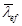
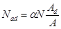
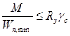
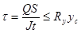
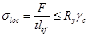
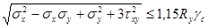
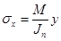

5.6.
Для составных сжатых стержней, ветви которых
соединены планками или решетками, коэффициент φ относительно
свободной оси (перпендикулярной плоскости планок или решеток) должен определяться по формулам (8) - (10) с заменой в них на 
В составных стержнях с решетками помимо расчета на устойчивость стержня в целом следует проверять устойчивость отдельных ветвей на участках между узлами.
Гибкость отдельных ветвей λ1, λ2 и λ3 на участке между планками должка быть не более 40.
Рис. 2. Схема раскосной решетки
Рис. 3. Составной стержень на планках
При наличии в одной из плоскостей сплошного листа вместо планок (рис. 1, б, в) гибкость ветви должна вычисляться по радиусу инерции полусечения относительно его оси, перпендикулярной плоскости планок.
В составных стержнях с решетками гибкость отдельных ветвей между узлами должна быть не более 80 и не должна превышать приведенную гибкость λef стержня в целом. Допускается принимать более высокие значения гибкости ветвей, но не более 120, при условии, что расчет таких стержней выполнен по деформированной схеме.
5.7. Расчет составных элементов из уголков, швеллеров и т.п., соединенных вплотную или через прокладки, следует выполнять как сплошностенчатых при условии, что наибольшие расстояния на участках между приваренными планками (в свету) или между центрами крайних болтов не превышают:
для сжатых элементов.... 40i
« растянутых «........... 80i
Здесь радиус инерции i уголка или швеллера следует принимать для тавровых или двутавровых сечений относительно оси, параллельной плоскости расположения прокладок, а для крестовых сечений - минимальный.
При этом в пределах длины сжатого элемента следует ставить не менее двух прокладок.
5.8*. Расчет соединительных элементов (планок, решеток) сжатых составных стержней должен выполняться на условную поперечную силу Qfic, принимаемую постоянной по всей длине стержня и определяемую по формуле
Qfic = 7,15 · 10-6 (2330 - E / Ry) N / φ, (23)*
где N - продольное усилие в составном стержне;
φ - коэффициент продольного изгиба, принимаемый для составного стержня в плоскости соединительных элементов.
Условную поперечную силу Qfic следует распределять:
при наличии только соединительных планок (решеток) поровну между планками (решетками), лежащими в плоскостях, перпендикулярных оси, относительно которой производится проверка устойчивости;
при наличии сплошного листа и соединительных планок (решеток) - пополам между листом и планками (решетками), лежащими в плоскостях, параллельных листу;
при расчете равносторонних трехгранных составных стержней условная поперечная сила, приходящаяся на систему соединительных элементов, расположенных в одной плоскости, должна приниматься равной 0,8Qfic.
5.9. Расчет соединительных планок и их прикрепления (рис. 3) должен выполняться как расчет элементов безраскосных ферм на:
силу F, срезывающую планку, по формуле
F = Qsl / b; (24)
момент М1, изгибающий планку в ее плоскости, по формуле
М1 = Qsl / 2, (25)
где Qs - условная поперечная сила, приходящаяся на планку одной грани.
5.10. Расчет соединительных решеток должен выполняться как расчет решеток ферм. При расчете перекрестных раскосов крестовой решетки с распорками (рис. 4) следует учитывать дополнительное усилие Nad, возникающее в каждом раскосе от обжатия поясов и определяемое по формуле

где N - усилие в одной ветви стержня;
А - площадь сечения одной ветви;
Ad - площадь сечения одного раскоса;
α - коэффициент, определяемый по формуле
α = al2 / (a3 + 2b3), (27)
где а, l и b - размеры, указанные на рис. 4.
5.11. Расчет стержней, предназначенных для уменьшения расчетной длины сжатых элементов, должен выполняться на усилие, равное условной поперечной силе в основном сжатом элементе, определяемой по формуле (23)*.
ИЗГИБАЕМЫЕ ЭЛЕМЕНТЫ
5.12. Расчет на прочность элементов (кроме балок с гибкой стенкой, с перфорированной стенкой и подкрановых балок), изгибаемых в одной из главных плоскостей, следует выполнять по формуле

Значения касательных напряжений τ в сечениях изгибаемых элементов должны удовлетворять условию

При наличии ослабления стенки отверстиями для болтов значения τ в формуле (29) следует умножать на коэффициент α, определяемый по формуле
α = a / (a - d), (30)
где а - шаг отверстий;
d - диаметр отверстия.
5.13. Для расчета на прочность стенки балки в местах приложения нагрузки к верхнему поясу, а также в опорных сечениях балки, не укрепленных ребрами жесткости, следует определять местное напряжение σloc по формуле

где F - расчетное значение нагрузки (силы);
lef - условная длина распределения нагрузки, определяемая в зависимости от условий опирания; для случая опирания по рис. 5
lef = b + 2tf, (32)
где tf - толщина верхнего пояса балки, если нижняя балка сварная (рис 5, а), или расстояние от наружной грани полки до начала внутреннего закругления стенки, если нижняя балка прокатная (рис 5, б).
Рис. 4. Схема крестовой решетки с распорками
Рис. 5. Схемы для определения длины распределения нагрузки на балку
а - сварную; б - прокатную
5.14*. Для стенок балок, рассчитываемых по формуле (28), должны выполняться условия

где 
σу - то же, перпендикулярные оси балки, в том числе σloc, определяемое по формуле (31);
τху - касательное напряжение, вычисляемое по формуле (29) с учетом формулы (30).
Напряжения σх и σу, принимаемые в формуле (33) со своими знаками, а также τxy следует определять в одной и той же точке балки.
5.15. Расчет на устойчивость балок двутаврового сечения, изгибаемых в плоскости стенки и удовлетворяющих требованиям пп. 5.12 и 5.14*, следует выполнять по формуле
где Wc - следует определять для сжатого пояса;
φb - коэффициент, определяемый по прил. 7*.
При определении значения φb за расчетную длину балки lef следует принимать расстояние между точками закреплений сжатого пояса от поперечных смещений (узлами продольных или поперечных связей, точками крепления жесткого настила); при отсутствии связей lef = l (где l - пролет балки) за расчетную длину консоли следует принимать lef = l при отсутствии закрепления сжатого пояса на конце консоли в горизонтальной плоскости (здесь l - длина консоли); расстояние между точками закреплений сжатого пояса в горизонтальной плоскости при закреплении пояса на конце и по длине консоли.
5.16*. Устойчивость балок не требуется проверять:
а) при передаче нагрузки через сплошной жесткий настил, непрерывно опирающийся на сжатый пояс балки и надежно с ним связанный (плиты железобетонные из тяжелого, легкого и ячеистого бетона, плоский и профилированный металлический настил, волнистую сталь и т.п.);
б) при отношении расчетной длины балки lef к ширине сжатого пояса b, не превышающем значений, определяемых по формулам табл. 8* для балок симметричного двутаврового сечения и с более развитым сжатым поясом, для которых ширина растянутого пояса составляет не менее 0,75 ширины сжатого пояса.
Таблица 8*
|
Наибольшие значения lef / b, при которых не требуется расчет на устойчивость прокатных и сварных балок (при 1 ≤ h / b < 6 и 15 ≤ b / t ≤ 35) |
|
|
К верхнему поясу |
(35) |
|
К нижнему поясу |
(36) |
|
Независимо от уровня приложения нагрузки при расчете участка балки между связями или при чистом изгибе |
(37) |
Обозначения, принятые в табл. 8*:
b и t - соответственно ширина и толщина сжатого пояса;
h - расстояние (высота) между осями поясных листов.
Примечания. 1. Для балок с поясными соединениями на высокопрочных болтах значения lef / b, получаемые по формулам табл. 8* следует умножать на коэффициент 1,2.
2. Для балок с отношением b / t < 15 в формулах табл. 8* следует принимать b / t = 15.
Закрепление сжатого пояса в горизонтальной плоскости должно быть рассчитано на фактическую или условную поперечную силу. При этом условную поперечную силу следует определять:
при закреплении в отдельных точках по формуле (23)*, в которой φ следует определять при гибкости λ = lef / i (здесь i - радиус инерции сечения сжатого пояса в горизонтальной плоскости), а N следует вычислять по формуле
N = (Af + 0,25 Aw) Ry; (37, а)
при непрерывном закреплении по формуле
qfic = 3Qfic / l, (37, б)
где qfic - условная поперечная сила на единицу длины пояса балки;
Qfic - условная поперечная сила, определяемая по формуле (23)*, в которой следует принимать φ = 1, а N - определять по формуле (37, а).
5.17. Расчет на прочность элементов, изгибаемых в двух главных плоскостях, следует выполнять по формуле
где x и у - координаты рассматриваемой точки сечения относительно главных осей.
В балках, рассчитываемых по формуле (38), значения напряжений в стенке балки должны быть проверены по формулам (29) и (33) в двух главных плоскостях изгиба.
При выполнении требований п. 5.16*, а проверка устойчивости балок, изгибаемых в двух плоскостях, не требуется.
5.18*. Расчет на прочность разрезных балок сплошного сечения из стали с пределом текучести до 530 МПа (5400 кгс/см2), несущих статическую нагрузку, при соблюдении пп. 5.19*-5.21, 7.5 и 7.24 следует выполнять с учетом развития пластических деформаций по формулам:
при изгибе в одной из главных плоскостей при касательных напряжениях τ ≤ 0,9Rs (кроме опорных сечений)
при изгибе в двух главных плоскостях при касательных напряжениях τ ≤ 0,5Rs (кроме опорных сечений)
здесь М, Мх и My - абсолютные значения изгибающих моментов;
c1 - коэффициент, определяемый по формулам (42) и (43);
сх и су - коэффициенты, принимаемые по табл. 66.
Расчет в опорном сечении балок (при М = 0; Мх = 0 и My = 0) следует выполнять по формуле
. (41)
При наличии зоны чистого изгиба в формулах (39) и (40) вместо коэффициентов с1, сх и су следует принимать соответственно:
c1m = 0,5 (1 + с); схт = 0,5 (1 + сх); сут = 0,5 (1 + cу).
При одновременном действии в сечении момента М и поперечной силы Q коэффициент c1 следует определять по формулам:
при τ ≤ 0,5Rs c1 = c; (42)
при 0,5Rs < τ ≤ 0,9Rs c1 = 1,05βc, (43)
где
здесь с - коэффициент, принимаемый по табл. 66;
t и h - соответственно толщина и высота стенки;
α - коэффициент, равный α = 0,7 для двутаврового сечения, изгибаемого в плоскости стенки; α = 0 - для других типов сечений;
c1 - коэффициент, принимаемый не менее единицы и не более коэффициента с.
С целью оптимизации балок при их расчете с учетом требований пп. 5.20, 7.5, 7.24 и 13.1 значения коэффициентов с, сх и су в формулах (39) и (40) допускается принимать меньше значений, приведенных в табл. 66, но не менее 1,0.
При наличии ослабления стенки отверстиями для болтов значения касательных напряжений τ следует умножать на коэффициент, определяемый по формуле (30).
5.19*. Расчет на прочность балок переменного сечения с учетом развития пластических деформаций следует выполнять только для одного сечения с наиболее неблагоприятным сочетанием усилий М и Q; в остальных сечениях учитывать развитие пластических деформаций не допускается.
Расчет на прочность изгибаемых элементов из стали с пределом текучести до 530 МПа (5400 кгс/см2), воспринимающих динамические, вибрационные или подвижные нагрузки, допускается выполнять с учетом развития пластических деформаций, не препятствующих требуемым условиям эксплуатации конструкций и оборудования.
5.20. Для обеспечения общей устойчивости балок, рассчитываемых с учетом развития пластических деформаций, необходимо, чтобы либо были выполнены требования п. 5.16*, а, либо наибольшие значения отношений расчетной длины балки к ширине сжатого пояса lef / b, определяемые по формулам табл. 8*, были уменьшены умножением на коэффициент δ = [1 - 0,7 (c1 - 1) / (с - 1)], здесь 1 < c1 < с.
Учет пластичности при расчете балок со сжатым поясом менее развитым, чем растянутый, допускается лишь при выполнении условий п. 5.16*, а.
5.21. В балках, рассчитываемых с учетом развития пластических деформаций, стенки следует укреплять поперечными ребрами жесткости согласно требованиям пп. 7.10, 7.12 и 7.13 , в том числе в местах приложения сосредоточенной нагрузки.
5.22. Расчет на прочность неразрезных и защемленных балок постоянного двутаврового сечения, изгибаемых в плоскости наибольшей жесткости, со смежными пролетами, отличающимися не более чем на 20 % , несущих статическую нагрузку, при условии соблюдения требований пп. 5.20, 5.21, 7.5 и 7.24 следует выполнять по формуле (39) с учетом перераспределения опорных и пролетных моментов.
Расчетные значения изгибающего момента М следует определять по формуле
М = αМтах, (45)
где Мтах - наибольший изгибающий момент в пролете или на опоре, определяемый из расчета неразрезной балки в предположении упругой работы материала;
α - коэффициент перераспределения моментов, определяемый по формуле
; (46)
здесь Mef - условный изгибающий момент, равный:
а) в неразрезных балках со свободно опертыми концами большему из значений
Мef = 0,5М2, (48)
где символ max означает, что следует найти максимум всего следующего за ним выражения;
М1 - изгибающий момент в крайнем пролете, вычисленный как в свободно опертой однопролетной балке;
M2 - максимальный изгибающий момент в промежуточном пролете, вычисленный как в свободно опертой однопролетной балке;
α - расстояние от сечения, в котором действует момент M1, до крайней опоры;
l - длина крайнего пролета;
б) в однопролетных и неразрезных балках с защемленными концами Mef = 0,5M3, где М3 - наибольший из моментов, вычисленных как в балках с шарнирами на опорах;
в) в балке с одним защемленным и другим свободно опертым концом значение Mef следует определять по формуле (47).
Расчетное значение поперечной силы Q в формуле (44) следует принимать в месте действия Мтах. Если Мтах - момент в пролете, следует проверить опорное сечение балки.
5.23. Расчет на прочность неразрезных и защемленных балок, удовлетворяющих требованиям п. 5.22, в случае изгиба в двух главных плоскостях при τ ≤ 0,5Rs следует производить по формуле (40) с учетом перераспределения опорных и пролетных моментов в двух главных плоскостях согласно требованиям п. 5.22.
ЭЛЕМЕНТЫ, ПОДВЕРЖЕННЫЕ ДЕЙСТВИЮ ОСЕВОЙ СИЛЫ С ИЗГИБОМ
5.24*. Расчет на прочность внецентренно-сжатых и сжато-изгибаемых элементов по формуле (49) выполнять не требуется при значении приведенного эксцентриситета mef ≤ 20, отсутствии ослабления сечения и одинаковых значениях изгибающих моментов, принимаемых в расчетах на прочность и устойчивость.
5.25*. Расчет на прочность внецентренно-сжатых, сжато-изгибаемых, внецентренно-растянутых и растянуто-изгибаемых элементов из стали с пределом текучести до 530 МПа (5400 кгс/см2), не подвергающихся непосредственному воздействию динамических нагрузок, при τ ≤ 0,5Rs и N / (AnRy) > 0,1 следует выполнять по формуле
где N, Мх и My - абсолютные значения соответственно продольной силы и изгибающих моментов при наиболее неблагоприятном их сочетании;
п, сх и cу - коэффициенты, принимаемые по прил. 5.
Если N / (AnRy) ≤ 0,1, формулу (49) следует применять при выполнении требований пп. 7.5 и 7.24.
В прочих случаях расчет следует выполнять по формуле
, (50)
где х и у - координаты рассматриваемой точки сечения относительно его главных осей.
5.26. Расчет на устойчивость внецентренно-сжатых и сжато-изгибаемых элементов следует выполнять как в плоскости действия момента (плоская форма потери устойчивости), так и из плоскости действия момента (изгибно-крутильная форма потери устойчивости).
5.27*. Расчет на устойчивость внецентренно-сжатых и сжато-изгибаемых элементов постоянного сечения (с учетом требований пп. 5.28* и 5.33 настоящих норм) в плоскости действия момента, совпадающей с плоскостью симметрии, следует выполнять по формуле
В формуле (51) коэффициент φe следует определять:
а) для сплошностенчатых стержней по табл. 74 в зависимости от условной гибкости и приведенного относительного эксцентриситета теf определяемого по формуле
mef = ηm, (52)
где η - коэффициент влияния формы сечения, определяемый по табл. 73;
- относительный эксцентриситет (здесь е - эксцентриситет; Wc - момент сопротивления сечения для наиболее сжатого волокна);
б) для сквозных стержней с решетками или планками, расположенными в плоскостях, параллельных плоскости изгиба, по табл. 75 в зависимости от условной приведенной гибкости (λef по табл. 7) и относительного эксцентриситета т, определяемого по формуле
, (53)
где а - расстояние от главной оси сечения, перпендикулярной плоскости изгиба, до оси наиболее сжатой ветви, но не менее расстояния до оси стенки ветви.
При вычислении эксцентриситета е = M / N значения М и N следует принимать согласно требованиям п. 5.29.
Расчет на устойчивость внецентренно-сжатых и сжато-изгибаемых трехгранных сквозных стержней с решетками или планками и постоянным по длине равносторонним сечением следует выполнять согласно требованиям разд. 15*.
Расчет на устойчивость не требуется для сплошностенчатых стержней при mef > 20 и для сквозных стержней при m > 20, в этих случаях расчет следует выполнять как для изгибаемых элементов.
5.28*. Внецентренно-сжатые элементы, выполненные из стали с пределом текучести свыше 530 МПа (5400 кгс/см2) и имеющие резко несимметричные сечения (типы сечений 10 и 11 по табл. 73), кроме расчета по формуле (51), должны быть проверены на прочность по формуле
, (54)
где значение Wnt следует вычислять для растянутого волокна, а коэффициент δ определять по формуле
δ = 1 - Nλ2 / (πEA). (55)
5.29. Расчетные значения продольной силы N и изгибающего момента М в элементе следует принимать для одного и того же сочетания нагрузок из расчета системы по недеформированной схеме в предположении упругих деформаций стали.
При этом значения М следует принимать равными:
для колонн постоянного сечения рамных систем - наибольшему моменту в пределах длины колонн;
для ступенчатых колонн - наибольшему моменту на длине участка постоянного сечения;
для колонн с одним защемленным, а другим свободным концом - моменту в заделке, но не менее момента в сечении, отстоящем на треть длины колонны от заделки;
для сжатых верхних поясов ферм и структурных плит, воспринимающих внеузловую нагрузку, - наибольшему моменту в пределах средней трети длины панели пояса, определяемому из расчета пояса как упругой неразрезной балки;
для сжатых стержней с шарнирно-опертыми концами и сечениями, имеющими одну ось симметрии, совпадающую с плоскостью изгиба, - моменту, определяемому по формулам табл. 9.
Для сжатых стержней с шарнирно-опертыми концами и сечениями, имеющими две оси симметрии, расчетные значения эксцентриситетов mef следует определять по табл. 76.
Таблица 9
|
Расчетные значения М при условной гибкости стержня |
||
|
< 4 |
≥ 4 |
|
|
т ≤ 3 |
|
M = M1 |
|
3 < m ≤ 20 |
|
|
Обозначения, принятые в табл. 9:
Мтах - наибольший изгибающий момент в пределах длины стержня;
M1 - наибольший изгибающий момент в пределах средней трети длины стержня, но не менее 0,5Mmax;
m - относительный эксцентриситет, определяемый по формуле
m = MmaxA / (NWc).
Примечание. Во всех случаях следует принимать М ≥ 0,5Мтах.
5.30. Расчет на устойчивость внецентренно-сжатых элементов постоянного сечения из плоскости действия момента при изгибе их в плоскости наибольшей жесткости (Jx > Jy), совпадающей с плоскостью симметрии, следует выполнять по формуле
где с - коэффициент, вычисляемый согласно требованиям п. 5.31;
φy - коэффициент, вычисляемый согласно требованиям п. 5.3 настоящих норм.
5.31. Коэффициент с в формуле (56) следует определять:
при значениях относительного эксцентриситета тх ≤ 5 по формуле
где α и β - коэффициенты, принимаемые по табл. 10;
при значениях относительного эксцентриситета тх ≥ 10 по формуле
где φb - коэффициент, определяемый согласно требованиям п. 5.15 и прил. 7* как для балки с двумя и более закреплениями сжатого пояса; для замкнутых сечений φb = 1,0;
Таблица 10
|
Значения коэффициентов |
|||||
|
α при |
β при |
||||
|
mх ≤ 1 |
1 < mх ≤ 5 |
λy ≤ λx |
λy > λс |
||
|
Открытые
|
0,7 |
0,65 + 0,05 mх |
1 |
|
|
|
|
|
1 |
; при J2/J1 < 0,5 β = 1 |
||
|
Замкнутые. |
0,6 |
0,55 + 0,05 mx |
1 |
|
|
|
с решетками (с планками) |
сплошные |
||||
Обозначения, принятые в табл. 10:
J1 и J2 - моменты инерции соответственно большей и меньшей полок относительно оси симметрии сечения у-у;
φc - значение φy при .
Примечание. Значения коэффициентов α и β для сквозных стержней с решетками (или планками) следует принимать как для замкнутых сечений при наличии не менее двух промежуточных диафрагм по длине стержня. В противном случае следует принимать коэффициенты, установленные для стержней открытого двутаврового сечения.
при значениях относительного эксцентриситета 5 < тx < 10 по формуле
с = cs (2 - 0,2тх) + с10 (0,2mx - 1), (59)
где сs определяется по формуле (57) при mx = 5, а c10 - по формуле (58) при mx = 10.
При определении относительного эксцентриситета mх за расчетный момент Мх следует принимать:
для стержней с шарнирно-опертыми концами, закрепленными от смещения перпендикулярно плоскости действия момента, - максимальный момент в пределах средней трети длины (но не менее половины наибольшего по длине стержня момента);
для стержней с одним защемленным, а другим свободным концом - момент в заделке (но не менее момента в сечении, отстоящем на треть длины стержня от заделки).
При гибкости коэффициенте не должен превышать:
для стержней замкнутого сечения - единицы;
для стержней двутаврового сечения с двумя осями симметрии - значений, определяемых по формуле
(60)
где
δ = 4ρ / μ; ρ = (Jx + Jy) / (Ah2);
; Jt = 0,433 Σbit3i;
здесь bi и ti - соответственно ширина и толщина листов, образующих сечение;
h - расстояние между осями поясов, для двутавровых и тавровых сечений с одной осью симметрии коэффициенты с не должны превышать значений, определяемых по формуле (173) прил. 6.
5.32. Внецентренно-сжатые элементы, изгибаемые в плоскости наименьшей жесткости (Jy <Jx и eу ≠ 0), при λх > λу следует рассчитывать по формуле (51), а также проверять на устойчивость из плоскости действия момента как центрально-сжатые стержни по формуле
где φx - коэффициент, принимаемый согласно требованиям п. 5.3 настоящих норм.
При λх ≤ λу проверки устойчивости из плоскости действия момента не требуется.
5.33. В сквозных внецентренно-сжатых стержнях с решетками, расположенными в плоскостях, параллельных плоскости изгиба, кроме расчета на устойчивость стержня в целом по формуле (51) должны быть проверены отдельные ветви как центрально-сжатые стержни по формуле (7).
Продольную силу в каждой ветви следует определять с учетом дополнительного усилия от момента. Значение этого усилия при изгибе в плоскости, перпендикулярной оси у-у (табл. 7), должно быть определено по формулам: Nad = M / b - для сечений типов 1 и 3; Nad = M/2b - для сечения типа 2; для сечения типа 3 при изгибе в плоскости, перпендикулярной оси х-х, усилие от момента Nad = 1,16M / b (здесь b - расстояние между осями ветвей).
Отдельные ветви внецентренно-сжатых сквозных стержней с планками следует проверять на устойчивость как внецентренно-сжатые элементы с учетом усилий от момента и местного изгиба ветвей от фактической или условной поперечной силы (как в поясах безраскосной фермы), а также п. 5.36 настоящих норм.
5.34. Расчет на устойчивость сплошностенчатых стержней, подверженных сжатию и изгибу в двух главных плоскостях, при совпадении плоскости наибольшей жесткости (Jx > Jy) с плоскостью симметрии следует выполнять по формуле
где
;
здесь φеу следует определять согласно требованиям п. 5.27* с заменой в формулах т и λ соответственно на ту и λу, а с - согласно требованиям п. 5.31.
При вычислении приведенного относительного эксцентриситета mef,y = ηmу для стержней двутаврового сечения с неодинаковыми полками коэффициент η следует определять как для сечения типа 8 по табл. 73.
Если mef,y < mx, то кроме расчета по формуле (62) следует произвести дополнительную проверку по формулам (51) и (56), принимая еу = 0.
Значения относительных эксцентриситетов следует определять по формулам:
и , (63)
где Wcx и Wcv - моменты сопротивления сечений для наиболее сжатого волокна относительно осей соответственно x-x и у-у.
Если λх > λу, то кроме расчета по формуле (62) следует произвести дополнительную проверку по формуле (51), принимая еу = 0.
В случае несовпадения плоскости наибольшей жесткости (Jx > Jy) с плоскостью симметрии расчетное значение mх следует увеличить на 25 %.
Рис. 6. Сквозное сечение стержня из двух сплошностенчатых ветвей
5.35. Расчет на устойчивость сквозных стержней из двух сплошностенчатых ветвей, симметричных относительно оси у-у (рис. 6), с решетками в двух параллельных плоскостях, подверженных сжатию и изгибу в обеих главных плоскостях, следует выполнять:
для стержня в целом - в плоскости, параллельной плоскостям решеток, согласно требованиям п. 5.27*, принимая еу = 0;
для отдельных ветвей - как внецентренно-сжатых элементов по формулам (51) и (56), при этом продольную силу в каждой ветви следует определять с учетом усилия от момента Мх (см. п. 5.33), а момент Му распределять между ветвями пропорционально их жесткостям (если момент Му действует в плоскости одной из ветвей, то следует считать его полностью передающимся на эту ветвь). Гибкость отдельной ветви следует определять при расчете по формуле (51) согласно требованиям п. 6.13 настоящих норм, при расчете по формуле (56) - по максимальному расстоянию между узлами решетки.
5.36. Расчет соединительных планок или решеток сквозных внецентренно-сжатых стержней следует выполнять согласно требованиям п. 5.9 и 5.10 настоящих норм на поперечную силу, равную большему из двух значений: фактическую поперечную силу Q или условную поперечную силу Qfjc, вычисляемую согласно требованиям п. 5.8* настоящих норм.
В случае, когда фактическая поперечная сила больше условной, соединять планками ветви сквозных внецентренно-сжатых элементов, как правило, не следует.
ОПОРНЫЕ ЧАСТИ
5.37. Неподвижные шарнирные опоры с центрирующими прокладками, тангенциальные, а при весьма больших реакциях - балансирные опоры следует применять при необходимости строго равномерного распределения давления под опорой.
Плоские или катковые подвижные опоры следует применять в случаях, когда нижележащая конструкция должна быть разгружена от горизонтальных усилий, возникающих при неподвижном опирании балки или фермы.
Коэффициент трения в плоских подвижных опорах принимается равным 0,3, в катковых - 0,03.
5.38. Расчет на смятие в цилиндрических шарнирах (цапфах) балансирных опор следует выполнять (при центральном угле касания поверхностей, равном или большем π/2) по формуле
, (64)
где F - давление (сила) на опору;
r и l - соответственно радиус и длина шарнира;
Rlp - расчетное сопротивление местному смятию при плотном касании, принимаемое согласно требованиям п. 3.1* настоящих норм.
5.39. Расчет на диаметральное сжатие катков должен производиться по формуле
, (65)
где п - число катков;
d и l - соответственно диаметр и длина катка;
Rcd - расчетное сопротивление диаметральному сжатию катков при свободном касании, принимаемое согласно требованиям п. 3.1* настоящих норм.
6. РАСЧЕТНЫЕ ДЛИНЫ И ПРЕДЕЛЬНЫЕ ГИБКОСТИ ЭЛЕМЕНТОВ СТАЛЬНЫХ КОНСТРУКЦИЙ
РАСЧЕТНЫЕ ДЛИНЫ ЭЛЕМЕНТОВ ПЛОСКИХ ФЕРМ И СВЯЗЕЙ
6.1. Расчетные длины lef элементов плоских ферм и связей, за исключением элементов перекрестной решетки ферм, следует принимать по табл. 11.
6.2. Расчетную длину lef элемента, по длине которого действуют сжимающие силы N1 и N2 (N1 > N2), из плоскости фермы (рис. 7, в, г; рис. 8) следует вычислять по формуле
(66)
Расчет на устойчивость в этом случае следует выполнять на силу N1.
Таблица 11
|
Расчетная длина lef |
|||
|
поясов |
опорных раскосов и опорных стоек |
прочих элементов решетки |
|
|
1. В плоскости фермы: |
|
|
|
|
а) для ферм, кроме указанных в поз. 1, б |
l |
l |
0,8l |
|
б) для ферм из одиночных уголков и ферм с прикреплением элементов решетки к поясам впритык |
l |
l |
0,9l |
|
2. В направлении, перпендикулярном плоскости фермы (из плоскости фермы): |
|
|
|
|
а) для ферм, кроме указанных в поз. 2, б |
l1 |
l1 |
l1 |
|
б) для ферм с поясами из замкнутых профилей с прикреплением элементов решетки к поясам впритык |
l1 |
l1 |
0,9l1 |
Обозначения, принятые в табл. 11 (рис. 7):
l - геометрическая длина элемента (расстояние между центрами узлов) в плоскости фермы;
l1 - расстояние между узлами, закрепленными от смешения из плоскости фермы (поясами ферм, специальными связями, жесткими плитами покрытий, прикрепленными к поясу сварными швами или болтами, и т.п.).
Рис. 7. Схемы решеток ферм для определения расчетных длин элементов
а - треугольная со стойками; б - раскосная; в - треугольная со шпренгелем; г - полураскосная треугольная; д - перекрестная
6.3*. Расчетные длины lef элементов перекрестной решетки, скрепленных между собой (рис. 7, д), следует принимать:
в плоскости фермы - равными расстоянию от центра узла фермы до точки их пересечения (lef = l);
из плоскости фермы: для сжатых элементов - по табл. 12; для растянутых элементов - равными полной геометрической длине элемента (lef = l1).
Рис. 8. Схемы для определения расчетной длины пояса фермы из плоскости
а - схема фермы; б - схема связей между фермами (вид сверху)
Таблица 12
|
Расчетная длина lef из плоскости фермы при поддерживающем элементе |
|||
|
растянутом |
неработающем |
сжатом |
|
|
Оба элемента не прерываются |
l |
0,7l1 |
l1 |
|
Поддерживающий элемент прерывается и перекрывается фасонкой: |
|
|
|
|
рассматриваемый элемент не прерывается |
0,7l1 |
l1 |
1,4l1 |
|
рассматриваемый элемент прерывается и перекрывается фасонкой |
0,7l1 |
- |
|
Обозначения, принятые в табл. 12 (рис. 7, д):
l - расстояние от центра узла фермы до пересечения элементов;
l1 - полная геометрическая длина элемента.
6.4. Радиусы инерции i сечений элементов из одиночных уголков следует принимать:
при расчетной длине элемента, равной l или 0,9l (где l - расстояние между ближайшими узлами) - минимальный (i = imin);
в остальных случаях - относительно оси уголка, перпендикулярной или параллельной плоскости фермы (i = ix или i = iy в зависимости от направления продольного изгиба).
РАСЧЕТНЫЕ ДЛИНЫ ЭЛЕМЕНТОВ ПРОСТРАНСТВЕННЫХ РЕШЕТЧАТЫХ КОНСТРУКЦИЙ
6.5*. Расчетные длины lef и радиусы инерции сечений i сжатых и ненагруженных элементов из одиночных уголков при определении гибкости следует принимать по табл. 13*.
Таблица 13
|
lef |
i |
|
|
Пояса: |
|
|
|
по рис. 9*, а, б, в |
lm |
imin |
|
по рис. 9*, г, д, е |
1,14lm |
ix или iy |
|
Раскосы: |
|
|
|
по рис. 9*, б, в, г |
μdld |
imin |
|
по рис. 9*, а, д |
μdldc |
imin |
|
по рис. 9*, е |
ld |
imin |
|
Распорки: |
|
|
|
по рис. 9*, б |
0,8lс |
imin |
|
по рис. 9*, в |
0,65lс |
imin |
Обозначения, принятые в табл. 13* (рис. 9*):
ldc - условная длина раскоса, принимаемая по табл. 14*;
μd - коэффициент расчетной длины раскоса, принимаемый по табл. 15*.
Примечания: 1. Раскосы по рис. 9*, а, д, е в точках пересечения должны быть скреплены между собой.
2. Для раскосов по рис. 9*, е необходима дополнительная проверка их из плоскости грани с учетом расчета по деформированной схеме.
3. Значение lef для распорок по рис 9*, в дано для равнополочных уголков.
Рис. 9*. Схемы пространственных решетчатых конструкций
а, б, в - с совмещенными в смежных гранях узлами; г, д, е - с несовмещенными в смежных гранях узлами
Расчетные длины lef и радиусы инерции i растянутых элементов из одиночных уголков при определении гибкости следует принимать:
для поясов - по табл. 13*;
для перекрестных раскосов по рис. 9*, а, д, е:
в плоскости грани - равными длине ld и радиусу инерции imin; из плоскости грани - полной геометрической длине раскоса Ld, равной расстоянию между узлами прикрепления к поясам, и радиусу инерции ix относительно оси, параллельной плоскости грани;
для раскосов по рис. 9*, б, в, г - равными длине ld и радиусу инерции imin.
Расчетные длины lef и радиус инерции i элементов из труб или парных уголков следует принимать согласно требованиям подраздела «Расчетные длины элементов плоских ферм и связей».
Таблица 14*
|
Условная длина раскоса Idc при поддерживающем элементе |
|||
|
растянутом |
неработающем |
сжатом |
|
|
Оба элемента не прерываются |
ld |
1,3ld |
0,8Ld |
|
Поддерживающий элемент прерывается и перекрывается фасонкой; рассматриваемый элемент не прерывается: |
|
|
|
|
в конструкциях по рис. 9*, а |
1,3ld |
1,6ld |
Ld |
|
в конструкциях по рис. 9*, д: |
|
|
|
|
при 1 < n ≤ 3 |
(1,75 - 0,15п) ld |
(1,9 - 0,1n) ld |
Ld |
|
при п > 3 |
1,3ld |
1,6ld |
Ld |
|
Узел пересечения элементов закреплен от смещения из плоскости грани (диафрагмой и т.п.) |
ld |
ld |
ld |
Обозначения, принятые в табл. 14*:
Ld - длина раскоса по рис. 9*, a, д;
где Jт,тin и Jd,min - наименьшие моменты инерции сечения соответственно пояса и раскоса.
Таблица 15*
|
n |
Значение μd при , равном |
|||
|
до 60 |
св. 60 до 160 |
св. 160 |
||
|
Сварными швами, болтами (не менее двух), расположенными вдоль элемента, без фасонок |
До 2 |
1,14 |
0,54 + 36 |
0,765 |
|
Св. 6 |
1,04 |
0,56 + 28,8 |
0,74 |
|
|
Одним болтом без фасонки |
Независимо от n |
1,12 |
0,64 + 28,8 |
0,82 |
Обозначения, принятые в табл. 15*:
п - см. табл. 14*;
l - длина, принимаемая: ld - по рис 9*, б, в, г; ldс - по табл. 14* (для элементов - по рис. 9*, а, д).
Примечания. 1. Значения μd при значениях n от 2 до 6 следует определять линейной интерполяцией.
2. При прикреплении одного конца раскоса к поясу фасонок сваркой или болтами, а второго конца через фасонку, коэффициент расчетной длины раскоса следует принимать равным 0,5(1 + μd); при прикреплении обоих концов раскоса через фасонки - μd = 1,0.
3. Концы раскосов по рис. 9*, в следует крепить, как правило, без фасонок. В этом случае при их прикреплении к распорке и поясу сварными швами или болтами (не менее двух), расположенными вдоль раскоса, значение коэффициента μd следует принимать по строке при значении n «До 2». В случае прикрепления их концов одним болтом значение коэффициента μd следует принимать по строке «Одним болтом без фасонки», при вычислении значения lef по табл. 13* вместо μd следует принимать 0,5 (1 + μd).
6.6. Расчетные длины lеf и радиусы инерции сечений i при определении гибкости элементов плоских траверс (например, по рис. 21) следует принимать по табл. 16.
Таблица 16
|
Расчетная длина lef и радиус инерции сечения i |
||||
|
поясов |
решетки |
|||
|
lef |
i |
lef |
i |
|
|
С поясами и решеткой из одиночных уголков (рис. 21, а) |
lm lm1 |
imin ix |
ld, lc - |
imin - |
|
С поясами из швеллеров и решеткой из одиночных уголков (рис. 21, б) |
lm 1,12lm1 |
iy ix |
ld, lc - |
imin - |
Обозначение, принятое в табл. 16:
ix - радиус инерции сечения относительно оси, параллельной плоскости решетки траверсы.
РАСЧЕТНЫЕ ДЛИНЫ ЭЛЕМЕНТОВ СТРУКТУРНЫХ КОНСТРУКЦИЙ
6.7. Расчетные длины lef элементов структурных конструкций следует принимать по табл. 17.
Радиусы инерции сечений i элементов структурных конструкций при определении гибкости следует принимать:
для сжато-изгибаемых элементов относительно оси, перпендикулярной или параллельной плоскости изгиба (i = ix или i = iy);
в остальных случаях - минимальные (i = imin).
РАСЧЕТНЫЕ ДЛИНЫ КОЛОНН (СТОЕК)
6.8. Расчетные длины lef колонн (стоек) постоянного сечения или отдельных участков ступенчатых колонн следует определять по формуле
lef = μl, (67)
где l - длина колонны, отдельного участка ее или высота этажа;
μ - коэффициент расчетной длины.
6.9*. Коэффициенты расчетной длины μ колонн и стоек постоянного сечения следует принимать в зависимости от условий закрепления их концов и вида нагрузки.
Для некоторых случаев закрепления и вида нагрузки значения μ приведены в прил. 6, табл. 71, а.
6.10*. Коэффициенты расчетной длины колонн постоянного сечения в плоскости рамы при жестком креплении ригелей к колоннам следует определять:
для свободных рам при одинаковом нагружении верхних узлов по формулам табл. 17, а;
Таблица 17
|
Расчетная длина lef |
|
|
1. Кроме указанных в поз. 2 и 3 |
l |
|
2. Неразрезные (не прерывающиеся в узлах) пояса и прикрепляемые в узлах сваркой впритык к шаровым или цилиндрическим узловым элементам |
0,85l |
|
3. Из одиночных уголков, прикрепляемых в узлах одной полкой: |
|
|
а) сварными швами или болтами (не менее двух), расположенными вдоль элемента, при l / imin: |
|
|
до 90 |
l |
|
св. 90 до 120 |
0,9l |
|
« 120 « 150 (только для элементов решетки) |
0,75l |
|
св. 150 до 200 (только для элементов решетки) |
0,7l |
|
б) одним болтом при l / imin: |
|
|
до 90 |
l |
|
св. 90 до 120 |
0,95l |
|
« 120 « 150 (только для элементов решетки) |
0,85l |
|
св. 150 до 200 (только для элементов решетки) |
0,8l |
Обозначение, принятое в табл. 17:
l - геометрическая длина элемента (расстояние между узлами структурной конструкции).
для несвободных рам по формуле
В формуле (70, в) p и n принимаются равными:
в одноэтажной раме: ; ;
в многоэтажной раме:
для верхнего этажа p = 0,5 (p1 + p2); п = п1 + n2;
« среднего « p = 0,5 (p1 + p2); n = 0,5 (n1 + n2);
« нижнего « p = p1 + p2; n = 0,5 (n1 + n2),
где p1; p2; n1; n2 следует определять по табл. 17, а.
Для одноэтажных рам в формуле (69) и многоэтажных в формулах (70, а, б, в) при шарнирном креплении нижних или верхних ригелей к колоннам принимаются р = 0 или п = 0 (Ji = 0 или Js = 0), при жестком креплении р = 50 или п = 50 (Ji = ∞ или Js = ∞).
При отношении H / B > 6 (где H - полная высота многоэтажной рамы, В - ширина рамы) должна быть проверена общая устойчивость рамы в целом как составного стержня, защемленного в основании.
Примечание. Рама считается свободной (несвободной), если узел крепления ригеля к колонне имеет (не имеет) свободу перемещения в направлении, перпендикулярном оси колонны в плоскости рамы.
Коэффициент расчетной длины μ наиболее нагруженной колонны в плоскости одноэтажной свободной рамы здания при неравномерном нагружении верхних узлов и наличии жесткого диска покрытия или продольных связей по верху всех колонн следует определять по формуле
где μ - коэффициент расчетной длины проверяемой колонны, вычисленный по табл. 17, а;
Jc и Nc - соответственно момент инерции сечения и усилие в наиболее нагруженной колонне рассматриваемой рамы;
ΣNi и ΣJi - соответственно сумма расчетных усилий и моментов инерции сечений всех колонн рассматриваемой рамы и четырех соседних рам (по две с каждой стороны); все усилия Ni следует находить при той же комбинации нагрузок, которая вызывает усилие в проверяемой колонне.
Значения μef, вычисленные по формуле (71)* следует принимать не менее 0,7.
6.11*. Коэффициенты расчетной длины μ отдельных участков ступенчатых колонн в плоскости рамы следует определять согласно прил. 6.
При определении коэффициентов расчетной длины μ для ступенчатых колонн рам одноэтажных производственных зданий разрешается:
не учитывать влияние степени загружения и жесткости соседних колонн;
определять расчетные длины колонн лишь для комбинации нагрузок, дающей наибольшие значения продольных сил на отдельных участках колонн, и получаемые значения μ использовать для других комбинаций нагрузок;
для многопролетных рам (с числом пролетов два и более) при наличии жесткого диска покрытия или продольных связей, связывающих поверху все колонны и обеспечивающих пространственную работу сооружения, определять расчетные длины колонн как для стоек, неподвижно закрепленных на уровне ригелей;
для одноступенчатых колонн при соблюдении условий l2/l1 ≤ 0,6 и N1/N2 ≥ 3 принимать значения μ по табл. 18.
Таблица 17, а
|
Формулы для определения коэффициента μ |
Коэффициенты n и p в формулах (68), (69) и (70 а, б) для рам |
|||
|
однопролетных |
многопролетных (k ≥ 2) |
|||
|
|
|
|
||
|
|
||||
|
|
при n ≤ 0,2 при n > 0,2 ; (70, б) |
Верхний этаж |
||
|
|
|
|||
|
Средний этаж |
||||
|
|
|
|||
|
Нижний этаж |
||||
|
|
|
|||
Обозначения, принятые в табл. 17, а:
; ; ; .
k - число пролетов;
Jc и lc - соответственно момент инерции сечения и длина проверяемой колонны;
l, l1, l2 - пролеты рамы;
Js, Js1, Js2
и Ji, Ji1, Ji2 - моменты инерции сечения ригелей, примыкающих соответственно к верхнему и нижнему концу проверяемой колонны.
Примечание. Для крайней колонны свободной многопролетной рамы коэффициент μ следует определять как для колонн однопролетной рамы.
6.12. Исключен.
6.13. Расчетные длины колонн в направлении вдоль здания (из плоскости рам) следует принимать равными расстояниям между закрепленными от смещения из плоскости рамы точками (опорами колонн, подкрановых балок и подстропильных ферм; узлами креплений связей и ригелей и т.п.). Расчетные длины допускается определять на основе расчетной схемы, учитывающей фактические условия закрепления концов колонн.
Таблица 18
|
Коэффициенты μ для участка колонны |
|||
|
нижнего при J2/J1, равном |
верхнего |
||
|
св. 0,1 до 0,3 |
св. 0,05 до 0,1 |
||
|
Свободный конец |
2,5 |
3,0 |
3,0 |
|
Конец, закрепленный только от поворота |
2,0 |
2,0 |
3,0 |
|
Неподвижный, шарнирно опертый конец |
1,6 |
2,0 |
2,5 |
|
Неподвижный, закрепленный от поворота конец |
1,2 |
1,5 |
2,0 |
Обозначения, принятые в табл. 18:
l1; J1; N1 - соответственно длина нижнего участка колонны, момент инерции сечения и действующая на этом участке продольная сила;
l2; J2; N2 - то же, верхнего участка колонны.
6.14. Расчетную длину ветвей плоских опор транспортерных галерей следует принимать равной:
в продольном направлении галереи - высоте опоры (от низа базы до оси нижнего пояса фермы или балки), умноженной на коэффициент μ, определяемый как для стоек постоянного сечения в зависимости от условий закрепления их концов;
в поперечном направлении (в плоскости опоры) - расстоянию между центрами узлов, при этом должна быть также проверена общая устойчивость опоры в целом как составного стержня, защемленного в основании и свободного вверху.
ПРЕДЕЛЬНЫЕ ГИБКОСТИ СЖАТЫХ ЭЛЕМЕНТОВ
6.15*. Гибкости сжатых элементов не должны превышать значений, приведенных в табл. 19*.
ПРЕДЕЛЬНЫЕ ГИБКОСТИ РАСТЯНУТЫХ ЭЛЕМЕНТОВ
6.16*. Гибкости растянутых элементов не должны превышать значений, приведенных в табл. 20*.
Таблица 19*
|
Предельная гибкость сжатых элементов |
|
|
1. Пояса, опорные раскосы и стойки, передающие опорные реакции: |
|
|
а) плоских ферм, структурных конструкций и пространственных конструкций из труб и парных уголков высотой до 50 м |
180-60α |
|
б) пространственных конструкций из одиночных уголков, пространственных конструкций из труб и парных уголков высотой св. 50 м |
120 |
|
2. Элементы, кроме указанных в поз. 1 и 7: |
|
|
а) плоских ферм, сварных пространственных и структурных конструкций из одиночных уголков, пространственных и структурных конструкций из труб и парных уголков |
210-60α |
|
б) пространственных и структурных конструкций из одиночных уголков с болтовыми соединениями |
220-40α |
|
3. Верхние пояса ферм, незакрепленные в процессе монтажа (предельную гибкость после завершения монтажа следует принимать по поз. 1) |
220 |
|
4. Основные колонны |
180-60α |
|
5. Второстепенные колонны (стойки фахверка, фонарей и т.п.), элементы решетки колонн, элементы вертикальных связей между колоннами (ниже подкрановых балок) |
210-60α |
|
6. Элементы связей, кроме указанных в поз. 5, а также стержни, служащие для уменьшения расчетной длины сжатых стержней, и другие ненагруженные элементы, кроме указанных в поз. 7 |
200 |
|
7. Сжатые и ненагруженные элементы пространственных конструкций таврового и крестового сечений, подверженные воздействию ветровых нагрузок, при проверке гибкости в вертикальной плоскости |
150 |
Обозначение, принятое в табл. 19*:
- коэффициент, принимаемый не менее 0,5 (в необходимых случаях вместо φ следует применять φe).
Таблица 20*
|
Предельная гибкость растянутых элементов при воздействии на конструкцию нагрузок |
|||
|
динамических, приложенных непосредственно к конструкции |
статических |
от кранов (см. прим. 4) и железнодорожных составов |
|
|
1. Пояса и опорные раскосы плоских ферм (включая тормозные фермы) и структурных конструкций |
250 |
400 |
250 |
|
2. Элементы ферм и структурных конструкций, кроме указанных в поз. 1 |
350 |
400 |
300 |
|
3. Нижние пояса подкрановых балок и ферм |
- |
- |
150 |
|
4. Элементы вертикальных связей между колоннами (ниже подкрановых балок) |
300 |
300 |
200 |
|
5. Прочие элементы связей |
400 |
400 |
300 |
|
6*. Пояса, опорные раскосы стоек и траверс, тяги траверс опор линий электропередачи, открытых распределительных устройств и линий контактных сетей транспорта |
250 |
- |
- |
|
7. Элементы опор линий электропередачи, кроме указанных в поз. 6 и 8 |
350 |
- |
- |
|
8. Элементы пространственных конструкций таврового и крестового сечений (а в тягах траверс опор линий электропередачи и из одиночных уголков), подверженных воздействию ветровых нагрузок, при проверке гибкости в вертикальной плоскости |
150 |
- |
- |
Примечания: 1. В конструкциях, не подвергающихся динамическим воздействиям, гибкость растянутых элементов следует проверять только в вертикальных плоскостях.
2. Гибкость растянутых элементов, подвергнутых предварительному напряжению, не ограничивается.
3. Для растянутых элементов, в которых при неблагоприятном расположении нагрузки может изменяться знак усилия, предельную гибкость следует принимать как для сжатых элементов, при этом соединительные прокладки в составных элементах необходимо устанавливать не реже чем через 40i.
4. Значения предельных гибкостей следует принимать при кранах групп режимов работы 7К (в цехах металлургических производств) и 8К по ГОСТ 25546-82.
5. К динамическим нагрузкам, приложенным непосредственно к конструкциям, относятся нагрузки, принимаемые в расчетах на выносливость или в расчетах с учетом коэффициентов динамичности.
7. ПРОВЕРКА УСТОЙЧИВОСТИ СТЕНОК И ПОЯСНЫХ ЛИСТОВ ИЗГИБАЕМЫХ И СЖАТЫХ ЭЛЕМЕНТОВ
СТЕНКИ БАЛОК
7.1. Стенки балок для обеспечения их устойчивости следует укреплять:
поперечными основными ребрами, поставленными на всю высоту стенки;
поперечными основными и продольными ребрами;
поперечными основными и промежуточными короткими ребрами и продольным ребром (при этом промежуточные короткие ребра следует располагать между сжатым поясом и продольным ребром).
Прямоугольные отсеки стенки (пластинки), заключенные между поясами и соседними поперечными основными ребрами жесткости, следует рассчитывать на устойчивость. При этом расчетными размерами проверяемой пластинки являются:
a - расстояние между осями поперечных основных ребер;
hеf - расчетная высота стенки (рис. 10), равная в сварных балках полной высоте стенки, в балках с поясными соединениями на высокопрочных болтах - расстоянию между ближайшими к оси балки краями поясных уголков, в балках, составленных из прокатных профилей, - расстоянию между началами внутренних закруглений, в гнутых профилях (рис. 11) - расстоянию между краями выкружек;
t - толщина стенки.
Рис. 10. Расчетная высота стенки составной балки
а - сварной из листов; б - на высокопрочных болтах; в - сварной с таврами
Рис. 11. Схемы поперечных сечений гнутых профилей
7.2*. Расчет на устойчивость стенок балок следует выполнять с учетом всех компонентов напряженного состояния (σ, τ и σloc).
Напряжения σ, τ и σloc следует вычислять в предположении упругой работы материала по сечению брутто без учета коэффициента φb.
Сжимающее напряжение σ у расчетной границы стенки, принимаемое со знаком «плюс», и среднее касательное напряжение τ следует вычислять по формулам:
, (72)
где h - полная высота стенки;
M и Q - средние значения соответственно момента и поперечной силы в пределах отсека; если длина отсека больше его расчетной высоты, то M и Q следует вычислять для более напряженного участка с длиной, равной высоте отсека; если в пределах отсека момент или поперечная сила меняют знак, то их средние значения следует вычислять на участке отсека с одним знаком.
Местное напряжение σloc в стенке под сосредоточенной нагрузкой следует определять согласно требованиям пп. 5.13 и 13.34* (при γf1 = 1,1) настоящих норм.
В отсеках, где сосредоточенная нагрузка приложена к растянутому поясу, одновременно должны быть учтены только два компонента напряженного состояния: σ и τ или σloc и τ.
Односторонние поясные швы следует применять в балках, в которых при проверке устойчивости стенок значения левой части формулы (74) не превышают 0,9γс при < 3,8 и γс при ≥ 3,8.
7.3. Устойчивость стенок балок не требуется проверять, если при выполнении условий (33) условная гибкость стенки не превышает значений:
3,5 - при отсутствии местного напряжения в балках с двусторонними поясными швами;
3,2 - то же, в балках с односторонними поясными швами;
2,5 - при наличии местного напряжения в балках с двусторонними поясными швами.
При этом следует устанавливать поперечные основные ребра жесткости согласно требованиям пп. 7.10, 7.12 и 7.13 настоящих норм.
7.4*. Расчет на устойчивость стенок балок симметричного сечения, укрепленных только поперечными основными ребрами жесткости, при отсутствии местного напряжения (σloc = 0) и условной гибкости стенки ≤ 6 следует выполнять по формуле
где γc - коэффициент, принимаемый по табл. 6* настоящих норм;
В формуле (75) коэффициент сcr следует принимать:
для сварных балок - по табл. 21 в зависимости от значения коэффициента δ:
Таблица 21
|
≤0,8 |
1,0 |
2,0 |
4,0 |
6,0 |
10,0 |
≥30 |
|
|
ccr |
30,0 |
31,5 |
33,3 |
34,6 |
34,8 |
35,1 |
35,5 |
где bf и tf - соответственно ширина и толщина сжатого пояса балки;
β - коэффициент, принимаемый по табл. 22;
для балок на высокопрочных болтах сcr = 35,2.
Таблица 22
|
Условия работы сжатого пояса |
β |
|
|
Подкрановые |
Крановые рельсы не приварены |
2 |
|
Крановые рельсы приварены |
∞ |
|
|
Прочие |
При непрерывном опирании плит |
∞ |
|
В прочих случаях |
0,8 |
Примечание. Для отсеков подкрановых балок, где сосредоточенная нагрузка приложена к растянутому поясу, при вычислении коэффициента δ следует принимать β = 0,8.
В формуле (76) ,
где d - меньшая из сторон пластинки (hef или a);
μ - отношение большей стороны пластинки к меньшей.
7.5. Расчет на устойчивость стенок балок симметричного сечения с учетом развития пластических деформаций при отсутствии местного напряжения (σloc = 0) и при τ ≤ 0,9Rs, Af / Aw ≥ 0,25, 2,2 < ≤6 следует выполнять по формуле
M ≤ Ry γc h2eft (Af / Aw + α), (78)
где
α = 0,24 - 0,15 (τ / Rs)2 - 8,5 · 10-3 ( - 2,2)2;
здесь τс следует принимать по табл. 6*, а τ - определять по формуле (73).
7.6*. Расчет на устойчивость стенок балок симметричного сечения, укрепленных только поперечными основными ребрами жесткости (рис. 12), при наличии местного напряжения (σloc ≠ 0) следует выполнять по формуле
где γс - следует принимать по табл. 6* настоящих норм;
σ, σloc; τ - определять согласно требованиям п. 7.2*;
τcr - определять по формуле (76).
Значения σcr и σloc,cr в формуле (79) следует определять:
а) при a / hef ≤ 0,8
σcr - по формуле (75);
, (80)
Рис. 12. Схема балки, укрепленной поперечными основными ребрами жесткости (1)
а - сосредоточенная нагрузка F приложена к сжатому поясу; б - то же, к растянутому поясу
где c1 - коэффициент, принимаемый для сварных балок по табл. 23 в зависимости от отношения a / hef и значения δ, вычисляемого по формуле (77), а для балок на высокопрочных болтах - по табл. 23, а;
.
Если нагружен растянутый пояс, то при расчете стенки с учетом только σloc и τ при определении коэффициента δ по формуле (77) за bf и tf следует принимать соответственно ширину и толщину нагруженного растянутого пояса;
б) при a / hef > 0,8 и отношении σloc / σ больше значений, указанных в табл. 24,
σcr - по формуле , (81)
где с2 - коэффициент, определяемый по табл. 25;
σloc,cr - по формуле (80), в которой при a / hef > 2 следует принимать а = 2hef;
в) при a / hef > 0,8 и отношении σloc,cr / σ не более значений, указанных в табл. 24:
σcr - по формуле (75);
σloc,cr - по формуле (80), но с подстановкой 0,5a вместо а при вычислении в формуле (80) и в табл. 23.
Во всех случаях τcr следует вычислять по действительным размерам отсека.
7.7. В стенке балки симметричного сечения, укрепленной кроме поперечных основных ребер одним продольным ребром жесткости, расположенным на расстоянии h1 от расчетной (сжатой) границы отсека (рис. 13), обе пластинки, на которые это ребро разделяет отсек, следует рассчитывать отдельно:
а) пластинку 3, расположенную между сжатым поясом и продольным ребром, по формуле
σ / σcr1 + σloc / σloc,cr1 + (τ / τcr1)2 ≤ γc, (82)
где γc следует принимать по табл. 6* настоящих норм, а σ, σloc и τ - определять согласно требованиям п. 7.2*.
Таблица 23
|
Значения с1, для сварных балок при a / hef, равном |
|||||||||
|
≤0,5 |
0,6 |
0,8 |
1,0 |
1,2 |
1,4 |
1,6 |
1,8 |
≥2,0 |
|
|
≤1 |
11,5 |
12,4 |
14,8 |
18,0 |
22,1 |
27,1 |
32,6 |
38,9 |
45,6 |
|
2 |
12,0 |
13,0 |
16,1 |
20,4 |
25,7 |
32,1 |
39,2 |
46,5 |
55,7 |
|
4 |
12,3 |
13,3 |
16,6 |
21,6 |
28,1 |
36,3 |
45,2 |
54,9 |
65,1 |
|
6 |
12,4 |
13,5 |
16,8 |
22,1 |
29,1 |
38,3 |
48,7 |
59,4 |
70,4 |
|
10 |
12,4 |
13,6 |
16,9 |
22,5 |
30,0 |
39,7 |
51,0 |
63,3 |
76,5 |
|
≥30 |
12,5 |
13,7 |
17,0 |
22,9 |
31,0 |
41,6 |
53,8 |
68,2 |
83,6 |
Таблица 23,а
|
a / hef |
0,5 |
0,6 |
0,8 |
1,0 |
1,2 |
1,4 |
1,6 |
1,8 |
2,0 |
|
c1 |
13,7 |
15,9 |
20,8 |
28,4 |
38,7 |
51,0 |
64,2 |
79,8 |
94,9 |
Таблица 24
|
δ |
Предельные значения σloc при a / hef, равном |
||||||||
|
0,8 |
0,9 |
1,0 |
1,2 |
1,4 |
1,6 |
1,8 |
≥2,0 |
||
|
Сварные |
≤1 |
0 |
0,146 |
0,183 |
0,267 |
0,359 |
0,445 |
0,540 |
0,618 |
|
2 |
0 |
0,109 |
0,169 |
0,277 |
0,406 |
0,543 |
0,652 |
0,799 |
|
|
4 |
0 |
0,072 |
0,129 |
0,281 |
0,479 |
0,711 |
0,930 |
1,132 |
|
|
6 |
0 |
0,066 |
0,127 |
0,288 |
0,536 |
0,874 |
1,192 |
1,468 |
|
|
10 |
0 |
0,059 |
0,122 |
0,296 |
0,574 |
1,002 |
1,539 |
2,154 |
|
|
≥30 |
0 |
0,047 |
0,112 |
0,300 |
0,633 |
1,283 |
2,249 |
3,939 |
|
|
На высокопрочных болтах |
- |
0 |
0,121 |
0,184 |
0,378 |
0,643 |
1,131 |
1,614 |
2,347 |
Таблица 25
|
a / hef |
≤0,8 |
0,9 |
1,0 |
1,2 |
1,4 |
1,6 |
1,8 |
≥2,0 |
|
c2 |
По табл. 21, т.е. с2 = сcr |
37,0 |
39,2 |
45,2 |
52,8 |
62,0 |
72,6 |
84,7 |
Рис. 13. Схема балки, укрепленной поперечными основными ребрами и продольным ребром жесткости
a - сосредоточенная нагрузка F приложена к сжатому поясу; б - то же, к растянутому; 1 - поперечное основное ребро жесткости; 2 - продольное ребро жесткости; 3 - пластинка у сжатого пояса; 4 - пластинка у растянутого пояса
Значения σcr1 и σloc,cr1 следует определять по формулам:
при σloc = 0
где
;
при σloc ≠ 0 и μ1 = a / h1 ≤ 2
, (85)
Если a / h1 > 2, то при вычислении σcr1 и σloc,cr1 следует принимать a = 2h1; τcr1 необходимо определять по формуле (76) с подстановкой в нее размеров проверяемой пластинки;
б) пластинку 4, расположенную между продольным ребром и растянутым поясом, - по формуле
σloc,cr2 - следует определять по формуле (80) и табл. 23 при δ = 0,8, заменяя значение отношения a / hef значением a/(hef - h1);
τcr2 - следует определять по формуле (76) с подстановкой в нее размеров проверяемой пластинки;
σloc2 = 0,4σloc - при приложении нагрузки к сжатому поясу (рис. 13, а);
σloc2 = σloc - при приложении нагрузки к растянутому поясу (рис. 13, б).
Коэффициент γс следует определять по табл. 6* настоящих норм.
7.8. При укреплении пластинки 3 дополнительными короткими поперечными ребрами их следует доводить до продольного ребра (рис. 14).
Рис. 14. Схема балки, укрепленной поперечными основными ребрами жесткости (1), продольным ребром жесткости (2), разделяющим отсек стенки на пластинку (3) у сжатого пояса и пластинку (4) у растянутого пояса, а также короткими ребрами жесткости (5)
В этом случае расчет пластинки 3 следует выполнять по формулам (82) - (86), в которых величину а следует заменять величиной а1, где а1 - расстояние между осями соседних коротких ребер (рис. 14); расчет пластинки 4 следует выполнять согласно требованиям п. 7.7, б.
7.9. Расчет на устойчивость стенок балок асимметричного сечения (с более развитым сжатым поясом) следует выполнять по формулам пп. 7.4*, 7.6*-7.8 с учетом следующих изменений:
для стенок, укрепленных только поперечными ребрами жесткости, в формулах (75) и (81) и табл. 25 значение hef следует принимать равным удвоенному расстоянию от нейтральной оси до расчетной (сжатой) границы отсека. При a / hef > 0,8 и σloc ≠ 0 следует выполнять оба расчета, указанные в пп. 7.6*, б и 7.6*, в, независимо от значения σlос / σ;
для стенок, укрепленных поперечными ребрами и одним продольным ребром, расположенным в сжатой зоне:
а) в формулы (83), (84) и (87) вместо h1/hef следует подставлять ;
б) в формулу (88) вместо (0,5 - h1/hef) следует подставлять .
Здесь ,
где σt - краевое растягивающее напряжение (со знаком «минус») у расчетной границы отсека.
В случае развитого растянутого (ненагруженного) пояса расчет на устойчивость при одновременном действии напряжений σ и τ следует производить по формуле (90).
7.10. Стенки балок следует укреплять поперечными ребрами жесткости, если значения условной гибкости стенки балки превышают 3,2 при отсутствии подвижной нагрузки и 2,2 - при наличии подвижной нагрузки на поясе балки.
Расстояние между основными поперечными ребрами не должно превышать 2hef при > 3,2 и 2,5hef при ≤ 3,2.
Допускается превышать указанные выше расстояния между ребрами до значения 3hef при условии, что стенка балки удовлетворяет проверкам по пп. 7.4*, 7.6*-7.9 и общая устойчивость балки обеспечена выполнением требований п. 5.16*, а или 5.16*, б, причем значения lef / b для сжатого пояса не должны превышать значений, определяемых по формулам табл. 8* для нагрузки, приложенной к верхнему поясу.
В местах приложения больших неподвижных сосредоточенных грузов и на опорах следует устанавливать поперечные ребра.
В стенке, укрепленной только поперечными ребрами, ширина их выступающей части bh должна быть для парного симметричного ребра не менее hеf / 30 + 40 мм, для одностороннего ребра - не менее hеf / 24 + 50 мм; толщина ребра ts должна быть не менее .
Стенки балок допускается укреплять односторонними поперечными ребрами жесткости из одиночных уголков, привариваемых к стенке пером. Момент инерции такого ребра, вычисляемый относительно оси, совпадающей с ближайшей к ребру гранью стенки, должен быть не меньше, чем для парного симметричного ребра.
7.11. При укреплении стенки одним продольным ребром необходимые моменты инерции Js сечений ребер жесткости следует определять:
для поперечных ребер - по формуле
Js = 3heft3; (89)
для продольного ребра - по формулам табл. 21 с учетом его предельных значений.
При расположении продольного и поперечных ребер с одной стороны стенки моменты инерции сечений каждого из них вычисляются относительно оси, совпадающей с ближайшей к ребру гранью стенки.
Таблица 26
|
h1/hef |
Необходимый момент инерции сечения продольного ребра Jsl |
Предельные значения |
|
|
минимальные Jsl,min |
максимальные Jsl,max |
||
|
0,20 |
(2,5 - 0,5a / hef) × a2t3 / hef |
1,5heft3 |
7heft3 |
|
0,25 |
(1,5 - 0,4a / hef) × a2t3 / hef |
1,5heft3 |
3,5heft3 |
|
0,30 |
1,5heft3 |
- |
- |
Примечание. При вычислении Jsl для промежуточных значений h1/hef допускается линейная интерполяция.
Минимальные размеры выступающей части поперечных и продольных ребер жесткости следует принимать согласно требованиям п. 7.10.
7.12. Участок стенки балки составного сечения над опорой при укреплении его ребрами жесткости следует рассчитывать на продольный изгиб из плоскости как стойку, нагруженную опорной реакцией. В расчетное сечение этой стойки следует включать сечение ребра жесткости и полосы стенки шириной 0,65t с каждой стороны ребра. Расчетную длину стойки следует принимать равной высоте стенки.
Нижние торцы опорных ребер (рис. 15) должны быть остроганы либо плотно пригнаны или приварены к нижнему поясу балки. Напряжения в этих сечениях при действии опорной реакции не должны превышать: в первом случае (рис. 15, а) - расчетного сопротивления прокатной стали смятию Rp при а ≤ 1,5t и сжатию Ry при а > 1,5t; во втором случае (рис. 15, б) - смятию Rp.
Рис. 15. Схема устройства опорного ребра жесткости
a - в торце с применением строжки; б - удаленного от торца с плотной пригонкой или приваркой к нижнему поясу
В случае приварки опорного ребра к нижнему поясу балки сварные швы должны быть рассчитаны на воздействие опорной реакции.
7.13. Одностороннее ребро жесткости, расположенное в месте приложения к верхнему поясу сосредоточенной нагрузки, следует рассчитывать как стойку, сжатую с эксцентриситетом, равным расстоянию от срединной плоскости стенки до центра тяжести расчетного сечения стойки. В расчетное сечение этой стойки необходимо включать сечение ребра жесткости и полосы стенки шириной 0,65t с каждой стороны ребра. Расчетную длину стойки следует принимать равной высоте стенки.
СТЕНКИ ЦЕНТРАЛЬНО ВНЕЦЕНТРЕННО-СЖАТЫХ И СЖАТО-ИЗГИБАЕМЫХ ЭЛЕМЕНТОВ
7.14*. Отношение расчетной высоты стенки к толщине hef / t в центрально-сжатых (т = 0), а также во внецентренно-сжатых и сжато-изгибаемых элементах по рис. 16* (т > 0), кроме случаев, указанных в п. 7.16*, как правило, не должно превышать значений , где значения следует определять по табл. 27*.
Рис. 16*. Схема внецентренно-сжатых элементов двутаврового и коробчатого сечений
7.15. Исключен с табл. 28.
7.16*. Для внецентренно-сжатых и сжато-изгибаемых элементов двутаврового и коробчатого сечений (рис. 16*), рассчитываемых по формуле (56), отношение расчетной высоты стенки hef к толщине t следует определять в зависимости от значения α = (σ - σ1) / σ (σ - наибольшее сжимающее напряжение у расчетной границы стенки, принимаемое со знаком «плюс» и вычисленное без учета коэффициентов φe, φexy или cφ; σ1 - соответствующее напряжение у противоположной расчетной границы стенки) и принимать не более значений, определяемых:
при α ≤ 0,5 - по п. 7.14* настоящих норм;
« α ≥ 1 - по формуле
где β = 1,4 (2α - 1) - (здесь - среднее касательное напряжение в рассматриваемом сечении);
при 0,5 < α < 1 - линейной интерполяцией между значениями, вычисленными при α = 0,5 и α = 1.
7.17*. Для внецентренно-сжатых и сжато-изгибаемых элементов с сечениями, отличными от двутаврового и коробчатого (за исключением таврового сечения), установленные в п. 7.16* значения отношений hef / t следует умножать на коэффициент 0,75.
7.18*.
Для центрально-, внецентренно-сжатых и
сжато-изгибаемых элементов таврового сечения с
условной гибкостью  от 0,8 до 4 отношение расчетной высоты
стенки тавра к толщине при 1 ≤ bf / hef ≤ 2 не должно превышать значений,
определяемых по формуле
от 0,8 до 4 отношение расчетной высоты
стенки тавра к толщине при 1 ≤ bf / hef ≤ 2 не должно превышать значений,
определяемых по формуле
где bf - ширина полки тавра;
hef - расчетная высота стенки тавра.
При значениях  < 0,8 или
< 0,8 или  > 4 в формуле (91)* следует принимать соответственно
> 4 в формуле (91)* следует принимать соответственно  = 0,8 или
= 0,8 или  = 4.
= 4.
При назначении сечения элемента по предельной гибкости, а также при соответствующем обосновании расчетом наибольшие значения hef / t следует умножать на коэффициент (где φm = φ или φm = φе, σ = N / A), но не более чем на 1,25.
Таблица 27
|
Сечение элемента |
Значение |
Формулы для определения |
|
|
т = 0 |
Двутавровое |
|
=
1,30 + 0,15 |
|
|
= 1,20 + 0,35 |
||
|
Коробчатое, швеллерное прокатное |
|
= 1,2 |
|
|
|
= 1,0 + 0,2 |
||
|
Швеллерное, кроме прокатного |
|
= 1,0 |
|
|
|
=
0,85 + 0,19 |
||
|
m ≥ 1,0 |
Двутавровое, коробчатое |
< 2,0 |
= 1,30 + 0,152 |
|
≥ 2,0 |
= 1,20 + 0,35, но не более 3,1 |
Обозначения, принятые в табл. 27*:
 -
условная гибкость элемента, принимаемая в расчете на устойчивость при центральном сжатии;
-
условная гибкость элемента, принимаемая в расчете на устойчивость при центральном сжатии;
- условная гибкость элемента, принимаемая в расчете на устойчивость в плоскости действия момента.
Примечания: 1. К коробчатым относятся замкнутые прямоугольные профили (составные, гнутые прямоугольные и квадратные).
2. В коробчатом сечении при т > 0 значение следует определять для стенки, параллельной плоскости изгибающего момента.
3. При значениях 0 < т < 1,0 значение следует определять линейной интерполяцией между значениями, вычисленные при т = 0 и m = 1,0.
7.19*. В центрально-сжатых элементах двутаврового сечения для стенок, имеющих расчетную высоту hef и укрепленных парным продольным ребром, расположенным посредине, значение hef / t, установленное в п. 7.14*, следует умножать на коэффициент ß, определяемый при Jsl/(heft3) ≤ 6 по формуле
где Jsl - момент инерции сечения продольного ребра.
При укреплении стенки внецентренно-сжатого или сжато-изгибаемого элемента продольным ребром жесткости с моментом инерции Jsl ≥ 6heft3, расположенным посредине стенки, наиболее нагруженную часть стенки между поясом и осью ребра следует рассматривать как самостоятельную пластинку и проверять согласно требованиям п. 7.14* или 7.16*.
При расположении ребра с одной стороны стенки его момент инерции должен вычисляться относительно оси, совмещенной с ближайшей гранью стенки.
Продольные ребра жесткости следует включать в расчетные сечения элементов.
В случае выполнения продольного ребра в виде гофра стенки при вычислении hef следует учитывать развернутую длину гофра.
Минимальные размеры выступающей части продольных ребер жесткости следует принимать согласно требованиям п. 7.10 настоящих норм.
7.20*. В случаях, когда фактическое значение hef / t превышает значение, определяемое по п. 7.14* (для центрально-сжатых элементов не более чем в два раза), в расчетных формулах за значение A следует принимать значение Ared, вычисленное с высотой стенки hred (в коробчатом сечении определяются hred и hred1 для пластинок, образующих сечение и расположенных соответственно параллельно и перпендикулярно плоскости изгиба):
для двутаврового и швеллерного сечений Ared = А - (hef - hred)t;
для коробчатого сечения:
при центральном сжатии Ared = А - 2(hef - hred)t - 2(hef1 - hred1)t1;
при внецентренном сжатии и сжатии с изгибом Ared = А - 2(hef - hred)t.
Значения hred следует определять:
для центрально-сжатых элементов швеллерного сечения по формуле
, (92, a)
где - условная гибкость стенки швеллерного сечения, принимаемая по табл. 27*;
для центрально-сжатых элементов двутаврового и коробчатого сечений по формуле
, (92, б)
где - условная гибкость стенки соответствующего сечения, принимаемая по табл. 27* при т = 0;
- условная гибкость стенки, при вычислении hred, принимаемая равной ;
k - коэффициент, принимаемый равным для двутаврового сечения k = 1,2 + 0,15 (при > 3,5 следует принимать = 3,5) и для коробчатого сечения k = 2,9 + 0,2 - 0,7, (при > 2,3 следует принимать = 2,3); здесь - условная гибкость элемента, принятая по табл. 27*;
для внецентренно-сжатых и сжато-изгибаемых
элементов по формуле (92, б), где значение следует
вычислять по табл. 27*, а значение k при =  .
.
Указанные изменения расчетной высоты стенки следует принимать только для определения площади сечения A при расчетах по формулам (7), (51), (61) и (62) настоящих норм.
7.21*. Стенки сплошных колонн при hef / t ≥ 2,3 следует укреплять поперечными ребрами жесткости, расположенными на расстоянии (2,5-3)hef одно от другого; на каждом отправочном элементе должно быть не менее двух ребер.
Минимальные размеры выступающей части поперечных ребер жесткости следует принимать согласно требованиям п. 7.10 настоящих норм.
ПОЯСНЫЕ ЛИСТЫ (ПОЛКИ) ЦЕНТРАЛЬНО-, ВНЕЦЕНТРЕННО-СЖАТЫХ, СЖАТО-ИЗГИБАЕМЫХ И ИЗГИБАЕМЫХ ЭЛЕМЕНТОВ
7.22*. Расчетную ширину свеса поясных листов (полок) bef следует принимать равной расстоянию: в сварных элементах - от грани стенки (при односторонних швах от грани стенки со стороны шва) до края поясного листа (полки); в прокатных профилях - от начала внутреннего закругления до края полки; в гнутых профилях (рис. 11) - от края выкружки стенки до края поясного листа (полки).
7.23*. В центрально-, внецентренно-сжатых и сжато-изгибаемых элементах с условной гибкостью от 0,8 до 4 отношение расчетной ширины свеса поясного листа (полки) bef к толщине t следует принимать не более значений, определяемых по формулам табл. 29*.
При значениях < 0,8 или > 4 в формулах табл. 29* следует принимать соответственно = 0,8 или = 4.
7.24. В изгибаемых элементах отношение ширины свеса сжатого пояса bef к толщине t следует принимать не более значений, определяемых по табл. 30.
Таблица 29*
|
Наибольшие отношения |
|
|
Неокаймленная двутавра и тавра |
|
|
Окаймленная ребром двутавра и тавра |
|
|
Неокаймленная равнополочных уголков и гнутых профилей (за исключением швеллера) |
|
|
Окаймленная ребром равнополочных уголков и гнутых профилей |
|
|
Неокаймленная большая неравнополочного уголка и полка швеллера |
|
|
Окаймленная ребром и усиленная планками гнутых профилей |
|
7.25. Высота окаймляющего ребра полки aef, измеряемая от ее оси, должна быть не менее 0,3bef в элементах, не усиленных планками (рис. 11) и 0,2bеf - в элементах, усиленных планками, при этом толщина ребра должна быть не менее 2aef.
7.26*. В центрально-сжатых элементах коробчатого сечения наибольшее отношение расчетной ширины пояса к толщине bef / t следует принимать по табл. 27* как для стенок коробчатого сечения.
Во внецентренно-сжатых и сжато-изгибаемых элементах коробчатого сечения наибольшее отношение bef / t следует принимать:
при т ≤ 0,3 - как для центрально-сжатых элементов;
при т ≥ 1,0 и ≤ 2 + 0,04m ;
при т ≥ 1,0 и > 2 + 0,04m .
При значениях относительного эксцентриситета 0,3 < m <1 наибольшие отношения bef / t следует определять линейной интерполяцией между значениями bef / t, вычисленными при m = 0,3 и m = 1.
Таблица 30
|
Характеристика свеса |
Наибольшие значения отношения |
|
|
В пределах упругих деформаций |
Неокаймленный |
|
|
Окаймленный ребром |
|
|
|
С учетом развития пластических деформаций1 |
Неокаймленный |
bef / t = 0,11hef / tw, но не более |
|
Окаймленный ребром |
bef / t = 0,16hef / tw, но не более |
1 При hef / tw ≤ наибольшее значение отношения bef / t следует принимать:
для неокаймленного свеса
для окаймленного ребром свеса
Обозначения, принятые в табл. 30:
hef - расчетная высота балки;
tw - толщина стенки балки.
7.27*. При назначении сечений центрально-, внецентренно-сжатых и сжато-изгибаемых элементов по предельной гибкости, а изгибаемых элементов - по предельным прогибам, а также при соответствующем обосновании расчетом наибольшие значения отношения расчетной ширины свеса к толщине bef / t следует умножать на коэффициент , но не более чем на 1,25.
Здесь следует принимать:
для центрально-, внецентренно-сжатых и сжато-изгибаемых элементов: φm - меньшее из значений φ, φe, φexy, cφ, использованное при проверке устойчивости элемента; σ = N / A;
для изгибаемых элементов: φm = 1; σ - большее из двух значений или .
8. РАСЧЕТ ЛИСТОВЫХ КОНСТРУКЦИЙ
РАСЧЕТ НА ПРОЧНОСТЬ
8.1. Расчет на прочность листовых конструкций (оболочек вращения), находящихся в безмоментном напряженном состоянии, следует выполнять по формуле
, (93)
где σх и σу - нормальные напряжения по двум взаимно перпендикулярным направлениям;
γс - коэффициент условий работы конструкций, назначаемый в соответствии с требованиями СНиП по проектированию сооружений промышленных предприятий.
При этом абсолютные значения главных напряжений должны быть не более значений расчетных сопротивлений, умноженных на γс.
8.2. Напряжения в безмоментных тонкостенных оболочках вращения (рис. 17), находящихся под давлением жидкости, газа или сыпучего материала, следует определять по формулам:
; (94)
, (95)
где σ1 и σ2 - соответственно меридиональное и кольцевое напряжения;
r1 и r2 - радиусы кривизны в главных направлениях срединной поверхности оболочки;
р - расчетное давление на единицу поверхности оболочки;
t - толщина оболочки;
F - проекция на ось z-z оболочки полного расчетного давления, действующего на часть оболочки abc (рис. 17);
r и β - радиус и угол, показанные на рис. 17.
Рис. 17. Схема оболочки вращения
Рис. 18. Схема конической оболочки вращения
8.3. Напряжения в замкнутых безмоментных тонкостенных оболочках вращения, находящихся под внутренним равномерным давлением, следует определять по формулам:
для цилиндрических оболочек
и ; (96)
для сферических оболочек
; (97)
для конических оболочек
и ; (98)
где p - расчетное внутреннее давление на единицу поверхности оболочки;
r - радиус срединной поверхности оболочки (рис. 18);
β - угол между образующей конуса и его осью z-z (рис. 18).
8.4. В местах изменения формы или толщины оболочек, а также изменения нагрузки должны быть учтены местные напряжения (краевой эффект).
РАСЧЕТ НА УСТОЙЧИВОСТЬ
8.5. Расчет на устойчивость замкнутых круговых цилиндрических оболочек вращения, равномерно сжатых параллельно образующим, следует выполнять по формуле
σ1 ≤ γcσcr1, (99)
где σ1 - расчетное напряжение в оболочке;
σcr1 - критическое напряжение, равное меньшему из значений ψRy или cEt / r (здесь r - радиус срединной поверхности оболочки; t - толщина оболочки).
Значения коэффициентов ψ при 0 < r / t ≤ 300 следует определять по формуле
. (100)
Значения коэффициентов с следует определять по табл. 31.
Таблица 31
|
r / t |
100 |
200 |
300 |
400 |
600 |
800 |
1000 |
1500 |
2500 |
|
с |
0,22 |
0,18 |
0,16 |
0,14 |
0,11 |
0,09 |
0,08 |
0,07 |
0,06 |
В случае внецентренного сжатия параллельно образующим или чистого изгиба в диаметральной плоскости при касательных напряжениях в месте наибольшего момента, не превышающих значений 0,07 E (t / r)3/2, напряжение σcr1 должно быть увеличено в (1,1 - 0,1 σ΄1/σ1) раз, где σ΄1 - наименьшее напряжение (растягивающие напряжения считать отрицательными).
8.6. В трубах, рассчитываемых как сжатые или сжато-изгибаемые стержни, при условной гибкости должно быть выполнено условие
Такие трубы следует рассчитывать на устойчивость в соответствии с требованиями разд. 5 настоящих норм независимо от расчета на устойчивость стенок. Расчет на устойчивость стенок бесшовных или электросварных труб не требуется, если значение r / t не превышает половины значений, определяемых по формуле (101).
8.7. Цилиндрическая панель, опертая по двум образующим и двум дугам направляющей, равномерно сжатая вдоль образующих, при b2/(rt) ≤ 20 (где b - ширина панели, измеренная по дуге направляющей) должна быть рассчитана на устойчивость как пластинка по формулам:
при расчетном напряжении σ ≤ 0,8 Ry
; (102)
при расчетном напряжении σ = Ry
. (103)
При 0,8Ry < σ < Ry наибольшее отношение b/t следует определять линейной интерполяцией.
Если b2/(rt) > 20, панель следует рассчитывать на устойчивость как оболочку согласно требованиям п. 8.5.
8.8*. Расчет на устойчивость замкнутой круговой цилиндрической оболочки вращения при действии внешнего равномерного давления р, нормального к боковой поверхности, следует выполнять по формуле
σ2 ≤ γcσcr2, (104)
где σ2 = pr / t - расчетное кольцевое напряжение в оболочке;
σcr2 - критическое напряжение, определяемое по формулам:
при 0,5 ≤ l / r ≤ 10
σcr2 = 0,55E (r / l) (t / r)3/2; (105)
при l / r ≥ 20
σcr2 = 0,17E (t / r)2; (106)
при 10 < l / r < 20 напряжение σcr2 следует определять линейной интерполяцией.
Здесь l длина цилиндрической оболочки.
Та же оболочка, но укрепленная кольцевыми ребрами, расположенными с шагом s ≥ 0,5r между осями, должна быть рассчитана на устойчивость по формулам (104)-(106) с подстановкой в них значения s вместо l.
В этом случае должно быть удовлетворено условие устойчивости ребра в своей плоскости как сжатого стержня согласно требованиям п. 5.3 при N = prs и расчетной длине стержня lef = 1,8r, при этом в сечение ребра следует включать участки оболочки шириной 0,65t с каждой стороны от оси ребра, а условная гибкость стержня не должна превышать 6,5.
При одностороннем ребре жесткости его момент инерции следует вычислять относительно оси, совпадающей с ближайшей поверхностью оболочки.
8.9. Расчет на устойчивость замкнутой круговой цилиндрической оболочки вращения, подверженной одновременному действию нагрузок, указанных в пп. 8.5 и 8.8*, следует выполнять по формуле
, (107)
где σcr1 должно быть вычислено согласно требованиям п. 8.5, а σcr2 - согласно требованиям п. 8.8*.
8.10. Расчет на устойчивость конической оболочки вращения с углом конусности β ≤ 60°, сжатой силой N вдоль оси (рис. 19) следует выполнять по формуле
N ≤ γcNcr, (108)
где Ncr - критическая сила, определяемая по формуле
Ncr = 6,28rmtσcr1cos2β, (109)
здесь t - толщина оболочки;
σcr1 - значение напряжения, вычисленное согласно требованиям п. 8.5 с заменой радиуса r радиусом rm, равным
Рис. 19. Схема конической оболочки вращения под действием продольного усилия сжатия
8.11. Расчет на устойчивость конической оболочки вращения при действии внешнего равномерного давления p, нормального к боковой поверхности, следует выполнять по формуле
σ2 ≤ γcσcr2, (111)
здесь σ2 = prm / t - расчетное кольцевое напряжение в оболочке;
σcr2 - критическое напряжение, определяемое по формуле
σcr2 = 0,55E (rm / h)(t / rm)3/2, (112)
где h - высота конической оболочки (между основаниями);
rт - радиус, определяемый по формуле (110).
8.12. Расчет на устойчивость конической оболочки вращения, подверженной одновременному действию нагрузок, указанных в пп. 8.10 и 8.11, следует выполнять по формуле
, (113)
где значения Ncr и σcr2 следует вычислять по формулам (109) и (112).
8.13. Расчет на устойчивость полной сферической оболочки (или ее сегмента) при r / t ≤ 750 и действии внешнего равномерного давления p, нормального к ее поверхности, следует выполнять по формуле
σ ≤ γcσcr, (114)
где σ = prm/2t - расчетное напряжение;
σcr = 0,1Et / r - критическое напряжение принимаемое не более Ry;
r - радиус срединной поверхности сферы.
ОСНОВНЫЕ ТРЕБОВАНИЯ К РАСЧЕТУ МЕТАЛЛИЧЕСКИХ МЕМБРАННЫХ КОНСТРУКЦИЙ
8.14. При расчете мембранных конструкций опирание кромок мембраны на упругие элементы контура следует считать шарнирным по линии опирания и способным передавать сдвиг на элементы контура.
8.15. Расчет мембранных конструкций должен производиться на основе совместной работ мембраны и элементов контура с учетом их деформированного состояния и геометрической нелинейности мембраны.
8.16. Нормальные и касательные напряжении, распределенные по кромкам мембраны, следуя считать уравновешенными сжатием и изгибом опорного контура в тангенциальной плоскости.
При расчете опорных элементов контура мембранных конструкций следует учитывать:
изгиб в тангенциальной плоскости;
осевое сжатие в элементах контура;
сжатие, вызываемое касательными напряжениями по линии контакта мембраны с элементами контура;
изгиб в вертикальной плоскости.
8.17. При прикреплении мембраны с эксцентриситетом относительно центра тяжести сечения элементов контура кроме факторов, указанных в п. 8.16, при расчете контуров следует учитывать кручение.
8.18. При определении напряжений в центре круглых в плане плоских мембран допускается принимать, что опорный контур является недеформируемым.
8.19. Для определения напряжений в центре эллиптической мембраны, закрепленной на деформируемом контуре, допускается применять требования п. 8.18 при условии замены значения радиуса значением большей главной полуоси эллипса (отношение большей полуоси к меньшей должно быть не более 1,2).
9. РАСЧЕТ ЭЛЕМЕНТОВ СТАЛЬНЫХ КОНСТРУКЦИЙ НА ВЫНОСЛИВОСТЬ
9.1. Стальные конструкции и их элементы (подкрановые балки, балки рабочих площадок, элементы конструкций бункерных и разгрузочных эстакад, конструкции под двигатели и др.), непосредственно воспринимающие многократно действующие подвижные, вибрационные или другого вида нагрузки с количеством циклов нагружений 105 и более, которые могут привести к явлению усталости, следует проектировать с применением таких конструктивных решений, которые не вызывают значительной концентрации напряжений, и проверять расчетом на выносливость.
Таблица 32*
|
Значения Rv при временном сопротивлении стали разрыву Run, МПа (кгс/см2) |
|||||
|
до 420 (4300) |
св. 420 (4300) до 440 (4500) |
св. 440 (4500) до 520 (5300) |
св. 520 (5300) до 580 (5900) |
св. 580 (5900) до 635 (6500) |
|
|
1 |
120 (1220) |
128 (1300) |
132 (1350) |
136 (1390) |
145 (1480) |
|
2 |
100 (1020) |
106 (1080) |
108 (1100) |
110 (1120) |
116 (1180) |
|
3 |
Для всех марок стали 90 (920) |
||||
|
4 |
То же 75 (765) |
||||
|
5 |
« 60 (610) |
||||
|
6 |
« 45 (460) |
||||
|
7 |
« 36 (370) |
||||
|
8 |
« 27 (275) |
||||
Количество циклов нагружений следует принимать по технологическим требованиям эксплуатации.
Конструкции высоких сооружений типа антенн, дымовых труб, мачт, башен и подъемно-транспортных сооружений, проверяемые на резонанс от действия ветра, следует проверять расчетом на выносливость.
Расчет конструкций на выносливость следует производить на действие нагрузок, устанавливаемых согласно требованиям СНиП по нагрузкам и воздействиям.
9.2*. Расчет на выносливость следует производить по формуле
σmax ≤ αRvγv, (115)
где Rv - расчетное сопротивление усталости, принимаемое по табл. 32* в зависимости от временного сопротивления стали и групп элементов конструкций, приведенных в табл. 83*;
α - коэффициент, учитывающий количество циклов нагружений n и вычисляемый:
при n < 3,9 · 106 по формулам:
для групп элементов 1 и 2
; (116)
для групп элементов 3-8
; (117)
при п ≥ 3,9 · 106 α = 0,77;
γv - коэффициент, определяемый по табл. 33 в зависимости от вида напряженного состояния и коэффициента асимметрии напряжений p = σmin / σmax; здесь σmах и σmin - соответственно наибольшее и наименьшее по абсолютному значению напряжения в рассчитываемом элементе, вычисленные по сечению нетто без учета коэффициента динамичности и коэффициентов φ, φе, φb. При разнозначных напряжениях коэффициент асимметрии напряжений следует принимать со знаком «минус».
При расчетах на выносливость по формуле (115) произведение αRvγv не должно превышать Ru / γu.
Таблица 33
|
Коэффициент асимметрии напряжений ρ |
Формулы для вычисления коэффициента γv |
|
|
Растяжение |
-1 ≤ ρ ≤ 0 |
|
|
0 < ρ ≤ 0,8 |
|
|
|
0,8 < ρ < 1 |
|
|
|
Сжатие |
-1 ≤ ρ < 1 |
|
9.3. Стальные конструкции и их элементы, непосредственно воспринимающие нагрузки с количеством циклов нагружений менее 105, следует проектировать с применением таких конструктивных решений, которые не вызывают значительной концентрации напряжений, и в необходимых случаях проверять расчетом на малоцикловую прочность.
10. РАСЧЕТ ЭЛЕМЕНТОВ СТАЛЬНЫХ КОНСТРУКЦИЙ НА ПРОЧНОСТЬ С УЧЕТОМ ХРУПКОГО РАЗРУШЕНИЯ
Центрально- и внецентренно-растянутые элементы, а также зоны растяжения изгибаемых элементов конструкций, возводимых в климатических районах I1, I2, II2, II3, II4 и II5, следует проверять на прочность с учетом сопротивления хрупкому разрушению по формуле
σmax ≤ βRu / γu, (118)
где σmах - наибольшее растягивающее напряжение в расчетном сечении элемента, вычисленное по сечению нетто без учета коэффициентов динамичности и φb;
β - коэффициент, принимаемый по табл. 84.
Элементы, проверяемые на прочность с учетом хрупкого разрушения, следует проектировать с применением решений, при которых не требуется увеличивать площадь сечения, установленную расчетом согласно требованиям разд. 5 настоящих норм.
11. РАСЧЕТ СОЕДИНЕНИЙ СТАЛЬНЫХ КОНСТРУКЦИЙ
СВАРНЫЕ СОЕДИНЕНИЯ
11.1*. Расчет сварных стыковых соединений на центральное растяжение или сжатие следует производить по формуле
где t - наименьшая толщина соединяемых элементов;
lw - расчетная длина шва, равная полной его длине, уменьшенной на 2t, или полной его длине в случае вывода концов шва за пределы стыка.
При расчете сварных стыковых соединений элементов конструкций, рассчитанных согласно п. 5.2, в формуле (119) вместо Rwy следует принимать Rwu / γu.
Расчет сварных стыковых соединений выполнять не требуется при применении сварочных материалов согласно прил. 2, полном проваре соединяемых элементов и физическом контроле качества растянутых швов.
11.2*. Сварные соединения с угловыми швами при действии продольной и поперечной сил следует рассчитывать на срез (условный) по двум сечениям (рис. 20):
Рис. 20. Схема расчетных сечений сварного соединения с угловым швом
1 - сечение по металлу шва; 2 - сечение по металлу границы сплавления
по металлу шва (сечение 1)
N / (βfkflw) ≤ Rwfγwfγc; (120)
по металлу границы сплавления (сечение 2)
N / (βzkflw) ≤ Rwzywzγc, (121)
где lw - расчетная длина шва, принимаемая меньше его полной длины на 10 мм;
βf и βz - коэффициенты, принимаемые при сварке элементов из стали: с пределом текучести до 530 МПа (5400 кгс/см2) - по табл. 34*; с пределом текучести свыше 530 МПа (5400 кгс/см2) независимо от вида сварки, положения шва и диаметра сварочной проволоки βf = 0,7 и βz = 1;
γwf и γwz - коэффициенты условий работы шва, равные 1 во всех случаях, кроме конструкций, возводимых в климатических районах I1, I2, II2 и II3, для которых γwf = 0,85 для металла шва с нормативным сопротивлением Rwun = 410 МПа (4200 кгс/см2) и γwz = 0,85 - для всех сталей.
Для угловых швов, размеры которых установлены в соответствии с расчетом, в элементах из стали с пределом текучести до 285 МПа (2900 кгс/см2) следует применять электроды или сварочную проволоку согласно п. 3.4 настоящих норм, для которых расчетные сопротивления срезу по металлу шва Rwf должны быть более Rwz, а при ручной сварке - не менее чем в 1,1 раза превышать расчетные сопротивления срезу по металлу границы сплавления Rwz, но не превышать значений Rwzβz / βf; в элементах из стали с пределом текучести свыше 285 МПа (2900 кгс/см2) допускается применять электроды или сварочную проволоку, для которых выполняется условие
Rwz < Rwf ≤ Rwzβz / βf.
При выборе электродов или сварочной проволоки следует учитывать группы конструкций и климатические районы, указанные в табл. 55*.
11.3*. Расчет сварных соединений с угловыми швами на действие момента в плоскости, перпендикулярной плоскости расположения швов, следует производить по двум сечениям по формулам:
по металлу шва
; (122)
по металлу границы сплавления
; (123)
где Wf - момент сопротивления расчетного сечения по металлу шва;
Wz - то же, по металлу границы сплавления.
Расчет сварных соединений с угловыми швами на действие момента в плоскости расположения этих швов следует производить по двум сечениям по формулам:
по металлу шва
; (124)
по металлу границы сплавления
, (125)
где Jfx и Jfy - моменты инерции расчетного сечения по металлу шва относительно его главных осей;
Jzx и Jzy - то же, по металлу границы сплавления;
х и y - координаты точки шва, наиболее удаленной от центра тяжести расчетного сечения швов, относительно главных осей этого сечения.
Таблица 34*
|
Положение шва |
Коэффициент |
Значения коэффициентов βf и βz при катетах швов, мм |
||||
|
3-8 |
9-12 |
14-16 |
18 и более |
|||
|
Автоматическая при d = 3 - 5 |
В лодочку |
βf |
1,1 |
0,7 |
||
|
βz |
1,15 |
1,0 |
||||
|
Нижнее |
βf |
1,1 |
0,9 |
0,7 |
||
|
βz |
1,15 |
1,05 |
1,0 |
|||
|
Автоматическая и полуавтоматическая при d = 1,4 - 2 |
В лодочку |
βf |
0,9 |
0,8 |
0,7 |
|
|
βz |
1,05 |
1,0 |
||||
|
Нижнее, горизонтальное, вертикальное |
βf |
0,9 |
0,8 |
0,7 |
||
|
βz |
1,05 |
1,0 |
||||
|
Ручная; полуавтоматическая проволокой сплошного сечения при d < 1,4 или порошковой проволокой |
В лодочку, нижнее, горизонтальное, вертикальное, потолочное |
βf |
0,7 |
|||
|
βz |
1,0 |
|||||
Примечание. Значения коэффициентов соответствуют нормальным режимам сварки.
11.4. Сварные стыковые соединения, выполненные без физического контроля качества, при одновременном действии в одном и том же сечении нормальных и касательных напряжений следует проверять по формуле (33), в которой значения σх, σу, τху и Ry следует принимать соответственно: σх = σwx и σу = σwy - нормальные напряжения в сварном соединении по двум взаимно перпендикулярным направлениям; τху = τwxy - касательное напряжение в сварном соединении; Ry = Rwy.
11.5. При расчете сварных соединений с угловыми швами на одновременное действие продольной и поперечной сил и момента должны быть выполнены условия
τf ≤ Rwfγwfγc и τz ≤ Rwzγwzγc, (126)
где τf и τz - напряжения в расчетом сечении соответственно по металлу шва и по металлу границы сплавления, равные геометрическим суммам напряжений, вызываемых продольной и поперечной силами и моментом.
БОЛТОВЫЕ СОЕДИНЕНИЯ
11.6. В болтовых соединениях при действии продольной силы N, проходящей через центр тяжести соединения, распределение этой силы между болтами следует принимать равномерным.
11.7*. Расчетное усилие Nb, которое может быть воспринято одним болтом, следует определять по формулам:
на срез
Nb = RbsγbAns; (127)
на смятие
Nb = RbpγbdΣt; (128)
на растяжение
Nb = RbtAbn. (129)
Обозначения, принятые в формулах (127)-(129):
Rbs, Rbp, Rbt - расчетные сопротивления болтовых соединений;
d - наружный диаметр стержня болта;
А = πd2 / 4 - расчетная площадь сечения стержня болта;
Аbn - площадь сечения болта нетто; для болтов с метрической резьбой значение Аbп следует принимать по прил. 1 к ГОСТ 22356-77*;
Σt - наименьшая суммарная толщина элементов, сминаемых в одном направлении;
ns - число расчетных срезов одного болта;
γb - коэффициент условий работы соединения, который следует принимать по табл. 35*.
|
Коэффициент условий работы соединения γb |
|
|
1. Многоболтовое в расчетах на срез и смятие при болтах: |
|
|
класса точности А |
1,0 |
|
классов точности В и С, высокопрочных с нерегулируемым натяжением |
0,9 |
|
2. Одноболтовое и многоболтовое в расчете на смятие при а = 1,5d и b = 2d в элементах конструкций из стали с пределом текучести, МПа (кгс/см2): |
|
|
до 285 (2900) |
0,8 |
|
св. 285 (2900) до 380 (3900) |
0,75 |
Обозначения, принятые в табл. 35*:
а - расстояние вдоль усилия от края элемента до центра ближайшего отверстия;
b - то же, между центрами отверстий;
d - диаметр отверстия для болта.
Примечания: 1. Коэффициенты, установленные в поз. 1 и 2, следует учитывать одновременно.
2. При значениях расстояний а и b, промежуточных между указанными в поз. 2 и в табл. 39, коэффициент γb следует определять линейной интерполяцией.
Для одноболтовых соединений следует учитывать коэффициенты условий работы γc согласно требованиям п. 11.8.
11.8. Количество n болтов в соединении при действии продольной силы N следует определять по формуле
, (130)
где Nmin - меньшее из значений расчетного усилия для одного болта, вычисленных согласно требованиям п. 11.7* настоящих норм.
11.9. При действии на соединение момента, вызывающего сдвиг соединяемых элементов, распределение усилий на болты следует принимать пропорционально расстояниям от центра тяжести соединения до рассматриваемого болта.
11.10. Болты, работающие одновременно на срез и растяжение, следует проверять отдельно на срез и растяжение.
Болты, работающие на срез от одновременного действия продольной силы и момента, следует проверять на равнодействующее усилие.
11.11. В креплениях одного элемента к другому через прокладки или иные промежуточные элементы, а также в креплениях с односторонней накладкой количество болтов должно быть увеличено против расчета на 10 %.
При креплениях выступающих полок уголков или швеллеров с помощью коротышей количество болтов, прикрепляющих одну из полок коротыша, должно быть увеличено против расчета на 50 %.
СОЕДИНЕНИЯ НА ВЫСОКОПРОЧНЫХ БОЛТАХ
11.12. Соединения на высокопрочных болтах следует рассчитывать в предположении передачи действующих в стыках и прикреплениях усилий через трение, возникающее по соприкасающимся плоскостям соединяемых элементов от натяжения высокопрочных болтов. При этом распределение продольной силы между болтами следует принимать равномерным.
11.13*. Расчетное усилие Qbh, которое может быть воспринято каждой поверхностью трения соединяемых элементов, стянутых одним высокопрочным болтом, следует определять по формуле
где Rbf - расчетное сопротивление растяжению высокопрочного болта;
μ - коэффициент трения, принимаемый по табл. 36*;
γh - коэффициент надежности, принимаемый по табл. 36*;
Аbn - площадь сечения болта нетто, определяемая по табл. 62*;
γb - коэффициент условий работы соединения, зависящий от количества n болтов, необходимых для восприятия расчетного усилия, и принимаемый равным:
0,8 при п < 5;
0,9 при 5 ≤ n < 10;
1,0 при п ≥ 10.
Количество п высокопрочных болтов в соединении при действии продольной силы следует определять по формуле
, (132)*
где k - количество поверхностей трения соединяемых элементов.
Натяжение высокопрочного болта следует производить осевым усилием Р = RbhAbn.
11.14. Расчет на прочность соединяемых элементов, ослабленных отверстиями под высокопрочные болты, следует выполнять с учетом того, что половина усилия, приходящегося на каждый болт, в рассматриваемом сечении уже передана силами трения. При этом проверку ослабленных сечений следует производить: при динамических нагрузках - по площади сечения нетто Ап, при статических нагрузках - по площади сечения брутто А при Ап ≥ 0,85А либо по условной площади Ас = 1,18An при Аn < 0,85А.
Таблица 36*
|
Способ регулирования натяжения болтов |
Коэффициент трения μ |
Коэффициенты γh при нагрузке и при разности номинальных диаметров отверстий и болтов δ, мм |
||
|
динамической и при δ = 3-6; статической и при δ = 5-6 |
динамической и при δ = 1; статической и при δ = 1-4 |
|||
|
1. Дробеметный или дробеструйный двух поверхностей без консервации |
По М |
0,58 |
1,35 |
1,12 |
|
« α |
0,58 |
1,20 |
1,02 |
|
|
2. То же, с консервацией (металлизацией распылением цинка или алюминия) |
« М |
0,50 |
1,35 |
1,12 |
|
« α |
0,50 |
1,20 |
1,02 |
|
|
3. Дробью одной поверхности с консервацией полимерным клеем и посыпкой карборундовым порошком, стальными щетками без консервации - другой поверхности |
« М |
0,50 |
1,35 |
1,12 |
|
« α |
0,50 |
1,20 |
1,02 |
|
|
|
|
|
|
|
|
|
|
|
|
|
|
|
|
|
|
|
|
4. Газопламенный двух поверхностей без консервации |
« М |
0,42 |
1,35 |
1,12 |
|
« α |
0,42 |
1,20 |
1,02 |
|
|
5. Стальными щетками двух поверхностей без консервации |
« М |
0,35 |
1,35 |
1,17 |
|
« α |
0,35 |
1,25 |
1,06 |
|
|
6. Без обработки |
« М |
0,25 |
1,70 |
1,30 |
|
« α |
0,25 |
1,50 |
1,20 |
|
Примечания. 1. Способ регулирования натяжения болтов по М означает регулирование по моменту закручивания, а по α - по углу поворота гайки.
2. Допускаются другие способы обработки соединяемых поверхностей, обеспечивающие значения коэффициентов трения μ не ниже указанных в таблице.
СОЕДИНЕНИЯ С ФРЕЗЕРОВАННЫМИ ТОРЦАМИ
11.15. В соединениях элементов с фрезерованными торцами (в стыках и базах колонн и т.п.) сжимающую силу следует считать полностью передающейся через торцы.
Во внецентренно-сжатых и сжато-изгибаемых элементах сварные швы и болты, включая высокопрочные, указанных соединений следует рассчитывать на максимальное растягивающее усилие от действия момента и продольной силы при наиболее неблагоприятном их сочетании, а также на сдвигающее усилие от действия поперечной силы.
ПОЯСНЫЕ СОЕДИНЕНИЯ В СОСТАВНЫХ БАЛКАХ
11.16. Сварные швы и высокопрочные болты, соединяющие стенки и пояса составных двутавровых балок, следует рассчитывать согласно табл. 37*.
При отсутствии ребер жесткости для передачи больших неподвижных сосредоточенных нагрузок расчет прикрепления верхнего пояса следует выполнять как для подвижной сосредоточенной нагрузки.
При приложении неподвижной сосредоточенной нагрузки к нижнему поясу балки сварные швы и высокопрочные болты, прикрепляющие этот пояс к стенке, следует рассчитывать по формулам (138)-(140)*табл. 37* независимо от наличия ребер жесткости в местах приложения грузов.
Таблица 37*
|
Вид соединения |
Формулы для расчета поясных соединений в составных балках |
|
|
Неподвижная |
Угловые швы: двусторонние |
T / (2βfkf) ≤ Rwfγwfγc; (133) T / (2βzkf) ≤ Rwzγwzγc (134) |
|
односторонние |
T / (βfkf) ≤ Rwfγwfγc; (135) T / (βzkf) ≤ Rwzγwzγc (136) |
|
|
Высокопрочные болты |
aT ≤ Qbhkγc; (137)* |
|
|
Подвижная |
Угловые швы двусторонние |
/ (2βzkf) ≤ Rwzγwzγc (139) |
|
Высокопрочные болты |
a ≤ Qbhkγc; (140)* |
Обозначения, принятые в табл. 37*:
- сдвигающее пояс усилие на единицу длины, вызываемое поперечной силой Q, где S - статический момент брутто пояса балки относительно нейтральной оси;
- давление от сосредоточенного груза F (для подкрановых балок от давления колеса крана, принимаемого без коэффициента динамичности), где γf - коэффициент, принимаемый согласно требованиям СНиП по нагрузкам и воздействиям, lef - условная длина распределения сосредоточенного груза, принимаемая по пп. 5.13 и 13.34* настоящих норм;
α - коэффициент, принимаемый при нагрузке по верхнему поясу балки, в которой стенка пристрогана к верхнему поясу, α = 0,4, а при отсутствии пристрожки стенки или при нагрузке по нижнему поясу α = 1;
a - шаг поясных высокопрочных болтов;
Qbh - расчетное усилие одного высокопрочного болта, определяемое по формуле (131)*;
k - количество поверхностей трения соединяемых элементов.
Сварные поясные швы, выполненные с проваром на всю толщину стенки, следует считать равнопрочными со стенкой.
11.17. В балках с соединениями на высокопрочных болтах с многолистовыми поясными пакетами прикрепление каждого из листов за местом своего теоретического обрыва следует рассчитывать на половину усилия, которое может быть воспринято сечением листа. Прикрепление каждого листа на участке между действительным местом его обрыва и местом обрыва предыдущего листа следует рассчитывать на полное усилие, которое может быть воспринято сечением листа.
12. ОБЩИЕ ТРЕБОВАНИЯ ПО ПРОЕКТИРОВАНИЮ СТАЛЬНЫХ КОНСТРУКЦИЙ
ОСНОВНЫЕ ПОЛОЖЕНИЯ
12.1*. При проектировании стальных конструкций необходимо:
предусматривать связи, обеспечивающие в процессе монтажа и эксплуатации устойчивость и пространственную неизменяемость сооружения в целом и его элементов, назначая их в зависимости от основных параметров сооружения и режима его эксплуатации (конструктивной схемы, пролетов, типов кранов и режимов их работы, температурных воздействий и т.п.);
учитывать производственные возможности и мощность технологического и кранового оборудования предприятий - изготовителей стальных конструкций, а также подъемно-транспортное и другое оборудование монтажных организаций;
производить разбивку конструкций на отправочные элементы с учетом вида транспорта и габаритов транспортных средств, рационального и экономичного транспортирования конструкций на строительство и выполнения максимального объема работ на предприятии-изготовителе;
использовать возможность фрезерования торцов для мощных сжатых и внецентренно-сжатых элементов (при отсутствии значительных краевых растягивающих напряжений) при наличии соответствующего оборудования на предприятии-изготовителе;
предусматривать монтажные крепления элементов (устройство монтажных столиков и т.п.);
в болтовых монтажных соединениях применять болты класса точности В и С, а также высокопрочные, при этом в соединениях, воспринимающих значительные вертикальные усилия (креплениях ферм, ригелей, рам и т.п.), следует предусматривать столики; при наличии в соединениях изгибающих моментов следует применять болты класса точности В и С, работающие на растяжение.
12.2. При конструировании стальных сварных конструкций следует исключать возможность вредного влияния остаточных деформаций и напряжений, в том числе сварочных, а также концентрации напряжений, предусматривая соответствующие конструктивные решения (с наиболее равномерным распределением напряжений в элементах и деталях, без входящих углов, резких перепадов сечения и других концентраторов напряжений) и технологические мероприятия (порядок сборки и сварки, предварительный выгиб, механическую обработку соответствующих зон путем строгания, фрезерования, зачистки абразивным кругом и др.).
12.3. В сварных соединениях стальных конструкций следует исключать возможность хрупкого разрушения конструкций в процессе их монтажа и эксплуатации в результате неблагоприятного сочетания следующих факторов:
высоких местных напряжений, вызванных воздействием сосредоточенных нагрузок или деформаций деталей соединений, а также остаточных напряжений;
резких концентраторов напряжений на участках с высокими местными напряжениями и ориентированных поперек направления действующих растягивающих напряжений;
пониженной температуры, при которой данная марка стали в зависимости от ее химического состава, структуры и толщины проката переходит в хрупкое состояние.
При конструировании сварных конструкций следует учитывать, что конструкции со сплошной стенкой имеют меньше концентраторов напряжений и менее чувствительны к эксцентриситетам по сравнению с решетчатыми конструкциями.
12.4*. Стальные конструкции следует защищать от коррозии в соответствии со СНиП по защите строительных конструкций от коррозии.
Защита конструкций, предназначенных для эксплуатации в условиях тропического климата, должна выполняться по ГОСТ 15150-69*.
12.5. Конструкции, которые могут подвергаться воздействию расплавленного металла (в виде брызг при разливке металла, при прорыве металла из печей или ковшей), следует защищать облицовкой или ограждающими стенками из огнеупорного кирпича или жароупорного бетона, защищенными от механических повреждений.
Конструкции, подвергающиеся длительному воздействию лучистой или конвекционной теплоты или кратковременному воздействию огня во время аварий тепловых агрегатов, следует защищать подвесными металлическими экранами или футеровкой из кирпича или жароупорного бетона.
СВАРНЫЕ СОЕДИНЕНИЯ
12.6. В конструкциях со сварными соединениями следует:
предусматривать применение высокопроизводительных механизированных способов сварки;
обеспечивать свободный доступ к местам выполнения сварных соединений с учетом выбранного способа и технологии сварки.
12.7. Разделку кромок под сварку следует принимать по ГОСТ 8713-79*, ГОСТ 11533-75, ГОСТ 14771-76*, ГОСТ 23518-79, ГОСТ 5264-80 и ГОСТ 11534-75.
12.8. Размеры и форму сварных угловых швов следует принимать с учетом следующих условий:
а) катеты угловых швов kf должны быть не более 1,2t, где t - наименьшая толщина соединяемых элементов;
б) катеты угловых швов kf следует принимать по расчету, но не менее указанных в табл. 38*;
в) расчетная длина углового сварного шва должна быть не менее 4kf и не менее 40 мм;
г) расчетная длина флангового шва должна быть не более 85βfkf (βf - коэффициент, принимаемый по табл. 34*), за исключением швов, в которых усилие действует на всем протяжении шва;
д) размер нахлестки должен быть не менее 5 толщин наиболее тонкого из свариваемых элементов;
е) соотношения размеров катетов угловых швов следует принимать, как правило, 1:1. При разных толщинах свариваемых элементов допускается принимать швы с неравными катетами, при этом катет, примыкающий к более тонкому элементу, должен соответствовать требованиям п. 12.8, а, а примыкающий к более толстому элементу - требованиям п. 12.8, б;
ж) в конструкциях, воспринимающих динамические и вибрационные нагрузки, а также возводимых в климатических районах I1, I2, II2 и II3, угловые швы следует выполнять с плавным переходом к основному металлу при обосновании расчетом на выносливость или на прочность с учетом хрупкого разрушения.
12.9*. Для прикрепления ребер жесткости, диафрагм и поясов сварных двутавров по пп. 7.2*, 7.3, 13.12*, 13.26 и конструкций группы 4 допускается применять односторонние угловые швы, катеты которых kf - следует принимать по расчету, но не менее указанных в табл. 38*.
Применение этих односторонних угловых швов не допускается в конструкциях:
группы I;
эксплуатируемых в среднеагрессивной и сильноагрессивной средах (классификация согласно СНиП по защите строительных конструкций от коррозии);
возводимых в климатических районах I1, I2, II2 и II3.
12.10. Для расчетных и конструктивных угловых швов в проекте должны быть указаны вид сварки, электроды или сварочная проволока, положение шва при сварке.
12.11. Сварные стыковые соединения листовых деталей следует, как правило, выполнять прямыми с полным проваром и с применением выводных планок.
В монтажных условиях допускается односторонняя сварка с подваркой корня шва и сварка на остающейся стальной подкладке.
12.12. Применение комбинированных соединений, в которых часть усилия воспринимается сварными швами, а часть - болтами, не допускается.
12.13. Применение прерывистых швов, а также электрозаклепок, выполняемых ручной сваркой с предварительным сверлением отверстий, допускается только в конструкциях группы 4.
БОЛТОВЫЕ СОЕДИНЕНИЯ И СОЕДИНЕНИЯ НА ВЫСОКОПРОЧНЫХ БОЛТАХ
12.14. Отверстия в деталях стальных конструкций следует выполнять согласно требованиям СНиП по правилам производства и приемки работ для металлических конструкций.
Таблица 38*
|
Вид сварки |
Предел текучести стали, МПа (кгс/см3) |
Минимальные катеты швов kf, мм, при толщине более толстого из свариваемых элементов t, мм |
|||||||
|
4-5 |
6-10 |
11-16 |
17-22 |
23-32 |
33-40 |
41-80 |
|||
|
Тавровое с двусторонними угловыми швами; нахлесточное и угловое |
Ручная |
До 430 (4400) |
4 |
5 |
6 |
7 |
8 |
9 |
10 |
|
Св. 430 (4400) до 530 (5400) |
5 |
6 |
7 |
8 |
9 |
10 |
12 |
||
|
Автоматическая и полуавтоматическая |
До 430 (4400) |
3 |
4 |
5 |
6 |
7 |
8 |
9 |
|
|
Св. 430 (4400) до 530 (5400) |
4 |
5 |
6 |
7 |
8 |
9 |
10 |
||
|
Тавровое с односторонними угловыми швами |
Ручная |
До 380 (3900) |
5 |
6 |
7 |
8 |
9 |
10 |
12 |
|
Автоматическая и полуавтоматическая |
4 |
5 |
6 |
7 |
8 |
9 |
10 |
||
Примечания: 1. В конструкциях из стали с пределом текучести свыше 530 МПа (5400 кгс/см*), а также из всех сталей при толщине элементов свыше 80 мм минимальные катеты угловых швов принимаются по специальным техническим условиям.
2. В конструкциях группы 4 минимальные катеты односторонних угловых швов следует уменьшать на 1 мм при толщине свариваемых элементов до 40 мм включ. и на 2 мм - при толщине элементов свыше 40 мм.
12.15*. Болты класса точности А следует применять для соединений, в которых отверстия просверлены на проектный диаметр в собранных элементах либо по кондукторам в отдельных элементах и деталях, просверлены или продавлены на меньший диаметр в отдельных деталях с последующим рассверливанием до проектного диаметра в собранных элементах.
Болты класса точности В и С в многоболтовых соединениях следует применять для конструкций, изготовляемых из стали с пределом текучести до 380 МПа (3900 кгс/см2).
12.16. Элементы в узле допускается крепить одним болтом.
12.17. Болты, имеющие по длине ненарезанной части участки с различными диаметрами, не допускается применять в соединениях, в которых эти болты работают на срез.
12.18*. Под гайки болтов следует устанавливать круглые шайбы по ГОСТ 11371-78*, под гайки и головки высокопрочных болтов следует устанавливать шайбы по ГОСТ 22355-77*. Для высокопрочных болтов по ГОСТ 22353-77* с увеличенными размерами головок и гаек и при разности номинальных диаметров отверстия и болта, не превышающей 3 мм, а в конструкциях, изготовленных из стали с временным сопротивлением не ниже 440 МПа (4500 кгс/см2), не превышающей 4 мм, допускается установка одной шайбы под гайку.
Резьба болта, воспринимающего сдвигающее усилие, не должна находиться на глубине более половины толщины элемента, прилегающего к гайке, или свыше 5 мм, кроме структурных конструкций, опор линий электропередачи и открытых распределительных устройств и линий контактных сетей транспорта, где резьба должна находиться вне пакета соединяемых элементов.
12.19*. Болты (в том числе высокопрочные) следует размещать в соответствии с табл. 39.
Таблица 39
|
Расстояния при размещении болтов |
|
|
1. Расстояния между центрами болтов в любом направлении: |
|
|
а) минимальное |
2,5d* |
|
б) максимальное в крайних рядах при отсутствии окаймляющих уголков при растяжении и сжатии |
8d или 12t |
|
в) максимальное в средних рядах, а также в крайних рядах при наличии окаймляющих уголков: |
|
|
при растяжении |
16d или 24t |
|
« сжатии |
12d или 18t |
|
2. Расстояния от центра болта до края элемента: |
|
|
а) минимальное вдоль усилия |
2d |
|
б) то же, поперек усилия: |
|
|
при обрезных кромках |
1,5d |
|
« прокатных |
1,2d |
|
в) максимальное |
4d или 8t |
|
г) минимальное для высокопрочных болтов при любой кромке и любом направлении усилия |
1,3d |
* В соединяемых элементах из стали с пределом текучести свыше 380 МПа (3900 кгс/см2) минимальное расстояние между болтами следует принимать равным 3d.
Обозначения, принятые в табл. 39:
d - диаметр отверстия для болта;
t - толщина наиболее тонкого наружного элемента.
Примечание. В соединяемых элементах из стали с пределом текучести до 380 МПа (3900 кгс/см2) допускается уменьшение расстояния от центра болта до края элемента вдоль усилия и минимального расстояния между центрами болтов в случаях расчета с учетом соответствующих коэффициентов условий работы соединений согласно пп. 11.7* и 15.14*.
Соединительные болты должны размещаться, как правило, на максимальных расстояниях; в стыках и узлах следует размещать болты на минимальных расстояниях.
При размещении болтов в шахматном порядке расстояние между их центрами вдоль усилия следует принимать не менее a + 1,5d, где a - расстояние между рядами поперек усилия, d - диаметр отверстия для болта. При таком размещении сечение элемента Аn определяется с учетом ослабления его отверстиями, расположенными только в одном сечении поперек усилия (не по «зигзагу»).
При прикреплении уголка одной полкой отверстие, наиболее удаленное от его конца, следует размещать на риске, ближайшей к обушку.
12.20*. В соединениях с болтами классов точности А, В и С (за исключением крепления второстепенных конструкций и соединений на высокопрочных болтах) должны быть предусмотрены меры против развинчивания гаек (постановка пружинных шайб или контргаек).
13. ДОПОЛНИТЕЛЬНЫЕ ТРЕБОВАНИЯ ПО ПРОЕКТИРОВАНИЮ ПРОИЗВОДСТВЕННЫХ ЗДАНИЙ И СООРУЖЕНИЙ1
1 Допускается применять для других видов зданий и сооружений.
ОТНОСИТЕЛЬНЫЕ ПРОГИБЫ И ОТКЛОНЕНИЯ КОНСТРУКЦИЙ
13.1*. Прогибы и перемещения элементов конструкций не должны превышать предельных значений, установленных СНиП по нагрузкам и воздействиям.
Табл. 40* исключена.
13.2-13.4 и табл. 41* исключены.
РАССТОЯНИЯ МЕЖДУ ТЕМПЕРАТУРНЫМИ ШВАМИ
13.5. Наибольшие расстояния между температурными швами стальных каркасов одноэтажных зданий и сооружений следует принимать согласно табл. 42.
При превышении более чем на 5 % указанных в табл. 42 расстояний, а также при увеличении жесткости каркаса стенами или другими конструкциями в расчете следует учитывать климатические температурные воздействия, неупругие деформации конструкций и податливость узлов.
ФЕРМЫ И СТРУКТУРНЫЕ ПЛИТЫ ПОКРЫТИЙ
13.6. Оси стержней ферм и структур должны быть, как правило, центрированы во всех узлах. Центрирование стержней следует производить в сварных фермах по центрам тяжести сечений (с округлением до 5 мм), а в болтовых - по рискам уголков, ближайшим к обушку.
Смещение осей поясов ферм при изменении сечений допускается не учитывать, если оно не превышает 1,5 % высоты пояса.
Таблица 42
|
Наибольшие расстояния, м |
||||||
|
между температурными швами |
от температурного шва или торца здания до оси ближайшей вертикальной связи |
|||||
|
по длине блока (вдоль здания) |
по ширине блока |
|||||
|
в климатических районах строительства |
||||||
|
всех, кроме I1, I2, II2 и II3 |
I1, I2, II2 и II3 |
всех, кроме I1, I2, II2 и II3 |
I1, I2, II2 и II3 |
всех, кроме I1, I2, II2 и II3 |
I1, I2, II2 и II3 |
|
|
Отапливаемые здания |
230 |
160 |
150 |
110 |
90 |
60 |
|
Неотапливаемые здания и горячие цехи |
200 |
140 |
120 |
90 |
75 |
50 |
|
Открытые эстакады |
130 |
100 |
- |
- |
50 |
40 |
Примечание. При наличии между температурными швами здания или сооружения двух вертикальных связей расстояние между последними в осях не должно превышаться зданий - 40-50 м и для открытых эстакад - 25-30 м, при этом для зданий и сооружений, возводимых в климатических районах I1, I2, II2 и II3, должны приниматься меньшие из указанных расстояний.
При наличии эксцентриситетов в узлах элементы ферм и структур следует рассчитывать с учетом соответствующих изгибающих моментов.
При приложении нагрузок вне узлов фермы пояса должны быть рассчитаны на совместное действие продольных усилий и изгибающих моментов.
13.7. При пролетах ферм покрытий свыше 36 м следует предусматривать строительный подъем, равный прогибу от постоянной и длительной нагрузок. При плоских кровлях строительный подъем следует предусматривать независимо от величины пролета, принимая его равным прогибу от суммарной нормативной нагрузки плюс 1/200 пролета.
13.8. При расчете ферм с элементами из уголков или тавров соединения элементов в узлах ферм допускается принимать шарнирными. При двутавровых, Н-образных и трубчатых сечениях элементов расчет ферм по шарнирной схеме допускается, когда отношение высоты сечения к длине элементов не превышает: 1/10 - для конструкций, эксплуатируемых во всех климатических районах, кроме I1, I2, II2 и II3; 1/15 - в районах I1, I2, II2 и II3.
При превышении этих отношений следует учитывать дополнительные изгибающие моменты в элементах от жесткости узлов. Учет жесткости узлов в фермах разрешается производить приближенными методами; осевые усилия допускается определять по шарнирной схеме.
13.9*. Расстояние между краями элементов решетки и пояса в узлах сварных ферм с фасонками следует принимать не менее а = 6t - 20 мм, но не более 80 мм (здесь t - толщина фасонки, мм).
Между торцами стыкуемых элементов поясов ферм, перекрываемых накладками, следует оставлять зазор не менее 50 мм.
Сварные швы, прикрепляющие элементы решетки фермы к фасонкам, следует выводить на торец элемента на длину 20 мм.
13.10. В узлах ферм с поясами из тавров, двутавров и одиночных уголков крепление фасонок к полкам поясов встык следует осуществлять с проваром на всю толщину фасонки. В конструкциях группы 1, а также эксплуатируемых в климатических районах I1, I2, II2 и II3 примыкание узловых фасонок к поясам следует выполнять согласно поз. 7 табл. 83*.
КОЛОННЫ
13.11. Отправочные элементы сквозных колонн с решетками в двух плоскостях следует укреплять диафрагмами, располагаемыми у концов отправочного элемента.
В сквозных колоннах с соединительной решеткой в одной плоскости диафрагмы следует располагать не реже чем через 4 м.
13.12*. В центрально-сжатых колоннах и стойках с односторонними поясными швами согласно п. 12.9* в узлах крепления связей, балок, распорок и других элементов в зоне передачи усилия следует применять двусторонние поясные швы, выходящие за контуры прикрепляемого элемента (узла) на длину 30kf с каждой стороны.
13.13. Угловые швы, прикрепляющие фасонки соединительной решетки к колоннам внахлестку, следует назначать по расчету и располагать с двух сторон фасонки вдоль колонны в виде отдельных участков в шахматном порядке, при этом расстояние между концами таких швов не должно превышать 15 толщин фасонки.
В конструкциях, возводимых в климатических районах I1, I2, II2 и II3, а также при применении ручной дуговой сварки швы должны быть непрерывными по всей длине фасонки.
13.14. Монтажные стыки колонн следует выполнять с фрезерованными торцами, сварными встык, на накладках со сварными швами или болтами, в том числе высокопрочными. При приварке накладок швы следует не доводить до стыка на 30 мм с каждой стороны. Допускается применение фланцевых соединений с передачей сжимающих усилий через плотное касание, а растягивающих - болтами.
СВЯЗИ
13.15. В каждом температурном блоке здания следует предусматривать самостоятельную систему связей.
13.16. Нижние пояса подкрановых балок и ферм пролетом свыше 12 м следует укреплять горизонтальными связями.
13.17. Вертикальные связи между основными колоннами ниже уровня подкрановых балок при двухветвевых колоннах следует располагать в плоскости каждой из ветвей колонны.
Ветви двухветвевых связей, как правило, следует соединять между собой соединительными решетками.
13.18. Поперечные горизонтальные связи следует предусматривать в уровне верхнего или нижнего поясов стропильных ферм в каждом пролете здания по торцам температурных блоков. При длине температурного блока более 144 м следует предусматривать промежуточные поперечные горизонтальные связи.
Стропильные фермы, не примыкающие непосредственно к поперечным связям, следует раскреплять в плоскости расположения этих связей распорками и растяжками.
В местах расположения поперечных связей следует предусматривать вертикальные связи между фермами.
При наличии жесткого диска кровли в уровне верхних поясов следует предусматривать инвентарные съемные связи для выверки конструкций и обеспечения их устойчивости в процессе монтажа,
В покрытиях зданий и сооружений, эксплуатируемых в климатических районах I1, I2, II2 и II3, следует, как правило, предусматривать (дополнительно к обычно применяемым) вертикальные связи посредине каждого пролета вдоль всего здания.
13.19*. Продольные горизонтальные связи в плоскости нижних поясов стропильных ферм следует предусматривать вдоль крайних рядов колонн в зданиях с кранами групп режимов работы 6К-8К по ГОСТ 25546-82; в покрытиях с подстропильными фермами; в одно- и двухпролетных зданиях с мостовыми кранами грузоподъемностью 10 т и более, а при отметке низа стропильных конструкций свыше 18 м - независимо от грузоподъемности кранов.
В зданиях с числом пролетов более трех горизонтальные продольные связи следует размещать также вдоль средних рядов колонн не реже чем через пролет в зданиях с кранами групп режимов работы 6К-8К по ГОСТ 25546-82 и через два пролета - в прочих зданиях.
13.20. Горизонтальные связи по верхним и нижним поясам разрезных ферм пролетных строений транспортерных галерей следует конструировать раздельно для каждого пролета.
13.21. При применении крестовой решетки связей покрытий допускается расчет по условной схеме в предположении, что раскосы воспринимают только растягивающие усилия.
При определении усилий в элементах связей обжатие поясов ферм, как правило, учитывать не следует.
13.22. При устройстве мембранного настила в плоскости нижних поясов ферм допускается учитывать работу мембраны.
13.23. В висячих покрытиях с плоскостными несущими системами (двухпоясными, изгибно-жесткими вантами и т.п.) следует предусматривать вертикальные и горизонтальные связи между несущими системами.
БАЛКИ
13.24. Применять пакеты листов для поясов сварных двутавровых балок, как правило, не разрешается.
Для поясов балок на высокопрочных болтах допускается применять пакеты, состоящие не более чем из трех листов, при этом площадь поясных уголков следует принимать равной не менее 30 % всей площади пояса.
13.25. Поясные швы сварных балок, а также швы, присоединяющие к основному сечению балки вспомогательные элементы (например, ребра жесткости), должны выполняться непрерывными.
13.26. При применении односторонних поясных швов в сварных двутавровых балках, несущих статическую нагрузку, должны быть выполнены следующие требования:
расчетная нагрузка должна быть приложена симметрично относительно поперечного сечения балки;
должна быть обеспечена устойчивость сжатого пояса балки в соответствии с п. 5.16*, а;
в местах приложения к поясу балки сосредоточенных нагрузок, включая нагрузки от ребристых железобетонных плит, должны быть установлены поперечные ребра жесткости.
В ригелях рамных конструкций у опорных узлов следует применять двусторонние поясные швы.
В балках, рассчитываемых согласно требованиям пп. 5.18*-5.23 настоящих норм, применение односторонних поясных швов не допускается.
13.27. Ребра жесткости сварных балок должны быть удалены от стыков стенки на расстояние не менее 10 толщин стенки. В местах пересечения стыковых швов стенки балки с продольным ребром жесткости швы, прикрепляющие ребро к стенке, следует не доводить до стыкового шва на 40 мм.
13.28. В сварных двутавровых балках конструкций групп 2-4 следует, как правило, применять односторонние ребра жесткости с расположением их с одной стороны балки.
В балках с односторонними поясными швами ребра жесткости следует располагать со стороны стенки, противоположной расположению односторонних поясных швов.
ПОДКРАНОВЫЕ БАЛКИ
13.29. Расчет на прочность подкрановых балок следует выполнять согласно требованиям п. 5.17 на действие вертикальных и горизонтальных нагрузок.
13.30*. Расчет на прочность стенок подкрановых балок (за исключением балок, рассчитываемых на выносливость, для кранов групп режимов работы 7К в цехах металлургических производств и 8К по ГОСТ 25546-82) следует выполнять по формуле (33), в которой при расчете сечений на опорах неразрезных балок вместо коэффициента 1,15 следует принимать коэффициент 1,3.
13.31. Расчет на устойчивость подкрановых балок следует выполнять в соответствии с п. 5.15.
13.32. Проверку устойчивости стенок и поясных листов подкрановых балок следует выполнять согласно требованиям разд. 7 настоящих норм.
13.33*. Подкрановые балки следует рассчитывать на выносливость согласно разд. 9 настоящих норм, при этом следует принимать α = 0,77 при кранах групп режимов работы 7К (в цехах металлургических производств) и 8К по ГОСТ 25546-82 и α = 1,1 в остальных случаях.
В подкрановых балках для кранов групп режимов работы 7К (в цехах металлургических производств) и 8К по ГОСТ 25546-82 стенки дополнительно следует рассчитывать на прочность согласно п. 13.34* и на выносливость согласно п. 13.35*.
Расчет подкрановых балок на прочность и на выносливость следует производить на действие крановых нагрузок, устанавливаемых согласно требованиям СНиП по нагрузкам и воздействиям.
13.34*. В сжатой зоне стенок подкрановых балок из стали с пределом текучести до 400 МПа (4100 кгс/см2) должны быть выполнены условия:
σx + σloc,x ≤ Ry; (142)
σloc,y + σfy ≤ Ry; (143)
τxy + τloc,xy + τf,xy ≤ Rs; (144)
где
β - коэффициент, принимаемый равным 1,15 для расчета разрезных балок и 1,3 - для расчета сечений на опорах неразрезных балок.
В формулах (145)*:
М, Q - соответственно изгибающий момент и поперечная сила в сечении балки от расчетной нагрузки;
γf1 - коэффициент увеличения вертикальной сосредоточенной нагрузки на отдельное колесо крана, принимаемый согласно требованиям СНиП по нагрузкам и воздействиям;
F - расчетное давление колеса крана без учета коэффициента динамичности;
lef - условная длина, определяемая по формуле
где с - коэффициент, принимаемый для сварных и прокатных балок 3,25, для балок на высокопрочных болтах - 4,5;
J1f - сумма собственных моментов инерции пояса балки и кранового рельса или общий момент инерции рельса и пояса в случае приварки рельса швами, обеспечивающими совместную работу рельса и пояса;
Mt - местный крутящий момент, определяемый по формуле
Mt = Fe + 0,75Qthr, (147)
где е - условный эксцентриситет, принимаемый равным 15 мм;
Qt - поперечная расчетная горизонтальная нагрузка, вызываемая перекосами мостового крана и непараллельностью крановых путей, принимаемая согласно требованиям СНиП по нагрузкам и воздействиям;
hr - высота кранового рельса;
- сумма собственных моментов инерции кручения рельса и пояса, где tf и bf - соответственно толщина и ширина верхнего (сжатого) пояса балки.
Все напряжения в формулах (141)-(145)* следует принимать со знаком «плюс».
13.35*. Расчет на выносливость верхней зоны стенки составной подкрановой балки следует выполнять по формуле
где Rv - расчетное сопротивление усталости для всех сталей, принимаемое равным соответственно для балок сварных и на высокопрочных болтах: Rv = 75 МПа (765 кгс/см2) и 95 МПа (930 кгс/см2) для сжатой верхней зоны стенки (сечения в пролете балки); Rv = 65 МПа (665 кгс/см2) и 89 МПа (875 кгс/см2) для растянутой верхней зоны стенки (опорные сечения неразрезных балок).
Значения напряжений в формуле (148) следует определять по п. 13.34* от крановых нагрузок, устанавливаемых согласно требованиям СНиП по нагрузкам и воздействиям.
Верхние поясные швы в подкрановых балках для кранов групп режимов работы 7К (в цехах металлургических производств) и 8К по ГОСТ 25546-82 должны быть выполнены с проваром на всю толщину стенки.
13.36. Свободные кромки растянутых поясов подкрановых балок и балок рабочих площадок, непосредственно воспринимающих нагрузку от подвижных составов, должны быть прокатными, строгаными или обрезанными машинной кислородной или плазменно-дуговой резкой.
13.37*. Размеры ребер жесткости подкрановых балок должны удовлетворять требованиям п. 7.10, при этом ширина выступающей части двустороннего ребра должна быть не менее 90 мм. Двусторонние поперечные ребра жесткости не должны привариваться к поясам балки. Торцы ребер жесткости должны быть плотно пригнаны к верхнему поясу балки; при этом в балках под краны групп режимов работы 7К (в цехах металлургических производств) и 8К по ГОСТ 25546-82 необходимо строгать торцы, примыкающие к верхнему поясу.
В балках под краны групп режимов работы 1К-5К по ГОСТ 25546-82 допускается применять односторонние поперечные ребра жесткости с приваркой их к стенке и к верхнему поясу и расположением согласно п. 13.28.
13.38. Расчет на прочность подвесных балок крановых путей (монорельсов) следует выполнять с учетом местных нормальных напряжений в месте приложения давления от колеса крана, направленных вдоль и поперек оси балки.
ЛИСТОВЫЕ КОНСТРУКЦИИ
13.39. Контур поперечных элементов жесткости оболочек следует проектировать замкнутым.
13.40. Передачу сосредоточенных нагрузок на листовые конструкции следует, как правило, предусматривать через элементы жесткости.
13.41. В местах сопряжений оболочек различной формы следует применять, как правило, плавные переходы в целях уменьшения местных напряжений.
13.42. Выполнение всех стыковых швов следует предусматривать либо двусторонней сваркой, либо односторонней сваркой с подваркой корня или на подкладках.
В проекте следует указывать на необходимость обеспечения плотности соединений конструкций, в которых эта плотность требуется.
13.43. В листовых конструкциях следует, как правило, применять сварные соединения встык. Соединения листов толщиной 5 мм и менее, а также монтажные соединения допускается предусматривать внахлестку.
13.44. При конструировании листовых конструкций необходимо предусматривать индустриальные методы их изготовления и монтажа путем применения:
листов и лент больших размеров;
способа рулонирования, изготовления заготовок в виде скорлуп и др.;
раскроя, обеспечивающего наименьшее количество отходов;
автоматической сварки;
минимального количества сварных швов, выполняемых на монтаже.
13.45. При проектировании прямоугольных или квадратных в плане плоских мембран покрытий в углах опорных контуров следует применять, как правило, плавное сопряжение элементов контура. Для мембранных конструкций следует, как правило, применять стали с повышенной стойкостью против коррозии.
МОНТАЖНЫЕ КРЕПЛЕНИЯ
13.46*. Монтажные крепления конструкций зданий и сооружений с подкрановыми балками, рассчитываемыми на выносливость, а также конструкций под железнодорожные составы следует осуществлять на сварке или высокопрочных болтах.
Болты классов точности В и С в монтажных соединениях этих конструкций допускается применять:
для крепления прогонов, элементов фонарной конструкции, связей по верхним поясам ферм (при наличии связей по нижним поясам или жесткой кровли), вертикальных связей по фермам и фонарям, а также элементов фахверка;
для крепления связей по нижним поясам ферм при наличии жесткой кровли (железобетонных или армированных плит из ячеистых бетонов, стального профилированного настила и т.п.);
для крепления стропильных и подстропильных ферм к колоннам и стропильных ферм к подстропильным при условии передачи вертикального опорного давления через столик;
для крепления разрезных подкрановых балок между собой, а также для крепления их нижнего пояса к колоннам, к которым не крепятся вертикальные связи;
для крепления балок рабочих площадок, не подвергающихся воздействию динамических нагрузок;
для крепления второстепенных конструкций.
14. ДОПОЛНИТЕЛЬНЫЕ ТРЕБОВАНИЯ ПО ПРОЕКТИРОВАНИЮ ЖИЛЫХ И ОБЩЕСТВЕННЫХ ЗДАНИЙ И СООРУЖЕНИЙ
КАРКАСНЫЕ ЗДАНИЯ
14.1-14.3 и табл. 43 исключены.
14.4*. Для перераспределения изгибающих моментов в элементах рамных систем допускается применение в узлах соединения ригелей с колоннами стальных накладок, работающих в пластической стадии.
Накладки следует выполнять из сталей с пределом текучести до 345 МПа (3500 кгс/см2).
Усилия в накладках следует определять при минимальном пределе текучести σу,min = Ryn и максимальном пределе текучести σy,max = Ryn + 100 МПа (1000 кгс/см2).
Накладки, работающие в пластической стадии, должны иметь строганые или фрезерованные продольные кромки.
ВИСЯЧИЕ ПОКРЫТИЯ
14.5. Для конструкций из нитей следует, как правило, применять канаты, пряди и высокопрочную проволоку. Допускается применение проката.
14.6. Кровля висячего покрытия, как правило, должна быть расположена непосредственно на несущих нитях и повторять образуемую ими форму. Допускается кровлю поднять над нитями, оперев на специальную надстроечную конструкцию, или подвесить к нитям снизу. В этом случае форма кровли может отличаться от формы провисания нитей.
14.7. Очертания опорных контуров следует назначать с учетом кривых давления от усилий в прикрепленных к ним нитях при расчетных нагрузках.
14.8. Висячие покрытия следует рассчитывать на стабильность формы от временных нагрузок, в том числе от ветрового отсоса, которая должна обеспечивать герметичность принятой конструкции кровли. При этом следует проверять изменение кривизны покрытия по двум направлениям - вдоль и поперек нитей. Необходимая стабильность достигается с помощью конструктивных мероприятий: увеличением натяжения нити за счет веса покрытия или предварительного напряжения; созданием специальной стабилизирующей конструкции; применением изгибно-жестких нитей; превращением системы нитей и кровельных плит в единую конструкцию.
14.9. Сечение нити должно быть рассчитано по наибольшему усилию, возникающему при расчетной нагрузке, с учетом изменения заданной геометрии покрытия. В сетчатых системах, кроме этого, сечение нити должно быть проверено на усилие от действия временной нагрузки, расположенной только вдоль данной нити.
14.10. Вертикальные и горизонтальные перемещения нитей и усилия в них следует определять с учетом нелинейности работы конструкций покрытия.
14.11. Коэффициенты условий работы нитей из канатов и их закреплений следует принимать в соответствии с разд. 16. Для стабилизирующих канатов, если они не являются затяжками для опорного контура, коэффициент условий работы γc = 1.
14.12. Опорные узлы нитей из прокатных профилей следует выполнять, как правило, шарнирными.
15*. ДОПОЛНИТЕЛЬНЫЕ ТРЕБОВАНИЯ ПО ПРОЕКТИРОВАНИЮ ОПОР ВОЗДУШНЫХ ЛИНИЙ ЭЛЕКТРОПЕРЕДАЧИ, КОНСТРУКЦИЙ ОТКРЫТЫХ РАСПРЕДЕЛИТЕЛЬНЫХ УСТРОЙСТВ И ЛИНИЙ КОНТАКТНЫХ СЕТЕЙ ТРАНСПОРТА
15.1*. Для опор воздушных линий электропередачи (ВЛ) и конструкций открытых распределительных устройств (ОРУ) и линий контактных сетей транспорта (КС) следует, как правило, применять стали в соответствии с табл. 50* (кроме сталей С390, С390К, С440, С590, С590К) и табл. 51, а.
15.2*. Болты классов точности А, В и С для опор ВЛ и конструкций ОРУ высотой до 100 м следует принимать как для конструкций, не рассчитываемых на выносливость, а для опор высотой более 100 м - как для конструкций, рассчитываемых на выносливость.
15.3. Литые детали следует проектировать из углеродистой стали марок 35Л и 45Л групп отливок II и III по ГОСТ 977-75*.
15.4*. При расчетах опор ВЛ и конструкций ОРУ и КС следует принимать коэффициенты условий работы, установленные разд. 4* и 11, а также по табл. 44*, п. 15.14* и прил. 4* настоящих норм.
Расчет на прочность элементов опор, за исключением расчета сечений в местах крепления растянутых элементов из одиночных уголков, прикрепляемых одной полкой болтами, по п. 5.2 не допускается.
15.5. При определении приведенной гибкости по табл. 7 наибольшую гибкость всего стержня λ следует вычислять по формулам:
для четырехгранного стержня с параллельными поясами, шарнирно опертого по концам
λ = 2l / b; (149)
для трехгранного равностороннего стержня с параллельными поясами, шарнирно опертого по концам
λ = 2,5l / b; (150)
для свободностоящей стойки пирамидальной формы (рис. 9)*
λ = 2μ1h / bi. (151)
Обозначения, принятые в формулах (149)-(151):
μ1 = 1,25 (bs / bi)2 - 2,75 (bs / bi) +3,5 - коэффициент для определения расчетной длины;
l - геометрическая длина сквозного стержня;
b - расстояние между осями поясов узкой грани стержня с параллельными поясами;
h - высота свободно стоящей стойки;
bs и bi - расстояния между осями поясов пирамидальной опоры соответственно в верхнем и нижнем основаниях наиболее узкой грани.
Таблица 44
|
Коэффициенты условий работы γс |
|
|
1 . Сжатые пояса из одиночных уголков стоек свободно стоящих опор в первых двух панелях от башмака при узловых соединениях: |
|
|
а) на сварке |
0,95 |
|
б) « болтах |
0,9 |
|
2. Сжатые элементы плоских решетчатых траверс из одиночных равнополочных уголков, прикрепляемых одной полкой (рис. 21): |
|
|
а) пояса, прикрепляемые к стойке опоры непосредственно двумя болтами и более |
0,9 |
|
б) пояса, прикрепляемые к стойке опоры одним болтом или через фасонку |
0,75 |
|
в) раскосы и распорки |
0,75 |
|
3. Оттяжки из стальных канатов и пучков высокопрочной проволоки: |
|
|
а) для промежуточных опор в нормальных режимах работы |
0,9 |
|
б) для анкерных, анкерно-угловых и угловых опор: |
|
|
в нормальных режимах работы |
0,8 |
|
в аварийных режимах работы |
0,9 |
Примечание. Указанные в таблице коэффициенты условий работы не распространяются на соединения элементов в узлах.
15.6. Расчет на устойчивость внецентренно-сжатых и сжато-изгибаемых стержней сквозного сечения, постоянного по длине, следует выполнять согласно требованиям разд. 5 настоящих норм.
Рис. 21. Схемы траверс
а - с треугольной решеткой; б - то же, со стойками
Для равносторонних трехгранных стержней сквозного сечения, постоянного по длине, с решетками и планками относительный эксцентриситет т следует вычислять по формулам:
при изгибе в плоскости, перпендикулярной одной из граней
т = 3,48βM / (Nb); (152)
при изгибе в плоскости, параллельной одной из граней
т = 3βM / (Nb), (153)
где b - расстояние между осями поясов в плоскости грани;
β - коэффициент, равный 1,2 при болтовых соединениях и 1,0 - при сварных соединениях.
15.7. При расчете внецентренно-сжатых и сжато-изгибаемых стержней сквозного сечения согласно требованиям п. 5.27* настоящих норм значение эксцентриситета при болтовых соединениях элементов следует умножать на коэффициент 1,2.
15.8. При проверке устойчивости отдельных поясов внецентренно-сжатых и сжато-изгибаемых стоек сквозного сечения опор с оттяжками продольную силу в каждом поясе следует определять с учетом усилия от изгибающего момента М, вычисляемого по деформированной схеме. Значение этого момента в середине длины шарнирно-опертой стойки должно определяться по формуле
где Mq - изгибающий момент в середине длины от поперечной нагрузки, определяемый как в обычных балках;
δ = 1 - 0,1Nl2 / (EJ); здесь J - момент инерции сечения стойки относительно оси, перпендикулярной плоскости действия поперечной нагрузки;
l - длина стойки;
N - продольная сила в стойке;
fq - прогиб стойки в середине длины от поперечной нагрузки, определяемый как в обычных балках;
f0 = l / 750 - стрелка начального искривления стойки;
β - коэффициент, принимаемый согласно п. 15.6.
15.9. Поперечную силу Q в сжато-изгибаемых и шарнирно-опертых стойках сквозного сечения, постоянного по длине, в опорах с оттяжками следует принимать постоянной по длине стойки и определять по формуле
где Qmax - максимальная поперечная сила от внешней нагрузки.
Остальные обозначения в формуле (155) приняты такими, как в формуле (154).
15.10*. Расчет на устойчивость сжатых стержней конструкций из одиночных уголков следует выполнять, как правило, с учетом эксцентричного приложения продольных сил.
Допускается рассчитывать эти стержни как центрально-сжатые по формуле (7) при условии умножения продольных сил на коэффициенты αm и αd, принимаемые не менее 1,0.
В пространственных болтовых конструкциях по рис. 9* (кроме рис. 9*, в и концевых опор) при центрировании в узлах стержней из одиночных равнополочных уголков по их рискам при однорядном расположении болтов в элементах решетки и прикреплении раскосов в узле с двух сторон полки пояса значения коэффициентов αm и αd определяются:
для поясов с  ≤ 3,5 (при
≤ 3,5 (при  > 3,5 следует принимать
> 3,5 следует принимать  = 3,5) по
формулам:
= 3,5) по
формулам:
при 0,55 ≤ c / b ≤ 0,66 и Nmd / Nm ≤ 0,7
αm = 1+ [c / b - 0,55 +  (0,2 - 0,05
(0,2 - 0,05 )]Nmd
/ Nm; (156)*
)]Nmd
/ Nm; (156)*
при 0,4 ≤ c / b < 0,55 и Nmd / Nm ≤ (2,33c / b - 0,58)
αm = 0,95 + 0,1c / b + [0,34 - 0,62c
/ b +  (0,2
- 0,05
(0,2
- 0,05 )]Nmd
/ Nm; (156, a)
)]Nmd
/ Nm; (156, a)
для раскосов (с отношением расстояния по полке уголка раскоса от обушка до риски, на которой установлены болты, к ширине полки уголка раскоса, равном от 0,54 до 0,60), примыкающих к рассчитываемой панели пояса, по формулам:
при 0,55 ≤ c / b ≤ 0,66 и Nmd / Nm ≤ 0,7
αd = 1,18 - 0,36c / b + (1,18c / b - 0,86)Nmd / Nm; (157)*
при 0,4 ≤ c / b < 0,55 и Nmd / Nm ≤ (2,33c / b - 0,58)
αd = 1 - 0,04c / b + [0,36 - 0,41c / b)Nmd / Nm; (157, a)
Для пространственных болтовых конструкций по рис. 9*, г, д, е в формулах (156, а) и (157, а) следует принимать 0,45 ≤ c / b < 0,55.
В пространственных сварных конструкциях из одиночных равнополочных уголков по рис. 9*, б, г (кроме концевых опор) с прикреплением раскосов в узле только с внутренней стороны полки пояса при Nmd / Nm ≤ 0,7 значения коэффициентов αm и αd принимаются:
при центрировании в узлах стержней по центрам тяжести сечений αm = αd = 1,0;
при центрировании в узлах осей раскосов на обушок пояса αm = αd = 1 + 0,12Nmd / Nm.
При расчете конструкций на совместное действие вертикальных и поперечных нагрузок и крутящего момента, вызванного обрывом проводов или тросов, допускается принимать αm = αd = 1,0.
Обозначения, принятые в формулах (156)* - (157, а) для определения αm и αd:
с - расстояние по полке уголка пояса от обушка до риски, на которой расположен центр узла;
b - ширина полки уголка пояса;
 -
условная гибкость пояса;
-
условная гибкость пояса;
Nm - продольная сила в панели пояса;
Nmd - сумма проекций на ось пояса усилий в раскосах, примыкающих к одной полке пояса, передаваемая на него в узле и определяемая при том же сочетании нагрузок, как для Nm; при расчете пояса принимается большее из значений Nmd, полученных для узлов по концам панели, в при расчете раскосов - для узла, к которому примыкает раскос.
15.11*. Гибкость первого снизу раскоса из одиночного уголка решетчатой свободно стоящей стойки не должна превышать 160.
15.12. Отклонения верха опор и вертикальные прогибы траверс не должны превышать значений, приведенных в табл. 45.
15.13. В стальных конструкциях опор ВЛ и ОРУ из одиночных уголков диафрагмы следует располагать не реже чем через 15 м, а также в местах приложения сосредоточенных нагрузок и переломов поясов.
15.14*. В одноболтовых соединениях элементов решетки (раскосов и распорок) кроме постоянно работающих на растяжение при толщине полки до 6 мм из сталей с пределом текучести до 380 МПа (3900 кг / см2) расстояние от края элемента до центра отверстия вдоль усилия допускается принимать 1,35d (где d - диаметр отверстия) без допуска в сторону уменьшения при изготовлении элементов, о чем должно быть указано в проекте. При этом в расчете на смятие соединяемых элементов коэффициент условий работы γb соединения в формуле (128) следует принимать равным 0,65.
В одноболтовых соединениях элементов, постоянно работающих на растяжение (тяг траверс, элементов, примыкающих к узлам крепления проводов и тросов, и в местах крепления оборудования), расстояние от края элемента до центра отверстия вдоль усилия следует принимать не менее 2d.
15.15. Раскосы, прикрепляемые к поясу болтами в одном узле, должны располагаться, как правило, с двух сторон полки поясного уголка.
15.16. В болтовых стыках поясных равнополочных уголков число болтов в стыке следует назначать четным и распределять болты поровну между полками уголка.
Количество болтов при однорядном и шахматном их расположении, а также количество поперечных рядов болтов при двухрядном их расположении следует назначать не более пяти на одной полке уголка с каждой стороны от стыка.
16. ДОПОЛНИТЕЛЬНЫЕ ТРЕБОВАНИЯ ПО ПРОЕКТИРОВАНИЮ КОНСТРУКЦИЙ АНТЕННЫХ СООРУЖЕНИЙ (АС) СВЯЗИ ВЫСОТОЙ до 500 м
16.1. При проектировании АС следует предусматривать:
снижение аэродинамического сопротивления сооружения и отдельных его элементов;
рациональное распределение усилий в элементах конструкций путем использования предварительного напряжения;
совмещение несущих и радиотехнических функций.
16.2*. Для конструкций АС следует, как правило, применять стали в соответствии с табл. 50* (кроме сталей С390К, С590, С590К) и табл. 51, а.
16.3. Для оттяжек и элементов антенных полотен следует применять стальные канаты круглые оцинкованные по группе СС, грузовые нераскручивающиеся одинарной свивки (спиральные) или нераскручивающиеся двойной крестовой свивки с металлическим сердечником (круглопрядные), при этом спиральные канаты должны применяться при расчетных усилиях до 325 кН (33 тс). В канатах следует применять стальную круглую канатную проволоку наибольших диаметров марки 1. Для средне- и сильноагрессивных сред допускаются канаты, оцинкованные по группе ЖС, с требованиями для канатов группы СС. Допускается применение раскручивающихся канатов при удлинении на 25 % обвязок из мягкой оцинкованной проволоки по концам канатов.
Таблица 45
|
Относительные отклонения стоек (к высоте h) |
Относительные прогибы траверс (к длине пролета или консоли) |
||||
|
вертикальные |
горизонтальные |
||||
|
в пролете |
на консоли |
в пролете |
на консоли |
||
|
1. Концевые и угловые опоры ВЛ анкерного типа высотой до 60 м вдоль проводов |
1/120 |
1/200 |
1/70 |
Не ограничиваются |
|
|
2. Опоры ВЛ анкерного типа высотой до 60 м вдоль проводов |
1/100 |
1/200 |
1/70 |
То же |
|
|
3. Промежуточные опоры ВЛ (кроме переходных) вдоль проводов |
Не ограничиваются |
1/150 |
1/50 |
« |
|
|
4. Переходные опоры ВЛ всех типов высотой свыше 60 м вдоль проводов |
1/140 |
1/200 |
1/70 |
« |
|
|
5. Опоры ОРУ вдоль проводов |
1/100 |
1/200 |
1/70 |
1/200 |
1/70 |
|
6. То же, поперек проводов |
1/70 |
Не ограничиваются |
|||
|
7. Стойки опор под оборудование |
1/100 |
- |
|
- |
- |
|
8. Балки под оборудование |
- |
1/300 |
1/250 |
- |
- |
Примечания: 1 . Отклонения опор ОРУ и траверс опор ВЛ в аварийном и монтажном режимах не нормируются.
2. Отклонения и прогибы по поз. 7 и 8 должны быть уменьшены, если техническими условиями на эксплуатацию оборудования установлены более жесткие требования.
Для оттяжек со встроенными изоляторами орешкового типа следует применять стальные канаты с неметаллическими сердечниками, если это допускается радиотехническими требованиями.
Для оттяжек с усилиями, превышающими несущую способность канатов из круглой проволоки, допускается применение стальных канатов закрытого типа из зетобразных и клиновидных оцинкованных проволок.
16.4. Концы стальных канатов в стаканах или муфтах следует закреплять заливкой цинковым сплавом ЦАМ9-1,5Л по ГОСТ 21437-75*.
16.5. Для элементов антенных полотен следует применять провода по табл. 64. Применение медных проволок допускается только в случаях технологической необходимости.
16.6. Значение расчетного сопротивления (усилия) растяжению проводов и проволок следует принимать равным значению разрывного усилия, установленному государственными стандартами, деленному на коэффициент надежности по материалу γm:
а) для алюминиевых и медных проводов γm = 2,5;
б) для сталеалюминиевых проводов при номинальных сечениях, мм2:
16 и 25 γm = 2,8;
35-95 γm = 2,5;
120 и более γm = 2,2;
в) для биметаллических сталемедных проволок γm = 2,0.
16.7. При расчетах конструкций АС следует принимать коэффициенты условий работы, установленные разд. 4* и 11, а также по табл. 46.
Таблица 46
|
Коэффициенты условий работы γc |
|
|
Предварительно напряженные элементы решетки |
0,90 |
|
Фланцы: |
|
|
кольцевого типа |
1,10 |
|
остальных типов |
0,90 |
|
Стальные канаты оттяжек мачт или элементы антенных полотен при их количестве: |
|
|
3-5 оттяжек в ярусе или элементов антенных полотен |
0,80 |
|
6-8 оттяжек в ярусе |
0,90 |
|
9 оттяжек и более в ярусе |
0,95 |
|
Заделка концов на коуше зажимами или точечное опрессование во втулке |
0,75 |
|
Оплетка каната на коуше или изоляторе |
0,55 |
|
Элементы крепления оттяжек, антенных полотен, проводов, подкосов к опорным конструкциям и анкерным фундаментам |
0,90 |
|
Анкерные тяжи без резьбовых соединений при работе их на растяжение с изгибом |
0,65 |
|
Проушины при работе на растяжение |
0,65 |
|
Детали креплений и соединений стальных канатов: |
|
|
механические, кроме осей шарниров |
0,80 |
|
оси шарниров при смятии |
0,90 |
16.8. Относительные отклонения опор не должны превышать значений, указанных в табл. 47, кроме отклонений опор, для которых установлены иные значения техническим заданием на проектирование.
16.9. При динамическом расчете опоры массу закрепленного к опоре антенного полотна учитывать не следует.
Таблица 47
|
Относительные отклонения (к высоте) |
|
|
Ветровая или гололедная нагрузка |
1/100 |
|
Односторонне подвешенные к опоре антенны при отсутствии ветра |
1/300 |
16.10. Значения ветровой и гололедной нагрузок допускается принимать на высоте середины ярусов ствола мачты или в двух третях высоты подвеса гибкого элемента (оттяжки) и считать эти значения равномерно распределенными по длине яруса или элемента.
16.11. Сосредоточенные силы в пролете оттяжек мачт от массы изоляторов, ветровой и гололедной нагрузок на них допускается принимать как равномерно распределенную нагрузку, эквивалентную по значению балочного момента.
16.12. При расчете наклонных элементов АС (оттяжек мачт, элементов антенных полотен, подкосов) следует учитывать только проекцию действующих на них нагрузок, направленную перпендикулярно оси элемента или его хорде.
16.13. Мачты с оттяжками должны быть рассчитаны на устойчивость в целом и их отдельных элементов при следующих нагрузках:
от монтажного натяжения оттяжек при отсутствии ветра;
ветровой - в направлении на одну из оттяжек;
гололедной - при отсутствии ветра;
гололедной и ветровой - в направлении на одну из оттяжек.
При проверке устойчивости мачты в целом расчетная сила в стволе должна быть менее критической силы в 1,3 раза.
16.14. В проекте должны указываться значения монтажных натяжений в канатах оттяжек при среднегодовой температуре воздуха в районе установки мачты, а также при температуре ±40 °С.
16.15*. Монтажные соединения элементов конструкций, передающие расчетные усилия, следует проектировать, как правило, на болтах класса точности В и высокопрочных болтах без регулируемого натяжения. При знакопеременных усилиях следует, как правило, принимать соединения на высокопрочных болтах или на монтажной сварке.
Во фланцевых соединениях следует, как правило, применять высокопрочные болты без регулируемого натяжения.
Применение монтажной сварки или болтов класса точности А должно быть согласовано с монтирующей организацией.
16.16. Раскосы с гибкостью более 250 при перекрестной решетке в местах пересечений должны быть скреплены между собой.
Прогибы распорок диафрагм и элементов технологических площадок в вертикальной и горизонтальной плоскостях не должны превышать 1/250 пролета.
16.17*. В конструкциях решетчатых опор диафрагмы должны устанавливаться на расстоянии между ними не более трех размеров среднего поперечного сечения секции опоры, а также в местах приложения сосредоточенных нагрузок и переломов поясов.
16.18. Болты фланцевых соединений труб следует размещать на одной окружности минимально возможного диаметра, как правило, на равных расстояниях между болтами.
16.19. Элементы решетки ферм, сходящиеся в одном узле, следует центрировать на ось пояса в точке пересечения их осей. В местах примыкания раскосов к фланцам допускается их расцентровка, но не более чем на треть размера поперечного сечения пояса. При расцентровке на больший размер элементы должны рассчитываться с учетом узловых моментов.
В прорезных фасонках для крепления раскосов из круглой стали конец прорези следует засверливать отверстием диаметром в 1,2 раза больше диаметра раскоса.
16.20. Оттяжки в мачтах с решетчатым стволом следует центрировать в точку пересечения осей поясов и распорок. За условную ось оттяжек должна приниматься хорда.
Листовые проушины для крепления оттяжек должны подкрепляться ребрами жесткости, предохраняющими их от изгиба.
Конструкции узлов крепления оттяжек, которые не вписываются в транспортные габариты секций стволов мачт, следует проектировать на отдельных вставках в стволе в виде жестких габаритных диафрагм.
16.21. Опорная секция мачты должна, как правило, выполняться передающей нагрузку от ствола мачты на фундамент через опорный шарнир. При соответствующем обосновании допускается применение опорной секции, защемленной в фундаменте.
16.22. Кронштейны и подвески технологических площадок следует располагать в узлах основных конструкций ствола.
16.23. Натяжные устройства (муфты), служащие для регулировки длины и закрепления оттяжек мачт, должны крепиться к анкерным устройствам гибкой канатной вставкой. Длина канатной вставки между торцами втулок должна быть не менее 20 диаметров каната.
16.24. Для элементов АС следует применять типовые механические детали, прошедшие испытания на прочность и усталость.
Резьба на растянутых элементах должна приниматься по стандартам СТ СЭВ 180-75, СТ СЭВ 181-75, СТ СЭВ 182-75 (исполнение впадины резьбы с закруглением).
16.25. В оттяжках мачт, на проводах и канатах горизонтальных антенных полотен для гашения вибрации следует предусматривать последовательную установку парных низкочастотных (1-2,5 Гц) и высокочастотных (4-40 Гц) виброгасителей рессорного типа. Низкочастотные гасители следует выбирать в зависимости от частоты основного тона оттяжки, провода или каната. Расстояние s до места подвески гасителей от концевой заделки каната следует определять по формуле
,
где d - диаметр каната, провода, мм;
т - масса 1 м каната, провода, кг;
Р - предварительное натяжение в канате, проводе, Н (кгс);
β - коэффициент, равный 0,00041 при натяжении Р, Н, или 0,0013 при натяжении Р, кгс.
Высокочастотные гасители устанавливаются выше низкочастотных на расстоянии s. При пролетах проводов и канатов антенных полотен, превышающих 300 м, гасители следует устанавливать независимо от расчета.
Для гашения колебаний типа «галопирование» следует изменять свободную длину каната (провода) поводками.
16.26*. Антенные сооружения радиосвязи необходимо окрашивать чередующимися полосами цветомаркировки согласно требованиям по маркировке и светоограждению высотных препятствий в соответствии с Наставлением по аэродромной службе в гражданской авиации СССР.
16.27. Механические детали оттяжек, арматуры изоляторов, а также метизы, как правило, должны быть оцинкованными.
17. ДОПОЛНИТЕЛЬНЫЕ ТРЕБОВАНИЯ ПО ПРОЕКТИРОВАНИЮ ГИДРОТЕХНИЧЕСКИХ СООРУЖЕНИЙ РЕЧНЫХ
17.1*. Для конструкций гидротехнических сооружений следует, как правило, применять стали в соответствии с табл. 50* (кроме сталей С590, С590К) и табл. 51, а, а также сталь марки 16Д по ГОСТ 6713-75* при соответствующем технико-экономическом обосновании.
17.2. При расчетах стальных конструкций речных гидротехнических сооружений следует принимать коэффициенты условий работы, установленные разд. 4* и 11, а также по табл. 48.
17.3. Стальные конструкции, не подвергающиеся воздействию водной среды, следует проектировать в соответствии с требованиями разд. 1-12.
При расчете конструкций, подвергающихся воздействию водной среды, следует принимать коэффициенты надежности в соответствии с требованиями СНиП по проектированию гидротехнических сооружений.
17.4*. Расчет на выносливость тройников и развилок трубопроводов допускается производить согласно требованиям разд. 9, если в задании на проектирование оговорено наличие пульсирующей составляющей давления потока в трубопроводе.
Таблица 48
|
Коэффициенты условий работы γс при сочетаниях нагрузок |
||
|
основных |
особых |
|
|
1. Элементы трубопроводов, кроме обшивок плоских заглушек, при расчете на внутреннее давление без учета местных напряжений |
0,70 |
0,95 |
|
2. То же, кроме плоских заглушек без балочной клетки, при расчете на внутреннее давление с учетом местных напряжений |
1,10 |
1,5 |
|
3. Заглушки трубопроводов плоские без балочной клетки при расчете на внутреннее давление |
0,55 |
0,7 |
|
4. Элементы трубопроводов при расчете на внешнее давление: |
|
|
|
оболочки прямолинейных участков и колен |
0,80 |
0,9 |
|
кольца жесткости |
0,65 |
0,75 |
|
5. Анкеры плоских облицовок |
0,85 |
- |
Расчет на выносливость элементов, подверженных двухосному растяжению, допускается производить более точными методами с учетом фактического напряженного состояния.
17.5. Плоские облицовки затворных камер и водоводов следует рассчитывать на прочность при:
давлении свежеуложенного бетона и цементного раствора, инъектируемого за облицовку;
фильтрационном давлении воды в заоблицовочном бетоне с учетом давления воды в водоводе.
17.6. Рабочие пути под колесные и катковые затворы следует рассчитывать на прочность при изгибе и местном смятии поверхностей катания, при местном сжатии стенки, при сжатии бетона под подошвой.
17.7. Трубопроводы с изменяющимися по длине диаметрами должны быть разделены на участки с постоянным диаметром. Переход от одного диаметра трубы к другому должен выполняться коническими обечайками или звеньями.
18. ДОПОЛНИТЕЛЬНЫЕ ТРЕБОВАНИЯ ПО ПРОЕКТИРОВАНИЮ БАЛОК С ГИБКОЙ СТЕНКОЙ
18.1*. Для разрезных балок с гибкой стенкой симметричного двутаврового сечения, несущих статическую нагрузку и изгибаемых в плоскости стенки, следует, как правило, применять стали с пределом текучести до 430 МПа (4400 кгс/см2).
Рис. 22. Схема балки с гибкой стенкой
18.2*. Прочность разрезных балок симметричного двутаврового сечения, несущих статическую нагрузку, изгибаемых в плоскости стенки, укрепленной только поперечными ребрами жесткости (рис. 22), с условной гибкостью стенки 6 ≤ ≤ 13 следует проверять по формуле
(M / Mu)4 + (Q / Qu)4 ≤ 1, (158)
где М и Q - значения момента и поперечной силы в рассматриваемом сечении балки;
Мu - предельное значение момента, вычисляемое по формуле
Qu - предельное значение поперечной силы, вычисляемое по формуле
В формулах (159) и (160) обозначено:
t и h - толщина и высота стенки;
Af - площадь сечения пояса балки;
τcr и μ - критическое напряжение и отношение размеров отсека стенки, определяемые в соответствии с п. 7.4*;
β - коэффициент, вычисляемый по формулам:
при α ≤ 0,03 β = 0,05 + 5α ≥ 0,15; (161)
при 0,03 < α ≤ 0,1 β = 0,11 + 3α ≤ 0,40. (162)
Здесь ,
где Wmin - минимальный момент сопротивления таврового сечения, состоящего из сжатого пояса балки и примыкающего к нему участка стенки высотой 0,5t (относительно собственной оси тавра, параллельной поясу балки);
а - шаг ребер жесткости.
18.3. Поперечные ребра жесткости, сечение которых следует принимать не менее указанных в п. 7.10, должны быть рассчитаны на устойчивость как стержни, сжатые силой N, определяемой по формуле
, (163)
где все обозначения следует принимать по п. 18.2*.
Значение N следует принимать не менее сосредоточенной нагрузки, расположенной над ребром.
Расчетную длину стержня следует принимать равной lef = h (1 - β), но не менее 0,7h.
Симметричное двустороннее ребро следует рассчитывать на центральное сжатие, одностороннее - на внецентренное сжатие с эксцентриситетом, равным расстоянию от оси стенки до центра тяжести расчетного сечения стержня.
В расчетное сечение стержня следует включать сечение ребра жесткости и полосы стенки шириной 0,65t с каждой стороны ребра.
18.4. Участок стенки балки над опорой следует укреплять двусторонним опорным ребром жесткости и рассчитывать его согласно требованиям п. 7.12.
На расстоянии не менее ширины ребра и не более 1,3t от опорного ребра следует устанавливать дополнительное двустороннее ребро жесткости размером согласно п. 18.3.
18.5. Устойчивость балок не следует проверять при выполнении требования п. 5.16*, а настоящих норм либо при расчетной длине lef ≤ 0,21 bf (где bf - ширина сжатого пояса).
18.6. Отношение ширины свеса сжатого пояса к его толщине должно быть не более 0,38.
18.7*. Местное напряжение σloc в стенке балки, определяемое по формуле (31), должно быть не более 0,75Ry, при этом значение lef следует вычислять по формуле (146).
18.8*. При определении прогиба балок момент инерции поперечного сечения брутто балки следует уменьшать умножением на коэффициент α = 1,2 - 0,033 для балок с ребрами в пролете и на коэффициент α = 1,2 - 0,033 - h / l - для балок без ребер в пролете.
18.9*. В балках по п. 18.1* с условной гибкостью стенки 7 ≤ ≤ 10 при действии равномерно распределенной нагрузки или при числе сосредоточенных одинаковых нагрузок в пролете 5 и более, расположенных на равных расстояниях друг от друга и от опор, допускается не укреплять стенку в пролете поперечными ребрами по рис. 22, при этом нагрузка должна быть приложена симметрично относительно плоскости стенки.
Прочность таких балок следует проверять по формуле
, (163, а)
где δ - коэффициент, учитывающий влияние поперечной силы на несущую способность балки и определяемый по формуле δ = 1- 5,6Afh / (Awl).
При этом следует принимать tf ≥ 0,3t и 0,025 ≤ Afh / (Awl) ≤ 0,1.
19. ДОПОЛНИТЕЛЬНЫЕ ТРЕБОВАНИЯ ПО ПРОЕКТИРОВАНИЮ БАЛОК С ПЕРФОРИРОВАННОЙ СТЕНКОЙ
19.1*. Балки с перфорированной стенкой следует проектировать из прокатных двутавровых балок, как правило, из стали с пределом текучести до 530 МПа (5400 кгс/см2).
Сварные соединения стенок следует выполнять стыковым швом с полным проваром.
19.2. Расчет на прочность балок, изгибаемых в плоскости стенки (рис. 23), следует выполнять по формулам табл. 49.
19.3. Расчет на устойчивость балок следует выполнять согласно требованиям п. 5.15, при этом геометрические характеристики необходимо вычислять для сечения с отверстием.
Устойчивость балок не следует проверять при m выполнении требований п. 5.16*.
19.4. В опорных сечениях стенку балок при hef / t > 40 (где t - меньшая толщина стенки) следует укреплять ребрами жесткости и рассчитывать согласно требованиям п. 7.12, при этом у опорного сечения следует принимать с ≥ 250 мм (рис. 23)
19.5. В сечениях балки при отношении или при невыполнении требований п. 5.13 следует устанавливать ребра жесткости в соответствии с требованиями п. 7.10.
Сосредоточенные грузы следует располагать только в сечениях балки, не ослабленных отверстиями.
Высота стенки сжатого таврового сечения должна
удовлетворять требованиям п. 7.18*
настоящих норм, в формуле (91)*
которого следует принимать  = 1,4.
= 1,4.
19.6. При определении прогиба балок с отношением l / hef ≥ 12 (где l - пролет балки) момент инерции сечения балки с отверстием следует умножать на коэффициент 0,95.
Рис. 23. Схема участка балки с перфорированной стенкой
Таблица 49
|
|
||||
|
верхнего таврового |
нижнего таврового |
опорного |
||
|
Точка 1 |
|
Точка 3 |
|
|
|
Точка 2 |
|
Точка 4 |
|
|
Обозначения, принятые в табл. 49:
М - изгибающий момент в сечении балки;
Q1 и Q2 - поперечные силы, воспринимаемые тавровыми сечениями и равные и ,
где Q - поперечная сила в сечении балки;
J1 и J2 - моменты инерции верхнего и нижнего тавровых сечений относительно собственных осей, параллельных полкам;
Q3 - поперечная сила в сечении балки на расстоянии (с + s - 0,5a) от опоры (рис. 23);
Jx - момент инерции сечения балки с отверстием относительно оси х-х;
W1,max и W1,min - наибольший и наименьший моменты сопротивления верхнего таврового сечения;
W2,max и W2,min - то же нижнего таврового сечения;
Ry1, Ru1, Ry2, Ru2 - расчетные сопротивления проката для верхнего и нижнего тавровых сечений.
20*. ДОПОЛНИТЕЛЬНЫЕ ТРЕБОВАНИЯ ПО ПРОЕКТИРОВАНИЮ КОНСТРУКЦИЙ ЗДАНИЙ И СООРУЖЕНИЙ ПРИ РЕКОНСТРУКЦИИ
20.1*. Расчетные сопротивления проката и труб конструкций следует назначать в соответствии с п. 3.1*. При этом значение предела текучести стали Ryn и временного сопротивления Run следует принимать:
для сталей, у которых приведенные в сертификатах или полученные при испытаниях значения предела текучести и временного сопротивления соответствуют требованиям действовавших во время строительства государственных стандартов или технических условий на сталь - по минимальному значению, указанному в этих документах;
для сталей, у которых приведенные в сертификатах или полученные при испытаниях значения предела текучести и временного сопротивления ниже предусмотренных государственными стандартами или техническими условиями на сталь, действовавшими во время строительства, - по минимальному значению предела текучести из приведенных в сертификатах или полученных при испытаниях.
Коэффициент надежности по материалу следует принимать:
для конструкций, изготовленных до 1932 г., и для сталей, у которых полученные при испытаниях значения предела текучести ниже 215 МПа (2200 кгс/см2), γm = 1,2;
для конструкций, изготовленных в период с 1932 по 1982 г., - γm = 1,1 для сталей с пределом текучести до 380 МПа (3850 кгс/см2) и γm = 1,15 для сталей с пределом текучести свыше 380 МПа (3850 кгс/см2);
для конструкций, изготовленных после 1982 г., - по табл. 2 и табл. 49,a1.
Допускается назначать расчетные сопротивления по значениям Ryn и Run, определенным по результатам статистической обработки данных испытаний не менее чем 10 образцов в соответствии с указаниями прил. 8, а.
20.2. Оценку качества материалов следует производить по данным заводских сертификатов или по результатам испытаний образцов. Испытания следует выполнять при отсутствии исполнительной документации или сертификатов, при недостаточности имеющихся в них сведений или обнаружении повреждений, которые могли быть вызваны низким качеством материалов.
20.3. Определение при испытаниях показателей качества металла, отбор проб для химического анализа и образцов для механических испытаний и их число следует производить в соответствии с указаниями прил. 8, а.
20.4. Допускается не производить испытания металла конструкций, предназначенных для эксплуатации, при напряжениях до 165 МПа (1700 кгс/см2) и расчетных температурах выше минус 30 °С для конструкций группы 3, выше минус 40 °С - для конструкций группы 4, выше минус 65 °С - для конструкций групп 3 и 4 при их усилении без применения сварки.
20.5. Расчетные сопротивления сварных соединений конструкций, подлежащих реконструкции или усилению, следует назначать с учетом марки стали, сварочных материалов, видов сварки, положения шва и способов их контроля, примененных в конструкции.
При отсутствии установленных нормами необходимых данных допускается:
для угловых швов принимать Rwun = Run; γwm = 1,25; βf = 0,7 и βz = 1,0, считая при этом γc = 0,8;
для растянутых стыковых швов принимать Rwy = 0,55Ry для конструкций, изготовленных до 1972 г., и Rwy = 0,85Ry - после 1972 г.
Допускается уточнять несущую способность сварных соединений по результатам испытаний образцов, взятых из конструкции.
20.6. Расчетные сопротивления срезу и растяжению болтов, а также смятию элементов, соединяемых болтами, следует определять согласно п. 3.5; если невозможно установить класс прочности болтов, значения расчетных сопротивлений следует принимать как для болтов класса прочности 4.6 при расчете на срез и класса прочности 4.8 при расчете на растяжение.
20.7. Расчетные сопротивления заклепочных соединений следует принимать по табл. 49, а.
Если в исполнительной документации отсутствуют указания о способе обработки отверстий и материале заклепок и установить их не представляется возможным, расчетные сопротивления следует принимать по табл. 49, а как для соединения на заклепках группы С из стали марки Ст2.
20.8. Конструкции, эксплуатируемые при положительной температуре и изготовленные из кипящей малоуглеродистой стали, а также из других сталей, у которых по результатам испытаний значения ударной вязкости ниже гарантированных государственными стандартами по категория метали для групп конструкций в соответствии с табл. 50*, не подлежат усилению или замене при условии, что напряжения в элементах из этих сталей не будут превышать значений, имевшихся до реконструкции. Решение об использовании, усилении или замене этих конструкций, эксплуатация которых будет отличаться от указанных условий, принимается на основании заключения специализированного научно-исследовательского института.
Таблица 49, а
|
Условное обозначение |
Группа соединения |
Расчетные сопротивления заклепочных соединений, МПа (кгс/см2) |
|||
|
срезу и растяжению заклепок из стали марок |
смятию соединяемых элементов |
||||
|
Ст2, Ст3 |
09Г2 |
||||
|
Срез |
Rrs |
В |
180 (1800) |
220 (2200) |
- |
|
С |
160 (1600) |
- |
- |
||
|
Растяжение (отрыв головки) |
Rrt |
B, C |
120 (1200) |
150 (1500) |
- |
|
Смятие |
Rrp |
В |
- |
- |
Rrp = 2Ry |
|
С |
- |
- |
Rrp = 1,7Ry |
||
Примечания: 1. К группе В относятся соединения, в которых заклепки поставлены в отверстия, сверленные в собранных элементах или в деталях по кондукторам.
К группе С относятся соединения, в которых заклепки поставлены в продавленные отверстия или в отверстия, сверленные без кондуктора в отдельных деталях.
2. При применении заклепок с потайными или полупотайными головками расчетные сопротивления заклепочных соединений срезу и смятию понижаются умножением на коэффициент 0,8. Работа указанных заклепок на растяжение не допускается.
Таблица 49, а1
|
Коэффициент надежности по материалу γm |
|
|
ТУ 14-1-3023-80, ГОСТ 23570-79 |
1,025 |
|
ГОСТ 380-71**, ГОСТ 14637-79*, ГОСТ 19281-73* и ГОСТ 19282-73* [стали с пределом текучести до 380 МПа (39 кгс/мм2) и сталь марки 14Г2АФ]; ТУ 14-1-1217-75 |
1,050 |
|
ГОСТ 19281-73* и ГОСТ 19282-73* [стали с пределом текучести свыше 380 МПа (39 кгс/мм2), кроме стали марки 14Г2АФ] |
1,100 |
|
ТУ 14-1-1308-75, ТУ 14-1-1772-76 |
1,150 |
20.9. Расчетная схема конструкции, сооружения или здания в целом принимается с учетом особенностей их действительной работы, в том числе с учетом фактических отклонений геометрической формы, размеров сечений, условий закрепления и выполнения узлов сопряжения элементов.
Проверочные расчеты элементов конструкций и их соединений выполняются с учетом обнаруженных дефектов и повреждений, коррозионного износа, фактических условий сопряжения и опирания. Расчеты элементов могут выполняться по деформированной схеме в соответствии с указаниями п. 1.8, принимая при этом коэффициент условий работы γc = 1,0 для поз. 3, 5 и 6, а табл. 6*.
20.10*. Конструкции, не удовлетворяющие требованиям разд. 5, 7-11, 13 (табл. 40* пп. 13.29-13.43, 13.45) и п. 16.3 настоящих норм, должны быть, как правило, усилены или заменены, за исключением случаев, указанных в данном разделе.
Отклонения от геометрической формы, размеров элементов и соединений от номинальных, превышающие допускаемые правилами производства и приемки работ, но не препятствующие нормальной эксплуатации, могут не устраняться при условии обеспечения несущей способности конструкций с учетом требований п. 20.9.
20.11. Допускается не усиливать элементы конструкций, если:
их горизонтальные и вертикальные прогибы и отклонения превышают предельные значения, установленные пп. 13.1* и 16.8, но не препятствуют нормальной эксплуатации;
их гибкость превышает предельные значения, установленные пп. 6.15* и 6.16*, но элементы имеют искривления, не превышающие значений, установленных правилами производства и приемки работ, и усилия не будут возрастать в процессе дальнейшей эксплуатации, а также в тех случаях, когда возможность использования таких элементов проверена расчетом.
20.12*. При разработке проектов реконструкции стальных конструкций зданий и сооружений следует выявлять и использовать резервы несущей способности и применять конструктивные решения, позволяющие осуществлять реконструкцию, как правило, без остановки производственного процесса.
При усилении конструкций допускается учитывать: возможность предварительного напряжения и активного регулирования усилий, в том числе за счет сварки, изменений конструктивной и расчетной схемы, а также упруго-пластическую работу материала, закритическую работу тонкостенных элементов и обшивок конструкций в соответствии с действующими нормами.
20.13. Конструкции усиления и методы его выполнения должны предусматривать меры по снижению нежелательных дополнительных деформаций элементов в процессе усиления в соответствии с п. 12.2.
Несущая способность конструкций в процессе выполнения работ по усилению должна обеспечиваться с учетом влияния ослаблений сечений дополнительными отверстиями под болты, а также сварки.
В необходимых случаях в период усиления конструкция должна быть полностью или частично разгружена.
20.14. В конструкциях 2-й и 3-й групп табл. 50*, эксплуатируемых при расчетной температуре не ниже минус 40 °С в неагрессивных или слабоагрессивных средах, для обеспечения совместной работы деталей усиления и существующей конструкции допускается применять прерывистые фланговые швы.
Во всех случаях применения угловых швов следует, как правило, назначать минимально необходимые катеты. Допускается концевые участки швов проектировать с катетом большим, чем катет промежуточных участков, и устанавливать их размеры в соответствии с расчетом.
20.15. При усилении элементов конструкций допускается применять комбинированные соединения на заклепках и высокопрочных болтах или болтах класса точности А.
20.16*. При расчете элементов конструкций, усиленных путем увеличения сечения, следует, как правило, учитывать разные расчетные сопротивления материала конструкции и усиления. Допускается принимать одно расчетное сопротивление, равное меньшему из них, если они отличаются не более чем на 15 %.
При расчете на устойчивость сжатых, внецентренно-сжатых и сжато изгибаемых элементов с усиленными сечениями допускается принимать приведенное значение расчетного сопротивления, вычисляемое по формуле
, (163, б)
где Ry - расчетное сопротивление основного металла, определяемое согласно требованиям п. 20.1;
k1, k2 - коэффициенты, вычисляемые по формулам:
, (163, в)
здесь Rya - расчетное сопротивление металла усиления;
A, I - соответственно площадь и момент инерции сечения усиливаемого элемента относительно оси, перпендикулярной плоскости проверки устойчивости;
Аtot, Itot - то же, усиленного элемента в целом.
20.17. Расчет на прочность и устойчивость элементов, усиленных способом увеличения сечений, следует, как правило, выполнять с учетом напряжений, существовавших в элементе в момент усиления (с учетом разгрузки конструкций). При этом необходимо учитывать начальные искривления элементов, смещение центра тяжести усиленного сечения и искривления, вызванные сваркой.
Искривления от сварки при проверке устойчивости сжатых и внецентренно-сжатых элементов и элементов, работающих на сжатие с изгибом, допускается учитывать введением дополнительного коэффициента условий работы γс = 0,8.
Проверку на прочность элементов, рассчитанных в соответствии с п. 20.16 как для однородного сечения [кроме расчета по формулам (39), (40) и (49) норм], допускается выполнять на полное расчетное усилие без учета напряжений, существовавших до усиления, а при проверке стенок на местную устойчивость допускается использовать коэффициент условий работы γс = 0,8.
20.18*. Допускается не усиливать существующие стальные конструкции, выполненные с отступлением от требований пп. 12.8, 12.13, 12.19*, 13.5, 13.6, 13.9*, 13.14, 13.16, 13.19*, 13.25, 13.27, 13.46*, 15.11*, 15.13, 16.15*-16.18, 16.23 при условии, что:
отсутствуют вызванные этими отступлениями повреждения элементов конструкций;
исключены изменения в неблагоприятную сторону условий эксплуатации конструкций;
несущая способность и жесткость обоснованы расчетом с учетом требований пп. 20.9, 20.11 и 20.15;
выполняются мероприятия по предупреждению усталостного и хрупкого разрушения конструкций, на которые распространяются указания пп. 9.1, 9.3 и разд. 10.
ПРИЛОЖЕНИЕ 1
МАТЕРИАЛЫ ДЛЯ СТАЛЬНЫХ КОНСТРУКЦИЙ И ИХ РАСЧЕТНЫЕ СОПРОТИВЛЕНИЯ
Таблица 50*
Стали для стальных конструкций зданий и сооружений
|
ГОСТ или ТУ |
Категория стали для климатического района строительства (расчетная температура, °С) |
|||
|
II4 (-30 > t ≥ - 40); II5 и др. (t ≥ -30) |
I2, II2 и II3 (-40 > t ≥ -50) |
I1 (-50 > t ≥ -65) |
||
|
Группа 1. Сварные конструкции либо их элементы, работающие в особо тяжелых условиях или подвергающиеся непосредственному воздействию динамических, вибрационных или подвижных нагрузок [подкрановые балки; балки рабочих площадок; элементы конструкций бункерных и разгрузочных эстакад, непосредственно воспринимающих нагрузку от подвижных составов; фасонки ферм; пролетные строения транспортерных галерей; сварные специальные опоры больших переходов линий электропередачи (ВЛ) высотой более 60 м; элементы оттяжек мачт и оттяжечных узлов; балки под краны гидротехнических сооружений и т.п.]. |
||||
|
С255 |
+ |
- |
- |
|
|
С285 |
+ |
- |
- |
|
|
С345 |
3 |
3 |
4а) |
|
|
С375 |
3 |
3 |
4а) |
|
|
С390 |
+ |
+ |
+б) |
|
|
С390К |
+ |
+ |
+б) |
|
|
С440 |
+ |
+б) |
+в) |
|
|
Группа 2. Сварные конструкции либо их элементы, работающие при статической нагрузке [фермы; ригели рам; балки перекрытий и покрытий; косоуры лестниц; опоры ВЛ, за исключением сварных опор больших переходов; опоры ошиновки открытых распределительных устройств подстанций (ОРУ); опоры под выключатели ОРУ; опоры транспортерных галерей; элементы контактной сети транспорта (штанги, анкерные оттяжки, хомуты); прожекторные мачты; элементы комбинированных опор антенных сооружений; трубопроводы ГЭС и насосных станций; облицовки водоводов; закладные части затворов и другие растянутые, растянуто-изгибаемые и изгибаемые элементы], а также конструкции и их элементы группы 1 при отсутствии сварных соединений и балки подвесных путей из двутавров по ГОСТ 19425-74* и ТУ 14-2-427-80 при наличии сварных монтажных соединений. |
||||
|
С245 |
+г) |
- |
- |
|
|
С255 |
+ |
- |
- |
|
|
С275 |
+г) |
- |
- |
|
|
С285 |
+ |
- |
- |
|
|
С345 |
1 |
3 |
4а,д) |
|
|
С345К |
+ |
- |
- |
|
|
С375 |
1 |
3 |
4а,д) |
|
|
С390 |
+ |
+ |
+б) |
|
|
С390К |
+ |
+ |
+б) |
|
|
С440 |
+ |
+ |
+в) |
|
|
С590 |
+ |
- |
- |
|
|
С590К |
- |
+ |
+ |
|
|
ВСт3кп толщиной до 4 мм |
ГОСТ 10705-80*, группа В, табл. 1 |
2е) |
2е) |
- |
|
ВСт3пс толщиной до 5,5 мм |
То же |
2е) |
- |
- |
|
ВСт3пс толщиной 6-10 мм |
« |
6 |
- |
- |
|
16Г2АФ толщиной 6-9 мм |
ТУ 14-3-567-76 |
+ |
+ |
+ |
|
Группа 3. Сварные конструкции либо их элементы, работающие при статической нагрузке [колонны; стойки; опорные плиты; элементы настила перекрытий; конструкции, поддерживающие технологическое оборудование; вертикальные связи по колоннам с напряжением, в связях свыше 0,4Ry; анкерные, несущие и фиксирующие конструкции (опоры, ригели жестких поперечин, фиксаторы) контактной сети транспорта; опоры под оборудование ОРУ, кроме опор под выключатели; элементы стволов и башен антенных сооружений; колонны бетоновозных эстакад, прогоны покрытий и другие сжатые и сжато-изгибаемые элементы], а также конструкции и их элементы группы 2 при отсутствии сварных соединений. |
||||
|
С235 |
+е,и) |
- |
- |
|
|
С245 |
+ |
- |
- |
|
|
С255 |
+ |
+ж) |
- |
|
|
С275 |
+ |
- |
- |
|
|
С285 |
+ |
+ж) |
- |
|
|
С345 |
1 |
1 |
2 или 3 |
|
|
С345К |
+ |
+ |
- |
|
|
С375 |
1 |
1 |
2 или 3 |
|
|
С390 |
+ |
+ |
+ |
|
|
С390К |
+ |
+ |
+ |
|
|
С440 |
+ |
+ |
+ |
|
|
С590 |
+ |
- |
- |
|
|
С590К |
- |
+ |
+ |
|
|
ВСт3кп толщиной до 4 мм |
ГОСТ 10705-80*, группа В, табл. 1 |
2е) |
2е) |
- |
|
ВСт3кп толщиной 4,5-10 мм |
То же |
2е) |
- |
- |
|
ВСт3пс толщиной 5-15 мм |
ГОСТ 10706-76*, группа В, с доп. требованием по п. 1.6 |
4 |
- |
- |
|
ВСт3пс толщиной до 5,5 мм |
ГОСТ 10705-80*, группа В, табл. 1 |
2е) |
2е) |
- |
|
ВСт3пс толщиной 6-10 мм |
ГОСТ 10705-80*, группа В, табл. 1 |
6 |
- |
- |
|
ВСт3сп толщиной 5-15 мм |
ГОСТ 10706-76*, группа В, с доп. требованием по п. 1.6 |
- |
4 |
- |
|
ВСт3сп толщиной 6-10 мм |
ГОСТ 10705-80*, группа В, табл. 1 |
- |
5 |
- |
|
16Г2АФ толщиной 6-9 мм |
ТУ 14-3-567-76 |
+ |
+ |
+ |
|
Группа 4. Вспомогательные конструкции зданий и сооружений (связи, кроме указанных в группе 3; элементы фахверка; лестницы; трапы; площадки; ограждения; металлоконструкции кабельных каналов; второстепенные элементы сооружений и т.п.), а также конструкции и их элементы группы 3 при отсутствии сварных соединений. |
||||
|
С235 |
+ |
- |
- |
|
|
С245 |
- |
+ |
+ |
|
|
С255 |
- |
+ |
+ |
|
|
С275 |
- |
+ |
+ |
|
|
С285 |
- |
+ |
+ |
|
|
ВСт3кп толщиной до 4 мм |
ГОСТ 10705-80*, группа В, табл. 1 |
2е) |
2е) |
2е) |
|
ВСт3кп толщиной 4,5-10 мм |
То же |
2е) |
- |
- |
|
ВСт3пс толщиной 5-15 мм |
ГОСТ 10706-76*, группа В, с доп. требованием по п.1.6 |
4 |
4 |
- |
|
ВСт3пс толщиной до 5,5 мм |
ГОСТ 10705-80*, группа В, табл. 1 |
2е) |
2е) |
2е) |
|
ВСт3пс толщиной 6-10 мм |
То же |
6 |
6 |
- |
Обозначения, принятые в табл. 50*:
а) фасонный прокат толщиной до 11 мм, а при согласовании с изготовителем - до 20 мм; листовой - всех толщин;
б) требование по ограничению углеродного эквивалента по ГОСТ 27772-88 для толщин свыше 20 мм;
в) требование по ограничению углеродного эквивалента по ГОСТ 27772-88 для всех толщин;
г) для района II4 для неотапливаемых зданий и конструкций, эксплуатируемых при температуре наружного воздуха, применять прокат толщиной не более 10 мм;
д) при толщине проката не более 11 мм допускается применять сталь категории 3;
е) кроме опор ВЛ, ОРУ и КС;
ж) прокат тол шиной до 10 мм и с учетом требований разд. 10;
и) кроме района II4 для неотапливаемых зданий и конструкций, эксплуатируемых при температуре наружного воздуха. Знак «+» означает, что данную сталь следует применять; знак «-» означает, что данную сталь в указанном климатическом районе применять не следует.
Примечания: 1. Требования настоящей таблицы не распространяются на стальные конструкции специальных сооружений, магистральные и технологические трубопроводы, резервуары специального назначения, кожухи доменных печей и воздухонагревателей и т.п. Стали для этих конструкций устанавливаются соответствующими СНиП или другими нормативными документами.
2. Требования настоящей таблицы распространяются на листовой прокат толщиной от 2 мм и фасонный прокат толщиной от 4 мм по ГОСТ 27772-88, сортовой прокат (круг, квадрат, полоса) по ТУ 14-1-3023-80, ГОСТ 380-71**(с 1990 г. ГОСТ 535-88) и ГОСТ 19281-73*. Указанные категории стали относятся к прокату толщиной не менее 5 мм. При толщине менее 5 мм приведенные в таблице стали применяются без требований по ударной вязкости.
Для конструкций всех групп, кроме группы 1 и опор ВЛ и ОРУ, во всех климатических районах, кроме I1, допускается применять прокат толщиной менее 5 мм из стали С235 по ГОСТ 27772-88.
3. Климатические районы строительства устанавливаются в соответствии с ГОСТ 16350-80 «Климат СССР. Районирование и статистические параметры климатических факторов для технических целей». Указанные в головке таблицы в скобках расчетные температуры соответствуют температуре наружного воздуха соответствующего района, за которую принимается средняя температура наиболее холодной пятидневки согласно указаниям СНиП по строительной климатологии и геофизике.
4. К конструкциям, подвергающимся непосредственному воздействию динамических, вибрационных или подвижных нагрузок, относятся конструкции либо их элементы, подлежащие расчету на выносливость или рассчитываемые с учетом коэффициентов динамичности.
5. При соответствующем технико-экономическом обосновании стали С345, С375, С440, С590, С590К, 16Г2АФ могут заказываться как стали повышенной коррозионной стойкости (с медью) - С345Д, С375Д, С440Д, С590Д, С590КД, 16Г2АФД.
6. Применение термоупрочненного с прокатного нагрева фасонного проката из стали С345Т и С375Т, поставляемого по ГОСТ 27772-88 как сталь С345 и С375, не допускается в конструкциях, которые при изготовлении подвергаются металлизации или пластическим деформациям при температуре выше 700 °С.
7. Бесшовные горячедеформированные трубы по ГОСТ 8731-87 допускается применять только для элементов специальных опор больших переходов линий электропередачи высотой более 60 м, для антенных сооружений связи и других специальных сооружений, при этом следует применять марки стали:
во всех климатических районах, кроме I1, I2, II2 и II3, марку 20 по ГОСТ 8731-87, но с дополнительным требованием по ударной вязкости при температуре минус 20 °С не менее 30 Дж / см2 (3 кгс · м/см2);
в климатических районах I2, II2 и II3, - марку 09Г2С по ГОСТ 8731-87, но с дополнительным требованием по ударной вязкости при температуре минус 40 °С не менее 40 Дж / см2 (4 кгс · м/см2) при толщине стенки до 9 мм и 35 Дж / см2 (3,5 кгс · м/см2) при толщине стенки 10 мм и более.
Не допускается применять бесшовные горячедеформированные трубы, изготовленные из слитков, имеющих маркировку с литером «Л», не прошедшие контроль неразрушающими методами.
8. К сортовому прокату (круг, квадрат, полоса) по ТУ 14-1-3023-80, ГОСТ 380-71** (с 1990 г. ГОСТ 535-88) и ГОСТ 19281-73* предъявляются такие же требования, как к фасонному прокату такой же толщины по ГОСТ 27772-88. Соответствие марок сталей по ТУ 14-1-3023-80, ГОСТ 380-71 ГOCT 19281-73* и ГОСТ 19282-73* сталям по ГОСТ 27772-88 следует определять по табл. 51, б, б.
Таблица 51*
Нормативные и расчетные сопротивления при растяжении, сжатии и изгибе листового, широкополосного универсального и фасонного проката по ГОСТ 27772-88 для стальных конструкций зданий и сооружений
|
Толщина проката1 , мм |
Нормативное сопротивление2, МПа (кгс/мм2), проката |
Расчетное сопротивление3, МПа (кгс/см2), проката |
|||||||
|
листового, широкополосного универсального |
фасонного |
листового, широкополосного универсального |
фасонного |
||||||
|
Ryn |
Run |
Ryn |
Run |
Ry |
Ru |
Ry |
Ru |
||
|
С235 |
От 2 до 20 |
235 (24) |
360 (37) |
235 (24) |
360 (37) |
230 (2350) |
350 (3600) |
230 (2350) |
350 (3600) |
|
Св. 20 « 40 |
225 (23) |
360 (37) |
225 (23) |
360 (37) |
220 (2250) |
350 (3600) |
220 (2250) |
350 (3600) |
|
|
« 40 « 100 |
215 (22) |
360 (37) |
- |
- |
210 (2150) |
350 (3600) |
- |
- |
|
|
« 100 |
195 (20) |
360 (37) |
- |
- |
190 (1950) |
350 (3600) |
- |
- |
|
|
С245 |
От 2 до 20 |
245 (25) |
370 (38) |
245 (25) |
370 (38) |
240 (2450) |
360 (3700) |
240 (2450) |
360 (3700) |
|
Св. 20 « 30 |
- |
- |
235 (24) |
370 (38) |
- |
- |
230 (2350) |
360 (3700) |
|
|
С255 |
От 2 до 3,9 |
255 (26) |
380 (39) |
- |
- |
250 (2550) |
370 (3800) |
- |
- |
|
« 4 « 10 |
245 (25) |
380 (39) |
255 (26) |
380 (39) |
240 (2450) |
370 (3800) |
250 (2550) |
370 (3800) |
|
|
Св. 10 « 20 |
245 (25) |
370 (38) |
245 (25) |
370 (38) |
240 (2450) |
360 (3700) |
240 (2450) |
360 (3700) |
|
|
« 20 « 40 |
235 (24) |
370 (38) |
235 (24) |
370 (38) |
230 (2350) |
360 (3700) |
230 (2350) |
360 (3700) |
|
|
С275 |
От 2 до 10 |
275 (28) |
380 (39) |
275 (28) |
390 (40) |
270 (2750) |
370 (3800) |
270 (2750) |
380 (3900) |
|
Св. 10 « 20 |
265 (27) |
370 (38) |
275 (28) |
380 (39) |
260 (2650) |
360 (3700) |
270 (2750) |
370 (3800) |
|
|
С285 |
От 2 до 3,9 |
285 (29) |
390 (40) |
- |
- |
280 (2850) |
380 (3900) |
- |
- |
|
« 4 « 10 |
275 (28) |
390 (40) |
285 (29) |
400 (41) |
270 (2750) |
380 (3900) |
280 (2850) |
390 (4000) |
|
|
Св. 10 « 20 |
265 (27) |
380 (39) |
275 (28) |
390 (40) |
260 (2650) |
370 (3800) |
270 (2750) |
380 (3900) |
|
|
С345 |
От 2 до 10 |
345 (35) |
490 (50) |
345 (35) |
490 (50) |
335 (3400) |
480 (4900) |
335 (3400) |
480 (4900) |
|
Св. 10 « 20 |
325 (33) |
470 (48) |
325 (33) |
470 (48) |
315 (3200) |
460 (4700) |
315 (3200) |
460 (4700) |
|
|
« 20 « 40 |
305 (31) |
460 (47) |
305 (31) |
460 (47) |
300 (3050) |
450 (4600) |
300 (3050) |
450 (4600) |
|
|
« 40 « 60 |
285 (29) |
450 (46) |
- |
- |
280 (2850) |
440 (4500) |
- |
- |
|
|
« 60 « 80 |
275 (28) |
440 (45) |
- |
- |
270 (2750) |
430 (4400) |
- |
- |
|
|
« 80 « 160 |
265 (27) |
430 (44) |
- |
- |
260 (2650) |
420 (4300) |
- |
- |
|
|
С345К |
От 4 до 10 |
345 (35) |
470 (48) |
345 (35) |
470 (48) |
335 (3400) |
460 (4700) |
335 (3400) |
460 (4700) |
|
С375 |
От 2 до 10 |
375 (38) |
510 (52) |
375 (38) |
510 (52) |
365 (3700) |
500 (5100) |
365 (3700) |
500 (5100) |
|
Св. 10 « 20 |
355 (36) |
490 (50) |
355 (36) |
490 (50) |
345 (3500) |
480 (4900) |
345 (3500) |
480 (4900) |
|
|
« 20 « 40 |
335 (34) |
480 (49) |
335 (34) |
480 (49) |
325 (3300) |
470 (4800) |
325 (3300) |
470 (4800) |
|
|
С390 |
От 4 до 50 |
390 (40) |
540 (55) |
- |
- |
380 (3850) |
530 (5400) |
- |
- |
|
С390К |
От 4 до 30 |
390 (40) |
540 (55) |
- |
- |
380 (3850) |
530 (5400) |
- |
- |
|
С440 |
От 4 до 30 |
440 (45) |
590 (60) |
- |
- |
430 (4400) |
575 (5850) |
- |
- |
|
Св. 30 « 50 |
410 (42) |
570 (58) |
- |
- |
400 (4100) |
555 (5650) |
- |
- |
|
|
С590 |
От 10 до 36 |
540 (55) |
635 (65) |
- |
- |
515 (5250) |
605 (6150) |
- |
- |
|
С590К |
От 16 до 40 |
540 (55) |
635 (65) |
- |
- |
515 (5250) |
605 (6150) |
- |
- |
1 За толщину фасонного проката следует принимать толщину полки (минимальная его толщина 4 мм).
2 За нормативное сопротивление приняты нормативные значения предела текучести и временного сопротивления по ГОСТ 27772-88.
3 Значения расчетных сопротивлений получены делением нормативных сопротивлений на коэффициенты надежности по материалу, определенные в соответствии с п. 3.2*, с округлением до 5 МПа (50 кгс/см2).
Примечание. Нормативные и расчетные сопротивления из стали повышенной коррозионной стойкости (см. примеч. 5 к табл. 50*) следует принимать такими же, как для соответствующих сталей без меди.
Таблица 51, а
Нормативные и расчетные сопротивления при растяжении, сжатии и изгибе труб для стальных конструкций зданий и сооружений
|
ГОСТ или ТУ |
Толщина стенки, мм |
Нормативное сопротивление1 МПа (кгс/мм2) |
Расчетное сопротивление2, МПа (кгс/см2) |
|||
|
Ryn |
Run |
Ry |
Ru |
|||
|
ВСт3кп, ВСт3пс, ВСт3сп |
До 10 |
225 (23,0) |
370 (38,0) |
215 (2200) |
350 (3550) |
|
|
ВСт3пс, ВСт3сп |
5-15 |
245 (25,0) |
370 (38,0) |
235 (2400) |
350 (3550) |
|
|
20 |
ГОСТ 8731-87 |
4-36 |
245 (25,0) |
410 (42,0) |
225 (2300) |
375 (3800) |
|
16Г2АФ |
ТУ 14-3-567-76 |
6-9 |
440 (45,0) |
590 (60,0) |
400 (4100) |
535 (5450) |
1 За нормативные сопротивления приняты минимальные значения предела текучести и временного сопротивления, приводимые в государственных общесоюзных стандартах или технических условиях, МПа (кгс/мм2). В тех случаях, когда эти значения в государственных общесоюзных стандартах или технических условиях приведены только в одной системе единиц - (кгс/мм2), нормативные сопротивления, МПа, вычислены умножением соответствующих величин на 9,81 с округлением до 5 МПа.
2 Значения расчетных сопротивлений получены делением нормативных сопротивлений, МПа, на коэффициенты надежности по материалу, определяемые в соответствии с п. 3.2*, с округлением до 5 МПа; значения расчетных сопротивлений, кгс/см2 получены делением расчетных сопротивлений, МПа, на 0,0981.
Примечание. Нормативные сопротивления труб из стали марки 09Г2С по ГОСТ 8731-87 устанавливаются по соглашению сторон в соответствии с требованиями указанного стандарта; расчетные сопротивления - согласно п. 3.2 настоящих норм.
Таблица 51, б
Марки стали, заменяемые сталями по ГОСТ 27772-88
|
Заменяемая марка стали |
ГОСТ или ТУ |
|
|
С235 |
ВСт3кп2 |
ГОСТ 380-71** |
|
ВСт3кп2-1 |
ТУ 14-1-3023-80 |
|
|
18кп |
ГОСТ 23570-79 |
|
|
С245 |
ВСт3пс6 (листовой прокат толщиной до 20 мм, фасонный - до 30 мм) |
ГОСТ 380-71** |
|
ВСт3пс6-1 |
ТУ 14-1-3023-80 |
|
|
18пс |
ГОСТ 23570-79 |
|
|
С255 |
ВСт3сп5, ВСт3Гпс5, ВСт3пс6 (листовой прокат толщиной св. 20 до 40 мм, фасонный - св. 30 мм), |
ГОСТ 380-71** |
|
ВСт3сп5-1, ВСт3Гпс5-1, |
ТУ 14-1-3023-80 |
|
|
18сп, 18Гпс, 18Гсп |
ГОСТ 23570-79 |
|
|
С275 |
ВСт3пс6-2 |
ТУ 14-1-3023-80 |
|
С285 |
ВСт3сп5-2, ВСт3Гпс5-2 |
ТУ 14-1-3023-80 |
|
С345, С345Т |
09Г2 |
ГОСТ 19281-73*, |
|
09Г2С, 14Г2 (листовой, фасонный прокат толщиной до 20 мм), 15ХСНД (листовой прокат толщиной до 10 мм, фасонный - до 20 мм) |
||
|
12Г2С гр. 1 |
ТУ 14-1-4323-88 |
|
|
09Г2 гр. 1, 09Г2 гр. 2, 09Г2С гр. 1, 14Г2 гр. 1 (фасонный - до 20 мм) |
ТУ 14-1-3023-80 |
|
|
390 |
ТУ 14-15-146-85 |
|
|
ВСтТпс |
ГОСТ 14637-79* |
|
|
С345К |
10ХНДП |
ГОСТ 19281-73*, ТУ 14-1-1217-75 |
|
С375, С375Т |
09Г2С гр. 2 |
ТУ 14-1-3023-80 |
|
12Г2С гр. 2 |
ТУ 14-1-4323-88 |
|
|
14Г2 гр. 1 (фасонный прокат толщиной св. 20 мм), 14Г2 гр. 2 (фасонный прокат толщиной до 20 мм) |
ТУ 14-1-3023-80 |
|
|
14Г2 (фасонный и листовой прокат толщиной св. 20 мм), 10Г2С1, 15ХСНД (фасонный прокат толщиной св. 20 мм, листовой - св. 10 мм), 10ХСНД (фасонный прокат без ограничения толщины, листовой - толщиной до 10 мм) |
ГОСТ 19281-73*, |
|
|
С390, С390Т |
14Г2АФ, 10Г2С1 термоупрочненная, 10ХСНД (листовой прокат толщиной св. 10 мм) |
|
|
С390К |
15Г2АФДпс |
|
|
С440 |
16Г2АФ, 18Г2АФпс, 15Г2СФ термоупрочненная |
|
|
С590 |
12Г2СМФ |
ТУ 14-1-1308-75 |
|
С590К |
12ГН2МФАЮ |
ТУ 14-1-1772-76 |
Примечания: 1. Стали С345 и С375 категорий 1, 2, 3, 4 по ГОСТ 27772-88 заменяют стали категорий соответственно 6, 7 и 9, 12, 13 и 15 по ГОСТ 19281-73* и ГОСТ 19282-73*.
2. Стали С345К, С390, С390К, С440, С590, С590К по ГОСТ 27772-88 заменяют соответствующие марки стали категорий 1-15 по ГОСТ 19281-73* и ГОСТ 19282-73*, указанные в настоящей таблице.
3. Замена сталей по ГОСТ 27772-88 сталями, поставляемыми по другим государственным общесоюзным стандартам и техническим условиям, не предусмотрена.
Таблица 52*
Расчетные сопротивления проката смятию торцевой поверхности, местному смятию в цилиндрических шарнирах, диаметральному сжатию катков
|
Временное сопротивление проката, МПа (кгс/мм2) |
Расчетные сопротивления, МПа (кгс/см2) |
||
|
смятию |
диаметральному сжатию катков (при свободном касании в конструкциях с ограниченной подвижностью) |
||
|
торцевой поверхности (при наличии пригонки) |
местному в цилиндрических шарнирах (цапфах) при плотном касании |
||
|
360 (37) |
327 (3340) |
164 (1660) |
8 (80) |
|
365 (37) |
332 (3360) |
166 (1680) |
8 (80) |
|
370 (38) |
336 (3460) |
168 (1730) |
8 (80) |
|
380 (39) |
346 (3550) |
173 (1780) |
9 (90) |
|
390 (40) |
355 (3640) |
178 (1820) |
9 (90) |
|
400 (41) |
364 (3720) |
182 (1860) |
10 (100) |
|
430 (44) |
391 (4000) |
196 (2000) |
10 (100) |
|
440 (45) |
400 (4090) |
200 (2050) |
10 (100) |
|
450 (46) |
409 (4180) |
205 (2090) |
10 (100) |
|
460 (47) |
418 (4270) |
209 (2140) |
10 (100) |
|
470 (48) |
427 (4360) |
214 (2180) |
11 (110) |
|
480 (49) |
436 (4450) |
218 (2230) |
11 (110) |
|
490 (50) |
445 (4550) |
223 (2280) |
11 (110) |
|
500 (51) |
455 (4640) |
228 (2320) |
11 (110) |
|
510 (52) |
464 (4730) |
232 (2370) |
12 (120) |
|
520 (53) |
473 (4820) |
237 (2410) |
12 (120) |
|
530 (54) |
473 (4820) |
237 (2410) |
12 (120) |
|
540 (55) |
482 (4910) |
241 (2460) |
12 (120) |
|
570 (58) |
504 (5130) |
252 (2570) |
13 (130) |
|
590 (60) |
522 (5310) |
261 (2660) |
13 (130) |
|
635 (65) |
578 (5870) |
289 (2940) |
14 (140) |
Примечание. Значения расчетных сопротивлений получены по формулам разд. 3 настоящих норм при γm = 1,1.
Таблица 53
Расчетные сопротивления отливок из углеродистой стали
|
Условное обозначение |
Расчетные сопротивления, МПа (кгс/см2), отливок из углеродистой стали марок |
||||
|
15Л |
25Л |
35Л |
45Л |
||
|
Растяжение, сжатие и изгиб |
Ru |
150 (1500) |
180 (1800) |
210 (2100) |
250 (2500) |
|
Сдвиг |
Rs |
90 (900) |
110 (1100) |
130 (1300) |
150 (1500) |
|
Смятие торцевой поверхности (при наличии пригонки) |
Rp |
230 (2300) |
270 (2700) |
320 (3200) |
370 (3700) |
|
Смятие местное в цилиндрических шарнирах (цапфах) при плотном касании |
Rlp |
110 (1100) |
130 (1300) |
160 (1600) |
180 (1800) |
|
Диаметральное сжатие катков при свободном касании (в конструкциях с ограниченной подвижностью) |
Rcd |
6 (60) |
7 (70) |
8 (80) |
10 (100) |
Таблица 54
Расчетные сопротивления отливок из серого чугуна
|
Условное обозначение |
Расчетные сопротивления, МПа (кгс/см2), отливок из серого чугуна марок |
||||
|
СЧ 15 |
СЧ 20 |
СЧ 25 |
СЧ 30 |
||
|
Растяжение центральное и при изгибе |
Rt |
55 (550) |
65 (650) |
85 (850) |
100 (1000) |
|
Сжатие центральное и при изгибе |
Rc |
160 (1600) |
200 (2000) |
230 (2300) |
250 (2500) |
|
Сдвиг |
Rs |
40 (400) |
50 (500) |
65 (650) |
75 (750) |
|
Смятие торцевой поверхности (при наличии пригонки) |
Rp |
240 (2400) |
300 (3000) |
340 (3400) |
370 (3700) |
ПРИЛОЖЕНИЕ 2
МАТЕРИАЛЫ ДЛЯ СОЕДИНЕНИЙ СТАЛЬНЫХ КОНСТРУКЦИЙ И ИХ РАСЧЕТНЫЕ СОПРОТИВЛЕНИЯ
Таблица 55*
Материалы для сварки, соответствующие стали
|
Стали |
Материалы для сварки |
|||||
|
под флюсом |
в углекислом газе (по ГОСТ 8050-85) или в его смеси с аргоном (по ГОСТ 10157-79*) |
покрытыми электродами типов по ГОСТ 9467-75* |
||||
|
Марки |
||||||
|
флюсов (по ГОСТ 9087-81*) |
сварочной проволоки (по ГОСТ 2246-70*) |
|||||
|
2, 3 и 4 - во всех районах, кроме I1, I2, II2 и II3 |
С235, С245, С255, С275, С285, 20, ВСт3кп, ВСт3пс, ВСт3сп |
АН-348-А, АН-60 |
Св-08А, Св-08ГА |
СВ-08Г2С |
Э42, Э46 |
|
|
С345, С345Т, С375, С375Т, С390, С390Т, С390К, С440, 16Г2АФ, 09Г2С |
АН-47, АН-43, АН-17-М, АН-348-А1 |
Св-10НМА, Св-10Г22, Св-08ГА2, Св-10ГА2 |
Э50 |
|||
|
С345К |
АН-348-А |
Св-08Х1ДЮ |
Св-08ХГ2СДЮ |
Э50А3 |
||
|
1 - во всех районах; 2, 3 и 4 - в районах I1, I2, II2 и II3 |
С235, С245, С255, С275, С285, 20, ВСт3кп, ВСт3пс, ВСт3сп |
АН-348-А |
Св-08А, СВ-08ГА |
СВ-08Г2С |
Э42А, Э46А |
|
|
С345, С345Т, С375, С375Т, 09Г2С |
АН-47, АН-43, АН-348-А1 |
Св-10НМА, Св-10Г22, Св-08ГА2, Св-10ГА2 |
Э50А |
|||
|
С390, С390Т, С390К, С440, 16Г2АФ |
АН-47, АН-17-М, АН-348-А1 |
Св-10НМА, Св-10Г22, Св-08ГА2, Св-10ГА2 |
Э50А |
|||
|
С345К |
АН-348-А |
Св-08Х1ДЮ |
Св-08ХГ2СДЮ |
Э50А3 |
||
|
С590, С590К, С590КШ |
АН-17-М |
Св-08ХН2ГМЮ, Св-10НМА |
Св-10ХГ2СМА, Св-08ХГСМА, Св-08Г2С |
Э60, Э70 |
||
1 Применение флюса АН-348-А требует проведения дополнительного контроля механических свойств металла шва при сварке соединений элементов всех толщин для конструкций в климатических районах I1, I2, II2 и II3 и толщин свыше 32 мм - в остальных климатических районах.
2 Не применять в сочетании с флюсом АН-43.
3 Применять только электроды марок ОЗС-18 и КД-11.
Примечания: 1. Проволока марки Св-08Х1ДЮ поставляется по ТУ 14-1-1148-75, марки Св-08ХГ2СДЮ - по ТУ 14-1-3665-83.
2. При соответствующем технико-экономическом обосновании для сварки конструкций разрешается использовать сварочные материалы (проволоки, флюсы, защитные газы), не указанные в настоящей таблице. При этом механические свойства металла шва, выполняемого с их применением, должны быть не ниже свойств, обеспечиваемых применением материалов согласно настоящей таблице.
Таблица 56
Нормативные и расчетные сопротивления металла швов сварных соединений с угловыми швами
|
Rwun, Мпа (кгс/см2) |
Rwf, МПа (кгс/см2) |
||
|
тип
электрода |
марка проволоки |
||
|
Э42, Э42А |
Св-08, Св-08А |
410 (4200) |
180 (1850) |
|
Э46, Э46А |
Св-08ГА |
450 (4600) |
200 (2050) |
|
Э50, Э50А |
Св-10ГА, Св-08Г2С, Св-08Г2СЦ, ПП-АН8, ПП-АН3 |
490 (5000) |
215 (2200) |
|
Э60 |
Св-08Г2С*, СВ-08Г2СЦ*, Св-10НМА, Св-10Г2 |
590 (6000) |
240 (2450) |
|
Э70 |
Св-10ХГ2СМА, СВ-08ХН2ГМЮ |
685 (7000) |
280 (2850) |
|
Э85 |
- |
835 (8500) |
340 (3450) |
* Только для швов с катетом kf ≤ 8 мм в конструкциях из стали с пределом текучести 440 МПа (4500 кгс/см2) и более.
Таблица 57*
Требования к болтам при различных условиях их применения
|
Технологические требования по ГОСТ 1759.4-87* |
||||
|
климатический район |
условия работы болтов |
класс прочности (табл. 1) |
дополнительные виды испытаний (табл. 10) |
марка стали болтов |
|
|
В конструкциях, не рассчитываемых на выносливость |
|||
|
Все районы, кроме I1, I2, II2 и II3** |
Растяжение или срез |
4.6; 5.6 |
Поз. 1 |
По табл. 1 |
|
|
4.8; 5.8 |
То же |
То же |
|
|
|
6.6 |
« |
35 |
|
|
|
8.8 |
- |
35Х; 38ХА |
|
|
|
10.9 |
- |
40Х |
|
|
I1, I2, II2 и II3 |
Растяжение или срез |
4.6; 5.6 |
Поз. 1 и 4 |
По табл. 1 |
|
|
4.8*; 5.8* |
Поз. 1 |
То же |
|
|
|
8.8 |
Поз. 3 и 7 |
35Х; 38ХА |
|
|
Срез |
4.8; 5.8 |
Поз. 1 |
По табл. 1 |
|
|
|
8.8 |
- |
35Х; 38ХА |
|
|
|
10.9 |
- |
40Х |
|
|
|
В конструкциях, рассчитываемых на выносливость |
|||
|
Все районы, кроме I1, I2, II2 и II3* |
Растяжение или срез |
4.6; 5.6 |
Поз. 1 и 4 |
По табл. 1 |
|
|
6.6 |
То же |
35 |
|
|
|
8.8 |
- |
35Х; 38ХА |
|
|
Срез |
4.8; 5.8 |
Поз. 1 |
По табл. 1 |
|
|
I2, II2 и II3 |
Растяжение или срез |
4.6; 5.6 |
Поз. 1 и 4 |
По табл. 1 |
|
|
8.8 |
Поз. 3 и 7 |
35Х; 38ХА |
|
|
Срез |
4.8; 5.8 |
Поз. 1 |
По табл. 1 |
|
|
|
8.8 |
- |
35Х; 38ХА |
|
|
I1 |
Растяжение или срез |
8.8 |
Поз. 3 и 7 |
35Х; 38ХА |
|
Срез |
4.6; 5.6 |
Поз. 1 и 4 |
По табл. 1 |
|
|
|
4.8*; 5.8* |
Поз. 1 |
То же |
|
|
|
8.8 |
- |
35Х; 38ХА |
|
* Требуется дополнительный последующий отпуск при t = 650 °С.
** А также для конструкций, возводимых в климатических районах I1, I2, II2 и II3, но эксплуатируемых в отапливаемых помещениях.
Примечания: 1. Во всех климатических районах, кроме I1, I2, II2 и II3, в нерасчетных соединениях допускается применять болты с подголовком класса точности С и В по ГОСТ 15590-70* и ГОСТ 7795-70* без дополнительных видов испытаний, предусмотренных в настоящей таблице.
2. При заказе болтов классов прочности 6.6; 8.8; 10.9 по ГОСТ 1759.4-87* следует указывать марки стали.
3. При заказе болтов классов прочности 4.8 и 5.8 необходимо указывать, что применение автоматной стали не допускается.
4. Высокопрочные болты по ГОСТ 22356-77* из стали марки 40Х «селект» без регулируемого натяжения применяются в тех же конструкциях, что и болты класса прочности 10.9.
Таблица 58*
Расчетные сопротивления срезу и растяжению болтов
|
Условное обозначение |
Расчетное сопротивление, МПа (кгс/см2), болтов классов |
|||||||
|
4.6 |
4.8 |
5.6 |
5.8 |
6.6 |
8.8 |
10.9 |
||
|
Срез |
Rbs |
150 (1500) |
160 (1600) |
190 (1900) |
200 (2000) |
230 (2300) |
320 (3200) |
400 (4000) |
|
Растяжение |
Rbt |
170 (1700) |
160 (1600) |
210 (2100) |
200 (2000) |
250 (2500) |
400 (4000) |
500 (5000) |
Примечание. В таблице указаны значения расчетных сопротивлений для одноболтовых соединений, вычисленные по формулам разд. 3 настоящих норм с округлением до 5 МПа (50 кгс/см2).
Таблица 59*
Расчетные сопротивления смятию элементов, соединяемых болтами
|
Временное сопротивление стали соединяемых элементов, МПа (кгс/мм2) |
Расчетные сопротивления, МПа (кгс/см2), смятию элементов, соединяемых болтами |
|
|
класса точности А |
классов точности В и С, высокопрочных без регулируемого натяжения |
|
|
360 (37) |
475 (4800) |
430 (4350) |
|
365 (37) |
485 (4900) |
440 (4450) |
|
370 (38) |
495 (5100) |
450 (4600) |
|
380 (39) |
515 (5300) |
465 (4800) |
|
390 (40) |
535 (5500) |
485 (5000) |
|
400 (41) |
560 (5750) |
505 (5200) |
|
430 (44) |
625 (6400) |
565 (5800) |
|
440 (45) |
650 (6650) |
585 (6000) |
|
450 (46) |
675 (6900) |
605 (6200) |
|
460 (47) |
695 (7150) |
625 (6400) |
|
470 (48) |
720 (7350) |
645 (6600) |
|
480 (49) |
745 (7600) |
670 (6850) |
|
490 (50) |
770 (7850) |
690 (7050) |
|
500 (51) |
795 (8150) |
710 (7250) |
|
510 (52) |
825 (8400) |
735 (7500) |
|
520 (53) |
850 (8650) |
760 (7750) |
|
530 (54) |
875 (8950) |
780 (7950) |
|
540 (55) |
905 (9200) |
805 (8200) |
|
570 (58) |
990 (10050) |
880 (8950) |
|
590 (60) |
1045 (10600) |
930 (9450) |
Примечание. Значения расчетных сопротивлений получены по формулам разд. 3 настоящих норм с округлением до 5 МПа (50 кгс/см2).
Таблица 60*
Расчетные сопротивления растяжению фундаментных болтов
|
Расчетные сопротивления, МПа (кгс/см2), болтов из стали марок |
|||
|
ВСт3кп2 по ГОСТ 380-71** (с 1990 г. ГОСТ 535-88) |
09Г2С по ГОСТ 19281-73* |
10Г2С1 по ГОСТ 19281-73* |
|
|
12, 16, 20 |
185 (1900) |
235 (2400) |
240 (2450) |
|
24, 30 |
185 (1900) |
230 (2350) |
235 (2400) |
|
36, 42, 48, 56 |
185 (1900) |
225 (2300) |
225 (2300) |
|
64, 72, 80 |
185 (1900) |
220 (2250) |
215 (2200) |
|
90, 100 |
185 (1900) |
215 (2200) |
215 (2200) |
|
110, 125, 140 |
185 (1900) |
215 (2200) |
- |
Примечание. Значения расчетных сопротивлений получены по формулам разд. 3 настоящих норм с округлением до 5 МПа (50 кгс/см2).
Таблица 61*
Механические свойства высокопрочных болтов по ГОСТ 22356-77*
|
Марка стали по ГОСТ 4543-71* |
Наименьшее временное сопротивление Rbun, Н / мм2 (кгс/мм2) |
|
|
От 16 до 27 |
40Х «селект» |
1100 (110) |
|
30Х3МФ, 30Х2НМФА |
1350 (135) |
|
|
30 |
40Х «селект» |
950 (95) |
|
30Х3МФ, 35Х2АФ |
1200 (120) |
|
|
36 |
40Х «селект» |
750 (75) |
|
30Х3МФ |
1100 (110) |
|
|
42 |
40Х «селект» |
650 (65) |
|
30Х3МФ |
1000 (100) |
|
|
48 |
40Х «селект» |
600 (60) |
|
30Х3МФ |
900 (90) |
Таблица 62*
Площади сечения болтов согласно СТ СЭВ 180-75, СТ СЭВ 181-75 и СТ СЭВ 182-75
|
d, мм |
16 |
18* |
20 |
22* |
24 |
27* |
30 |
36 |
42 |
48 |
|
Аb, см2 |
2,01 |
2,54 |
3,14 |
3,80 |
4,52 |
5,72 |
7,06 |
10,17 |
13,85 |
18,09 |
|
Аbn, см2 |
1,57 |
1,92 |
2,45 |
3,03 |
3,52 |
439 |
5,60 |
8,16 |
11,20 |
14,72 |
* Болты указанных диаметров применять не рекомендуется.
ПРИЛОЖЕНИЕ 3
ФИЗИЧЕСКИЕ ХАРАКТЕРИСТИКИ МАТЕРИАЛОВ
Таблица 63
Физические характеристики материалов для стальных конструкций
|
Характеристика |
Значение |
|
Плотность ρ, кг / м3: |
|
|
проката и стальных отливок |
7850 |
|
отливок из чугуна |
7200 |
|
Коэффициент линейного расширения α, ºC-1 |
0,12 · 10-4 |
|
Модуль упругости Е, МПа (кгс/см2): |
|
|
прокатной стали и стальных отливок |
2,06 · 105 (2,1 · 106) |
|
отливок из чугуна марок: |
|
|
СЧ15 |
0,83 · 105 (0,85 · 106) |
|
СЧ20, СЧ25, СЧ30 |
0,98 · 105 (1,0 · 106) |
|
пучков и прядей параллельных проволок |
1,96 · 105 (2,0 · 106) |
|
канатов стальных: |
|
|
спиральных и закрытых несущих |
1,67 · 105 (1,7 · 106) |
|
двойной свивки |
1,47 · 105 (1,5 · 106) |
|
двойной свивки с неметаллическим сердечником |
1,27 · 105 (1,3 · 106) |
|
Модуль сдвига прокатной стали и стальных отливок G, МПа (кгс/см2) |
0,78 · 105 (0,81 · 106) |
|
Коэффициент поперечной деформации (Пуассона) ν |
0,3 |
Примечание. Значения модуля упругости даны для канатов, предварительно вытянутых усилием не менее 60 % разрывного усилия для каната в целом.
Таблица 64
Физические характеристики проводов и проволоки
|
Марка и номинальное сечение, мм2 |
Модуль упругости Е, МПа (кгс/см2) |
Коэффициент линейного расширения α; ºС-1 |
|
|
Алюминиевые провода по ГОСТ 839-80*Е |
А, АКП; 16-800 |
0,630 · 105 (0,642 · 106) |
0,23 · 10-4 |
|
Медные провода по ГОСТ 839-80*Е |
М; 4-800 |
1,300 · 105 (1,326 · 106) |
0,17 · 10-4 |
|
Сталеалюминиевые провода по ГОСТ 839-80*Е при отношении площадей алюминия к стали, равном: |
АС, АСК; АСКП, АСКС |
|
|
|
6-6,25 |
10 и более |
0,825 · 105 (0,841 · 106) |
0,192 · 10-4 |
|
0,65 |
95 |
1,460 · 105 (1,489 · 106) |
0,139 · 10-4 |
|
4,29-4,39 |
120 и более |
0,890 · 105 (0,907 · 106) |
0,183 · 10-4 |
|
7,71-8,04 |
150 и более |
0,770 · 105 (0,785 · 106) |
0,198 · 10-4 |
|
1,46 |
185 и более |
1,140 · 105 (1,163 · 106) |
0,155 · 10-4 |
|
12,22 |
330 |
0,665 · 105 (0,678 · 106) |
0,212 · 10-4 |
|
18,2-18,5 |
400 и 500 |
0,665 · 105 (0,678 · 106) |
0,212 · 10-4 |
|
Биметаллическая сталемедная проволока по ГОСТ 3822-79* диаметром, мм: |
БСМ 1 |
|
|
|
1,6-4 |
2,0-12,5 |
1,870 · 105 (1,906 · 106) |
0,127 · 10-4 |
|
6 |
28,2 |
1,900 · 105 (1,937 · 106) |
0,124 · 10-4 |
Примечание. Значение массы проводов и проволоки следует принимать по ГОСТ 839-80*Е и ГОСТ 3822-79*.
ПРИЛОЖЕНИЕ 4*
КОЭФФИЦИЕНТЫ УСЛОВИЙ РАБОТЫ ДЛЯ РАСТЯНУТОГО ОДИНОЧНОГО УГОЛКА, ПРИКРЕПЛЯЕМОГО ОДНОЙ ПОЛКОЙ БОЛТАМИ
Коэффициент условий работы γc при расчете на прочность сечений по формуле (6) в местах крепления элементов из одиночных уголков, прикрепляемых одной полкой болтами, поставленными в один ряд, при расстояниях вдоль усилия от края элемента до центра ближайшего отверстия а ≥ 1,5d и между центрами отверстий b ≥ 2d (здесь d - диаметр отверстия для болта) с пределом текучести до 380 МПа (3900 кгс/см2) следует определять по формуле
, (164)*
где Аn - площадь сечения уголка нетто;
An1 - площадь части сечения прикрепляемой полки уголка между краем отверстия и пером;
α1 и α2 - коэффициенты, определяемые по табл. 65 при расстояниях от оси установки болтов до обушка уголка не менее 0,5b и до пера не менее 1,2d (здесь b - ширина полки уголка, d - диаметр отверстия для болта).
При вычислении значений Аn, An1 и d следует учитывать положительный допуск на диаметр отверстия d.
Для одноболтовых соединений при расстоянии вдоль усилия от края элемента до центра болта 2d ≥ a ≥ 1,35d коэффициент условий работы γc в формуле (6) следует определять по формуле
, (165)
где β = 1 при а = 2d; β = 0,85 при a = 1,5d и β = 0,65 при a = 1,35d.
Таблица 65
Коэффициенты α1 и α2
|
Значения α1 и α2 при количестве болтов в ряду |
||||
|
2 |
3 |
4 |
5 |
|
|
α1 |
1,82 |
1,49 |
1,20 |
0,87 |
|
α2 |
0,195 |
0,37 |
0,48 |
0,61 |
Коэффициенты условий работы γc, установленные в настоящем приложении и в поз. 5 табл. 6*, одновременно не учитываются.
ПРИЛОЖЕНИЕ 5
КОЭФФИЦИЕНТЫ ДЛЯ РАСЧЕТА НА ПРОЧНОСТЬ ЭЛЕМЕНТОВ СТАЛЬНЫХ КОНСТРУКЦИЙ С УЧЕТОМ РАЗВИТИЯ ПЛАСТИЧЕСКИХ ДЕФОРМАЦИЙ
Таблица 66
Коэффициенты с(сх), су, п
|
Схема сечения |
|
Значения коэффициентов |
|||
|
c(cx) |
cy |
n при My = 0* |
|||
|
1 |
|
0,25 |
1,19 |
1,47 |
1,5 |
|
0,5 |
1,12 |
||||
|
1,0 |
1,07 |
||||
|
2,0 |
1,04 |
||||
|
2 |
|
0,5 |
1,40 |
1,47 |
2,0 |
|
1,0 |
1,28 |
||||
|
2,0 |
1,18 |
||||
|
3 |
|
0,25 |
1,19 |
1,07 |
1,5 |
|
0,5 |
1,12 |
1,12 |
|||
|
1,0 |
1,07 |
1,19 |
|||
|
2,0 |
1,04 |
1,26 |
|||
|
4 |
|
0,5 |
1,40 |
1,12 |
2,0 |
|
1,0 |
1,28 |
1,20 |
|||
|
2,0 |
1,18 |
1,31 |
|||
|
5 |
|
- |
1,47 |
1,47 |
а) 2,0 б) 3,0 |
|
6 |
|
0,25 |
1,47 |
1,04 |
3,0 |
|
0,5 |
1,07 |
||||
|
1,0 |
1,12 |
||||
|
2,0 |
1,19 |
||||
|
7 |
|
- |
1,26 |
1,26 |
1,5 |
|
8 |
|
- |
1,60 |
1,47 |
а) 3,0 б) 1,0 |
|
9 |
|
0,5 |
1,60 |
1,07 |
а) 3,0 б) 1,0 |
|
1,0 |
1,12 |
||||
|
2,0 |
1,19 |
||||
* При Му ≠ 0 n = 1,5, за исключением сечений типа 5а, для которого п = 2 и типа 5б, для которого n = 3.
Примечание. При определении коэффициентов для промежуточных значений Af / Aw допускается линейная интерполяция.
ПРИЛОЖЕНИЕ 6
КОЭФФИЦИЕНТЫ ДЛЯ РАСЧЕТА НА УСТОЙЧИВОСТЬ ЦЕНТРАЛЬНО-, ВНЕЦЕНТРЕННО-СЖАТЫХ И СЖАТО-ИЗГИБАЕМЫХ ЭЛЕМЕНТОВ
ОПРЕДЕЛЕНИЕ КОЭФФИЦИЕНТОВ РАСЧЕТНОЙ ДЛИНЫ КОЛОНН
Одноступенчатые колонны
Коэффициенты расчетной длины μ1 для нижнего участка одноступенчатой колонны следует принимать в зависимости от отношения и величины (где J1, J2, l1, l2 - моменты инерции сечений и длины соответственно нижнего и верхнего участков колонны (рис. 24) и ):
Рис. 24. Схема одноступенчатой колонны
при верхнем конце, свободном от всяких закреплений, - по табл. 67;
при верхнем конце, закрепленном от поворота, и при возможности его свободного смещения - по табл. 68.
При неподвижном верхнем конце, шарнирно-опертом или закрепленном от поворота, значения коэффициента μ1 для нижнего участка колонны следует определять по формуле
, (166)
где μ12 - коэффициент расчетной длины нижнего участка при F1 = 0;
μ11 - коэффициент расчетной длины нижнего участка при F2 = 0.
Значения коэффициентов μ12 и μ11 следует принимать:
при шарнирно-опертом верхнем конце - по табл. 69;
при неподвижном верхнем конце, закрепленном от поворота, - по табл. 70.
Коэффициенты расчетной длины μ2 для верхнего участка колонны во всех случаях следует определять по формуле
μ2 = μ1 / α1 ≤ 3. (167)